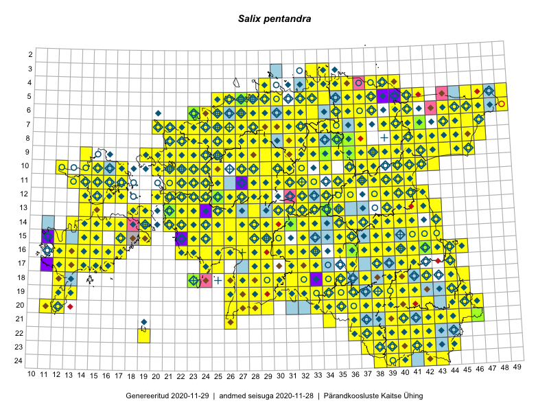

Salix pentandra — raudremmelgas
Salicaceae :: Salix pentandra L. (1560)

Kaart põhineb 3618 kirjel:
vaatlusi 1220
herbaareksemplare 340
PKÜ kirjeid1 483
ELFi kirjeid2 1570
LVA kirjeid3 5
Taime kaasaegsed ja ajaloolised leiukohad asuvad 494 ruudus.
Tingmärgid ja leidudega ruutude arvud periooditi uues (u) ja 2005 andmestikus (v)
| █ | vahemik | u4 | v5 |
|---|---|---|---|
| █ | 2006–2020 | 456 | – |
| ◆/◇ | 1971–2005 | 399 | 403 |
| ○ | 1921–1970 | 174 | 13 |
| + | kuni 1920 | 24 | 0 |
| × | hävinud | – | 0 |
| ? | kaheldav | – | 0 |
| Ruut | Leidja(d) | Leiuaeg | Kirje |
|---|---|---|---|
| 08-28 | Toivo Sepp | 2020-09-18 | ELF: 24985 |
| 08-29 | Toivo Sepp | 2020-09-17 | ELF: 2645 |
| 09-29 | Toivo Sepp | 2020-09-11 | ELF: 2468 |
| 16-17 | Toomas Kukk | 2020-09-10 | ruut/ala: Salix pentandra L. |
| 11-28 | Toivo Sepp | 2020-09-04 | ELF: 3032 |
| 11-28 | Toivo Sepp | 2020-09-04 | ELF: 2986 |
| 16-14 | Mari Reitalu, Sirje Azarov | 2020-09-03 | ruut/ala: Salix pentandra L. |
| 16-23 | Peedu Saar | 2020-09-01 | ruut/ala: Salix pentandra L. |
| 16-23 | Peedu Saar | 2020-09-01 | PKÜ: 20897 |
| 16-22 | Peedu Saar | 2020-08-31 | ruut/ala: Salix pentandra L. |
| 16-22 | Peedu Saar | 2020-08-31 | PKÜ: 20655 |
| 15-17 | Mari Reitalu, Sirje Azarov | 2020-08-27–2020-09-06 | ruut/ala: Salix pentandra L. |
| 06-35 | Toomas Kukk, Peedu Saar | 2020-08-27 | ruut/ala: Salix pentandra L. |
| 04-36 | Toomas Kukk, Peedu Saar | 2020-08-26 | PKÜ: 20910 |
| 04-37 | Toomas Kukk | 2020-08-26 | PKÜ: 21003 |
| 04-36 | Peedu Saar, Toomas Kukk | 2020-08-26 | PKÜ: 20911 |
| 11-28 | Ott Luuk, Toivo Sepp | 2020-08-26 | ELF: 147 |
| 11-28 | Ott Luuk | 2020-08-26 | ELF: 2388 |
| 07-41 | Meeli Mesipuu | 2020-08-26 | PKÜ: 20412 |
| 07-41 | Meeli Mesipuu | 2020-08-26 | PKÜ: 20413 |
| 10-28 | Toivo Sepp | 2020-08-25 | ELF: 3073 |
| 09-29 | Toivo Sepp | 2020-08-24 | ELF: 24974 |
| 09-29;09-30 | Toivo Sepp | 2020-08-24 | ELF: 24976 |
| 10-30 | Ott Luuk | 2020-08-24 | ruut/ala: Salix pentandra L. |
| 10-29 | Ott Luuk | 2020-08-24 | ruut/ala: Salix pentandra L. |
| 05-35 | Eerik Leibak | 2020-08-23 | ELF: 11975 |
| 05-35 | Eerik Leibak | 2020-08-23 | ELF: 24891 |
| 10-30 | Toivo Sepp | 2020-08-22–2020-08-23 | ELF: 3041 |
| 10-30 | Toivo Sepp | 2020-08-22 | ELF: 3040 |
| 17-33 | Peedu Saar | 2020-08-21 | punkt: Salix pentandra L. |
| 17-33;18-33 | Peedu Saar | 2020-08-21 | PKÜ: 20922 |
| 14-16 | Mari Reitalu, Sirje Azarov | 2020-08-19–2020-08-20 | ruut/ala: Salix pentandra L. |
| 12-39 | Peedu Saar | 2020-08-19 | ruut/ala: Salix pentandra L. |
| 10-42 | Toomas Kukk, Ott Luuk, Kersti Tambets, Sten Mander, Kristine Fenske | 2020-08-18 | ruut/ala: Salix pentandra L. |
| 19-36 | Nele Ingerpuu | 2020-08-18 | ELF: 694 |
| 14-17 | Mari Reitalu, Sirje Azarov | 2020-08-18 | ruut/ala: Salix pentandra L. |
| 16-36 | Peedu Saar | 2020-08-17 | ruut/ala: Salix pentandra L. |
| 16-36 | Peedu Saar | 2020-08-17 | PKÜ: 20530 |
| 04-39;04-40 | Jaan Spiegel | 2020-08-17 | ELF: 24903 |
| 05-39 | Jaan Spiegel | 2020-08-16 | ELF: 968 |
| 13-18 | Mari Reitalu, Sirje Azarov | 2020-08-11–2020-08-12 | ruut/ala: Salix pentandra L. |
| 21-42 | Silvia Pihu | 2020-08-11 | ELF: 12305 |
| 21-42 | Silvia Pihu | 2020-08-11 | ELF: 9912 |
| 19-36 | Nele Ingerpuu | 2020-08-11 | ELF: 24839 |
| 15-35 | Peedu Saar | 2020-08-10–2020-08-17 | ruut/ala: Salix pentandra L. |
| 07-30 | Eerik Leibak | 2020-08-10 | ELF: 1207 |
| 07-29;07-30 | Eerik Leibak | 2020-08-10 | ELF: 24886 |
| 07-29 | Eerik Leibak | 2020-08-10 | ELF: 24888 |
| 16-17 | Mari Reitalu, Sirje Azarov | 2020-08-08–2020-08-29 | ruut/ala: Salix pentandra L. |
| 15-43 | Peedu Saar | 2020-08-08 | ruut/ala: Salix pentandra L. |
| 10-21 | Peedu Saar | 2020-08-07 | ruut/ala: Salix pentandra L. |
| 15-15 | Mari Reitalu, Sirje Azarov | 2020-08-07 | ruut/ala: Salix pentandra L. |
| 15-15 | Mari Reitalu, Sirje Azarov | 2020-08-07 | ruut/ala: Salix pentandra L. |
| 23-42 | Toomas Kukk | 2020-08-06 | ELF: 335 |
| 10-17 | Peedu Saar | 2020-08-06 | PKÜ: 20609 |
| 22-41 | Toomas Kukk, Eerik Leibak | 2020-08-05 | ruut/ala: Salix pentandra L. |
| 22-41 | Toomas Kukk | 2020-08-05 | ELF: 2198 |
| 22-41 | Toomas Kukk | 2020-08-05 | ELF: 9950 |
| 22-42 | Toomas Kukk | 2020-08-05 | ELF: 9945 |
| 22-42 | Toomas Kukk | 2020-08-05 | ELF: 9947 |
| 10-23 | Ott Luuk | 2020-08-05 | ruut/ala: Salix pentandra L. |
| 22-42 | Eerik Leibak | 2020-08-05 | ELF: 16964 |
| 14-40 | Peedu Saar | 2020-08-03 | ruut/ala: Salix pentandra L. |
| 06-27 | Peedu Saar | 2020-07-30 | ruut/ala: Salix pentandra L. |
| 07-44 | Toomas Kukk | 2020-07-29 | PKÜ: 21083 |
| 09-43 | Toomas Kukk | 2020-07-28 | ruut/ala: Salix pentandra L. |
| 09-43 | Toomas Kukk | 2020-07-28 | PKÜ: 21088 |
| 09-43 | Toomas Kukk | 2020-07-28 | PKÜ: 21093 |
| 09-43 | Toomas Kukk | 2020-07-28 | PKÜ: 21094 |
| 08-42 | Peedu Saar | 2020-07-28 | PKÜ: 20497 |
| 16-43 | Eerik Leibak | 2020-07-26 | ELF: 22158 |
| 19-40 | Jaanus Paal, Taimi Paal | 2020-07-24 | ELF: 11579 |
| 19-40 | Jaanus Paal, Taimi Paal | 2020-07-24 | ELF: 24875 |
| 20-39 | Jaanus Paal, Taimi Paal | 2020-07-20 | ELF: 22654 |
| 06-31 | Eerik Leibak | 2020-07-19 | ELF: 316 |
| 06-31 | Eerik Leibak | 2020-07-19 | ELF: 310 |
| 06-31 | Eerik Leibak | 2020-07-19 | ELF: 24884 |
| 06-31 | Eerik Leibak | 2020-07-19 | ELF: 314 |
| 06-31 | Eerik Leibak | 2020-07-19 | ELF: 313 |
| 05-36 | Jaan Spiegel | 2020-07-18 | ELF: 159 |
| 05-36 | Jaan Spiegel | 2020-07-18 | ELF: 158 |
| 05-36 | Jaan Spiegel | 2020-07-18 | ELF: 24479 |
| 07-26 | Eerik Leibak | 2020-07-18 | ELF: 1356 |
| 06-26 | Eerik Leibak | 2020-07-18 | ELF: 7809 |
| 08-26 | Eerik Leibak | 2020-07-16 | ELF: 2442 |
| 08-26 | Eerik Leibak | 2020-07-16 | ELF: 24883 |
| 07-36 | Jaan Spiegel | 2020-07-15 | ELF: 24895 |
| 06-35 | Jaan Spiegel | 2020-07-15 | ELF: 11991 |
| 08-26 | Eerik Leibak | 2020-07-15 | ELF: 2745 |
| 08-26 | Eerik Leibak | 2020-07-15 | ELF: 3512 |
| 08-26 | Eerik Leibak | 2020-07-15 | ELF: 2759 |
| 08-26 | Eerik Leibak | 2020-07-15 | ELF: 2758 |
| 13-24 | Silvia Pihu | 2020-07-10 | ELF: 981 |
| 13-23 | Silvia Pihu | 2020-07-09 | ELF: 38 |
| 14-22 | Silvia Pihu | 2020-07-08 | ELF: 43 |
| 14-22 | Silvia Pihu | 2020-07-08 | ELF: 24909 |
| 14-21 | Silvia Pihu | 2020-07-08 | ELF: 40 |
| 20-45 | Toomas Kukk, Eerik Leibak | 2020-07-07 | ruut/ala: Salix pentandra L. |
| 20-45 | Toomas Kukk | 2020-07-07 | ELF: 590 |
| 20-45 | Toomas Kukk | 2020-07-07 | ELF: 2804 |
| 20-45 | Toomas Kukk | 2020-07-07 | ELF: 24857 |
| 16-15 | Mari Reitalu, Sirje Azarov, Anne Teigamägi | 2020-07-07 | ruut/ala: Salix pentandra L. |
| 15-15 | Mari Reitalu, Sirje Azarov | 2020-07-07 | ruut/ala: Salix pentandra L. |
| 20-46 | Eerik Leibak | 2020-07-07 | ELF: 589 |
| 19-12 | Toomas Kukk | 2020-07-02 | PKÜ: 20527 |
| 20-12 | Peedu Saar | 2020-07-02 | PKÜ: 20547 |
| 09-26;09-27 | Eerik Leibak | 2020-07-02 | ELF: 9913 |
| 09-26 | Eerik Leibak | 2020-07-02 | ELF: 20667 |
| 17-11 | Ott Luuk, Rein Kalamees | 2020-07-01 | PKÜ: 20215 |
| 05-29 | Peedu Saar, Mart Meriste | 2020-06-19 | ruut/ala: Salix pentandra L. |
| 12-21;13-21 | Toomas Kukk, Rein Kalamees, Martin Tikk | 2020-06-18 | PKÜ: 21101 |
| 12-23 | Ott Luuk, Meeli Mesipuu | 2020-06-18 | PKÜ: 21146 |
| 12-23 | Meeli Mesipuu | 2020-06-18 | PKÜ: 21155 |
| 12-23 | Meeli Mesipuu | 2020-06-18 | PKÜ: 21157 |
| 07-29 | Toomas Kukk, Martin Tikk, Rein Kalamees | 2020-06-17 | ruut/ala: Salix pentandra L. |
| 10-21 | Meeli Mesipuu, Ott Luuk | 2020-06-17 | PKÜ: 21121 |
| 05-26 | Toomas Kukk, Martin Tikk | 2020-06-16 | PKÜ: 20848 |
| 09-21 | Ott Luuk, Peedu Saar | 2020-06-16 | PKÜ: 20433 |
| 09-21 | Ott Luuk, Peedu Saar | 2020-06-16 | PKÜ: 20438 |
| 07-28 | Toomas Kukk | 2020-06-15 | PKÜ: 20489 |
| 08-27 | Toomas Kukk | 2020-06-15 | PKÜ: 20463 |
| 11-32 | Ott Luuk, Peedu Saar | 2020-06-15 | PKÜ: 20416 |
| 03-33 | Toomas Kukk, Meeli Mesipuu | 2020-06-10 | ruut/ala: Salix pentandra L. |
| 03-33 | Toomas Kukk, Meeli Mesipuu | 2020-06-10 | ELF: 13763 |
| 05-34 | Rein Kalamees, Ott Luuk | 2020-06-10 | PKÜ: 20651 |
| 05-34 | Rein Kalamees, Ott Luuk | 2020-06-10 | PKÜ: 20668 |
| 04-34 | Peedu Saar, Ene Kook | 2020-06-10 | PKÜ: 20349 |
| 03-33 | Meeli Mesipuu, Toomas Kukk | 2020-06-10 | PKÜ: 20804 |
| 04-34 | Ene Kook | 2020-06-10 | PKÜ: 20351 |
| 05-34 | Rein Kalamees, Ott Luuk | 2020-06-09 | PKÜ: 20264 |
| 04-33 | Meeli Mesipuu, Toomas Kukk | 2020-06-09 | PKÜ: 21051 |
| 05-34 | Ott Luuk, Rein Kalamees | 2020-06-08 | PKÜ: 20259 |
| 05-34 | Ott Luuk, Rein Kalamees | 2020-06-08 | PKÜ: 20280 |
| 16-40 | Thea Kull | 2020-05-29–2020-07-03 | ruut/ala: Salix pentandra L. |
| 10-23 | Tõnu Ploompuu | 2019-10-01 | ELF: 213 |
| 10-23 | Tõnu Ploompuu | 2019-10-01 | ELF: 7781 |
| 10-24 | Tõnu Ploompuu | 2019-09-29 | ELF: 7794 |
| 09-31 | Toivo Sepp | 2019-09-29 | ELF: 1066 |
| 09-44 | Ott Luuk | 2019-09-28 | ruut/ala: Salix pentandra L. |
| 09-44 | Ott Luuk | 2019-09-28 | ELF: 24774 |
| 09-44 | Eerik Leibak | 2019-09-27 | ELF: 916 |
| 16-14 | Mari Reitalu, Sirje Azarov | 2019-09-26 | ELF: 83 |
| 06-29 | Eerik Leibak | 2019-09-20 | ELF: 2432 |
| 10-22 | Toomas Kukk, Peedu Saar | 2019-09-19 | ruut/ala: Salix pentandra L. |
| 11-22 | Peedu Saar, Toomas Kukk | 2019-09-19 | ruut/ala: Salix pentandra L. |
| 10-21 | Ott Luuk | 2019-09-19 | ruut/ala: Salix pentandra L. |
| 10-20 | Ott Luuk | 2019-09-18 | ruut/ala: Salix pentandra L. |
| 09-19 | Toomas Kukk, Peedu Saar | 2019-09-17 | ruut/ala: Salix pentandra L. |
| 08-44 | Thea Kull, Toomas Kukk | 2019-09-12 | ruut/ala: Salix pentandra L. |
| 06-47 | Peedu Saar, Timo Luhamäe | 2019-09-12 | ruut/ala: Salix pentandra L. |
| 06-46 | Toomas Kukk, Thea Kull | 2019-09-11 | ruut/ala: Salix pentandra L. |
| 06-45 | Thea Kull, Toomas Kukk | 2019-09-11 | punkt: Salix pentandra L. |
| 09-46 | Peedu Saar, Timo Luhamäe | 2019-09-11 | ruut/ala: Salix pentandra L. |
| 10-40 | Toomas Kukk, Thea Kull | 2019-09-10 | ruut/ala: Salix pentandra L. |
| 09-41 | Peedu Saar, Timo Luhamäe | 2019-09-10 | ruut/ala: Salix pentandra L. |
| 13-35 | Eerik Leibak | 2019-09-08 | ELF: 462 |
| 10-23 | Tõnu Ploompuu | 2019-09-07 | ELF: 193 |
| 08-24 | Peedu Saar, Ott Luuk | 2019-09-05 | ruut/ala: Salix pentandra L. |
| 08-25 | Ott Luuk, Peedu Saar | 2019-09-05 | ruut/ala: Salix pentandra L. |
| 08-22 | Peedu Saar | 2019-09-04 | ELF: 2892 |
| 09-22 | Ott Luuk | 2019-09-04 | ELF: 324 |
| 09-22 | Ott Luuk | 2019-09-04 | ELF: 3020 |
| 09-22 | Ott Luuk | 2019-09-04 | ELF: 24833 |
| 09-22 | Ott Luuk | 2019-09-04 | ELF: 24834 |
| 09-22 | Ott Luuk | 2019-09-03–2019-09-04 | ruut/ala: Salix pentandra L. |
| 08-21 | Peedu Saar | 2019-09-03 | ruut/ala: Salix pentandra L. |
| 08-21;08-22 | Peedu Saar | 2019-09-03 | ELF: 2813 |
| 09-22 | Ott Luuk | 2019-09-03 | ELF: 21063 |
| 05-26 | Ott Luuk, Peedu Saar | 2019-09-02 | ruut/ala: Salix pentandra L. |
| 08-27 | Eerik Leibak | 2019-09-02 | ELF: 261 |
| 07-27 | Eerik Leibak | 2019-09-02 | ELF: 3087 |
| 15-29 | Peedu Saar, Toomas Kukk | 2019-08-29 | ruut/ala: Salix pentandra L. |
| 13-32 | Ott Luuk, Eerik Leibak | 2019-08-29 | ruut/ala: Salix pentandra L. |
| 16-32 | Mari Reitalu, Thea Kull, Martin Tikk | 2019-08-29 | ruut/ala: Salix pentandra L. |
| 16-30 | Peedu Saar, Martin Tikk, Toomas Kukk | 2019-08-28 | ruut/ala: Salix pentandra L. |
| 14-31 | Ott Luuk, Eerik Leibak | 2019-08-28 | ruut/ala: Salix pentandra L. |
| 14-30 | Ott Luuk, Eerik Leibak | 2019-08-28 | ruut/ala: Salix pentandra L. |
| 14-31 | Ott Luuk, Eerik Leibak | 2019-08-28 | TAA0150273: Salix pentandra L. |
| 14-31 | Ott Luuk, Eerik Leibak | 2019-08-28 | TAA0150274: Salix pentandra L. |
| 14-29 | Mari Reitalu, Thea Kull | 2019-08-28 | ruut/ala: Salix pentandra L. |
| 17-32 | Peedu Saar, Martin Tikk, Toomas Kukk | 2019-08-27 | ruut/ala: Salix pentandra L. |
| 15-35 | Meeli Mesipuu, Timo Luhamäe | 2019-08-27 | ruut/ala: Salix pentandra L. |
| 17-13 | Sirje Azarov, Mari Reitalu | 2019-08-25 | ELF: 24 |
| 17-13 | Sirje Azarov, Mari Reitalu | 2019-08-25 | ELF: 25 |
| 10-22 | Tõnu Ploompuu | 2019-08-21 | ELF: 281 |
| 17-13 | Mari Reitalu, Sirje Azarov | 2019-08-19 | punkt: Salix pentandra L. |
| 17-13 | Mari Reitalu, Sirje Azarov | 2019-08-19 | ELF: 23 |
| 17-13 | Mari Reitalu, Sirje Azarov | 2019-08-19 | ELF: 5310 |
| 13-26 | Thea Kull | 2019-08-16 | ruut/ala: Salix pentandra L. |
| 12-26;13-26 | Thea Kull | 2019-08-16 | ELF: 20728 |
| 09-22 | Peedu Saar | 2019-08-16 | ruut/ala: Salix pentandra L. |
| 09-22 | Peedu Saar | 2019-08-16 | ELF: 2188 |
| 09-22 | Peedu Saar | 2019-08-16 | ELF: 2344 |
| 09-22 | Peedu Saar | 2019-08-16 | ELF: 24824 |
| 08-21;09-21 | Peedu Saar | 2019-08-15 | ELF: 21047 |
| 16-13 | Mari Reitalu, Sirje Azarov | 2019-08-15 | ELF: 13 |
| 16-12 | Sirje Azarov, Mari Reitalu | 2019-08-09 | ELF: 53 |
| 10-22 | Tõnu Ploompuu | 2019-08-08 | ELF: 937 |
| 09-39 | Rein Kalamees, Toomas Kukk | 2019-08-08 | ruut/ala: Salix pentandra L. |
| 08-33 | Ott Luuk, Jaak-Albert Metsoja | 2019-08-08 | ruut/ala: Salix pentandra L. |
| 07-33 | Ott Luuk, Jaak-Albert Metsoja | 2019-08-08 | ruut/ala: Salix pentandra L. |
| 07-35 | Toomas Kukk, Rein Kalamees, Kaur Maran | 2019-08-07 | ruut/ala: Salix pentandra L. |
| 07-34 | Toomas Kukk, Rein Kalamees, Kaur Maran | 2019-08-07 | ruut/ala: Salix pentandra L. |
| 06-36 | Peedu Saar, Timo Luhamäe | 2019-08-07 | ruut/ala: Salix pentandra L. |
| 03-34 | Rein Kalamees, Toomas Kukk | 2019-08-06 | ruut/ala: Salix pentandra L. |
| 04-39 | Ott Luuk, Jaak-Albert Metsoja | 2019-08-06 | ruut/ala: Salix pentandra L. |
| 04-36 | Meeli Mesipuu | 2019-08-06 | ruut/ala: Salix pentandra L. |
| 06-32 | Toomas Kukk, Rein Kalamees | 2019-08-05 | ruut/ala: Salix pentandra L. |
| 06-31 | Peedu Saar, Timo Luhamäe | 2019-08-05 | ruut/ala: Salix pentandra L. |
| 07-31 | Peedu Saar, Timo Luhamäe | 2019-08-05 | ruut/ala: Salix pentandra L. |
| 06-37 | Meeli Mesipuu | 2019-08-05 | ruut/ala: Salix pentandra L. |
| 17-15 | Sirje Azarov | 2019-08-04 | ELF: 94 |
| 17-15 | Sirje Azarov | 2019-08-04 | ELF: 9956 |
| 10-24 | Tõnu Ploompuu | 2019-08-03 | ELF: 7763 |
| 12-29 | Toivo Sepp | 2019-08-02 | ELF: 24739 |
| 20-39 | Peedu Saar, Toomas Kukk | 2019-08-01 | ruut/ala: Salix pentandra L. |
| 10-32 | Ott Luuk | 2019-07-31 | ruut/ala: Salix pentandra L. |
| 12-29 | Toivo Sepp | 2019-07-30 | ELF: 1400 |
| 12-38 | Peedu Saar | 2019-07-30 | ruut/ala: Salix pentandra L. |
| 08-21 | Peedu Saar | 2019-07-26 | ruut/ala: Salix pentandra L. |
| 07-21 | Peedu Saar | 2019-07-26 | ELF: 179 |
| 09-31 | Toivo Sepp, Ott Luuk | 2019-07-25 | ELF: 24748 |
| 18-39 | Thea Kull | 2019-07-25 | ruut/ala: Salix pentandra L. |
| 07-21 | Peedu Saar | 2019-07-25 | ruut/ala: Salix pentandra L. |
| 07-21 | Peedu Saar | 2019-07-25 | ELF: 24817 |
| 08-32;09-32 | Toivo Sepp, Ott Luuk | 2019-07-24 | ELF: 1414 |
| 07-22 | Peedu Saar | 2019-07-24 | ruut/ala: Salix pentandra L. |
| 07-22 | Peedu Saar | 2019-07-24 | ELF: 20011 |
| 11-30 | Toivo Sepp, Ott Luuk | 2019-07-23 | ELF: 20378 |
| 11-29 | Ott Luuk, Toivo Sepp | 2019-07-23 | ELF: 1124 |
| 17-38 | Meeli Mesipuu | 2019-07-23 | ruut/ala: Salix pentandra L. |
| 16-12 | Mari Reitalu | 2019-07-23 | ELF: 734 |
| 11-24 | Tõnu Ploompuu, Eliko Kõiv | 2019-07-20 | ELF: 212 |
| 10-24 | Tõnu Ploompuu, Eliko Kõiv | 2019-07-20 | ELF: 7787 |
| 10-24 | Tõnu Ploompuu, Eliko Kõiv | 2019-07-20 | ELF: 9869 |
| 10-24;11-24 | Tõnu Ploompuu, Eliko Kõiv | 2019-07-20 | ELF: 24787 |
| 18-13 | Mari Reitalu, Sirje Azarov | 2019-07-18 | ELF: 9930 |
| 19-13 | Mari Reitalu, Sirje Azarov | 2019-07-18 | ELF: 13419 |
| 09-27 | Eerik Leibak | 2019-07-17 | ELF: 871 |
| 17-38 | Peedu Saar, Ott Luuk | 2019-07-15 | ruut/ala: Salix pentandra L. |
| 08-27 | Eerik Leibak | 2019-07-15 | ELF: 880 |
| 17-12 | Mari Reitalu | 2019-07-14 | ELF: 24782 |
| 08-27 | Eerik Leibak | 2019-07-14 | ELF: 13081 |
| 08-27 | Eerik Leibak | 2019-07-14 | ELF: 24759 |
| 23-42 | Toomas Kukk, Indrek Tammekänd | 2019-07-12 | ruut/ala: Salix pentandra L. |
| 21-36 | Peedu Saar, Timo Luhamäe | 2019-07-12 | ruut/ala: Salix pentandra L. |
| 23-38 | Peedu Saar, Timo Luhamäe | 2019-07-12 | ruut/ala: Salix pentandra L. |
| 18-42 | Meeli Mesipuu | 2019-07-12 | ruut/ala: Salix pentandra L. |
| 22-41 | Toomas Kukk, Indrek Tammekänd | 2019-07-11 | ruut/ala: Salix pentandra L. |
| 23-44 | Ott Luuk, Tiit Hallikma | 2019-07-11 | ruut/ala: Salix pentandra L. |
| 19-41 | Meeli Mesipuu | 2019-07-11 | ruut/ala: Salix pentandra L. |
| 19-12 | Mari Reitalu, Sirje Azarov | 2019-07-11 | ruut/ala: Salix pentandra L. |
| 12-36 | Eerik Leibak | 2019-07-11 | ELF: 455 |
| 13-36 | Eerik Leibak | 2019-07-11 | ELF: 12893 |
| 12-36 | Eerik Leibak | 2019-07-11 | ELF: 24751 |
| 21-40 | Toomas Kukk, Indrek Tammekänd | 2019-07-10 | ruut/ala: Salix pentandra L. |
| 19-39 | Thea Kull | 2019-07-10 | ruut/ala: Salix pentandra L. |
| 22-38 | Peedu Saar, Timo Luhamäe | 2019-07-10 | ruut/ala: Salix pentandra L. |
| 11-35 | Jaanus Paal, Elo Raspel | 2019-07-10 | ELF: 245 |
| 11-35 | Jaanus Paal, Elo Raspel | 2019-07-10 | ELF: 246 |
| 10-36 | Jaanus Paal, Elo Raspel | 2019-07-10 | ELF: 12128 |
| 11-35 | Jaanus Paal, Elo Raspel | 2019-07-10 | ELF: 24719 |
| 10-36 | Jaanus Paal, Elo Raspel | 2019-07-10 | ELF: 24720 |
| 20-42 | Toomas Kukk, Indrek Tammekänd | 2019-07-09 | ruut/ala: Salix pentandra L. |
| 10-37 | Jaanus Paal | 2019-07-09 | ELF: 11291 |
| 11-36 | Jaanus Paal, Elo Raspel | 2019-07-05 | ELF: 4372 |
| 11-36 | Jaanus Paal, Elo Raspel | 2019-07-05 | ELF: 24707 |
| 11-36 | Jaanus Paal, Elo Raspel | 2019-07-05 | ELF: 24708 |
| 11-36 | Jaanus Paal, Elo Raspel | 2019-07-05 | ELF: 24709 |
| 11-36 | Jaanus Paal, Elo Raspel | 2019-07-05 | ELF: 24710 |
| 11-36 | Jaanus Paal, Elo Raspel | 2019-07-05 | ELF: 24711 |
| 08-40;09-40 | Jaanus Paal | 2019-07-04 | ELF: 796 |
| 20-12 | Sirje Azarov, Mari Reitalu | 2019-07-03 | ELF: 2827 |
| 20-12 | Sirje Azarov, Mari Reitalu | 2019-07-03 | ELF: 13383 |
| 20-12 | Sirje Azarov, Mari Reitalu | 2019-07-03 | ELF: 13409 |
| 14-39 | Ott Luuk, Kaili Kattai | 2019-07-03 | ruut/ala: Salix pentandra L. |
| 11-36 | Jaanus Paal, Elo Raspel, Kristiina Miško | 2019-07-03 | ELF: 2021 |
| 11-16 | Eerik Leibak | 2019-07-03 | ruut/ala: Salix pentandra L. |
| 11-16 | Eerik Leibak | 2019-07-03 | ELF: 24695 |
| 11-15 | Toomas Kukk | 2019-07-02 | ruut/ala: Salix pentandra L. |
| 11-15 | Toomas Kukk | 2019-07-02 | ELF: 612 |
| 11-15 | Toomas Kukk | 2019-07-02 | ELF: 24691 |
| 08-36;09-36 | Jaanus Paal | 2019-07-02 | ELF: 808 |
| 11-15 | Eerik Leibak | 2019-07-02 | ELF: 24689 |
| 10-17 | Toomas Kukk, Eerik Leibak | 2019-07-01 | ELF: 1977 |
| 10-17 | Toomas Kukk, Eerik Leibak | 2019-07-01 | ELF: 18800 |
| 17-12 | Mari Reitalu | 2019-07-01 | ELF: 4696 |
| 09-34;10-34 | Jaanus Paal | 2019-07-01 | ELF: 255 |
| 10-17 | Eerik Leibak, Toomas Kukk | 2019-07-01 | ruut/ala: Salix pentandra L. |
| 05-28 | Meeli Mesipuu | 2019-06-30 | ruut/ala: Salix pentandra L. |
| 05-28 | Meeli Mesipuu | 2019-06-30 | ruut/ala: Salix pentandra L. |
| 05-28 | Meeli Mesipuu | 2019-06-30 | ruut/ala: Salix pentandra L. |
| 15-12 | Mari Reitalu, Triin Reitalu | 2019-06-27 | ruut/ala: Salix pentandra L. |
| 05-27 | Meeli Mesipuu | 2019-06-26 | ruut/ala: Salix pentandra L. |
| 05-27 | Meeli Mesipuu | 2019-06-26 | TAA0151198: Salix pentandra L. |
| 05-27 | Meeli Mesipuu | 2019-06-26 | TAA0151199: Salix pentandra L. |
| 06-27 | Meeli Mesipuu | 2019-06-22 | ruut/ala: Salix pentandra L. |
| 07-37 | Peedu Saar, Ott Luuk | 2019-06-12 | ruut/ala: Salix pentandra L. |
| 12-38 | Ulvi Selgis | 2019-06-10 | LVA: 1823608064 |
| 11-37 | Ott Luuk, Peedu Saar | 2019-06-10 | ruut/ala: Salix pentandra L. |
| 15-43 | Peedu Saar | 2019-06-07 | ruut/ala: Salix pentandra L. |
| 16-45 | Ott Luuk | 2019-06-07 | ruut/ala: Salix pentandra L. |
| 10-14 | Toomas Kukk, Indrek Tammekänd | 2019-06-02 | ruut/ala: Salix pentandra L. |
| 16-40 | Ott Luuk, Thea Kull, Meeli Mesipuu | 2019-05-30 | ruut/ala: Salix pentandra L. |
| 12-14 | Peedu Saar, Toomas Kukk | 2019-05-22 | ruut/ala: Salix pentandra L. |
| 10-25 | Tõnu Ploompuu, Marko Vainu | 2018-09-07 | ELF: 9891 |
| 08-22;09-22;09-23 | Tõnu Ploompuu, Laura Paju, Helen Valts, Marko Vainu | 2018-09-06 | ELF: 325 |
| 09-25 | Ott Luuk, Thea Kull | 2018-09-06 | ruut/ala: Salix pentandra L. |
| 08-27 | Ott Luuk, Thea Kull | 2018-09-06 | ruut/ala: Salix pentandra L. |
| 14-24 | Indrek Tammekänd | 2018-09-03 | ELF: 21802 |
| 14-24 | Indrek Tammekänd | 2018-09-02 | ELF: 24498 |
| 11-27 | Ott Luuk, Toivo Sepp | 2018-08-30 | ELF: 20677 |
| 10-32 | Ott Luuk | 2018-08-29 | ruut/ala: Salix pentandra L. |
| 10-32 | Ott Luuk | 2018-08-29 | ELF: 1329 |
| 12-29 | Indrek Tammekänd | 2018-08-29 | ELF: 1260 |
| 10-30 | Ott Luuk, Toivo Sepp | 2018-08-27 | ruut/ala: Salix pentandra L. |
| 10-30 | Ott Luuk, Toivo Sepp | 2018-08-27 | ELF: 20390 |
| 10-30 | Ott Luuk, Toivo Sepp | 2018-08-27 | ELF: 20394 |
| 11-29 | Toivo Sepp | 2018-08-23 | ELF: 9904 |
| 14-38 | Peedu Saar | 2018-08-23 | ruut/ala: Salix pentandra L. |
| 08-22 | Tõnu Ploompuu, Priit Kukk | 2018-08-21 | ELF: 2610 |
| 08-21 | Tõnu Ploompuu, Priit Kukk | 2018-08-21 | ELF: 24601 |
| 16-22 | Indrek Tammekänd | 2018-08-21 | ELF: 9871 |
| 14-31 | Toomas Kukk | 2018-08-18 | ruut/ala: Salix pentandra L. |
| 14-32 | Toomas Kukk | 2018-08-18 | ruut/ala: Salix pentandra L. |
| 07-47 | Meeli Mesipuu | 2018-08-18 | ruut/ala: Salix pentandra L. |
| 13-23 | Peedu Saar, Toomas Kukk, Ott Luuk, Kersti Tambets, Sten Mander | 2018-08-17 | ruut/ala: Salix pentandra L. |
| 13-23 | Peedu Saar, Toomas Kukk, Ott Luuk, Kersti Tambets, Sten Mander | 2018-08-17 | ruut/ala: Salix pentandra L. |
| 11-29 | Peedu Saar, Toomas Kukk, Ott Luuk, Kersti Tambets, Sten Mander | 2018-08-16 | ruut/ala: Salix pentandra L. |
| 17-31 | Peedu Saar, Polina Degtjarenko | 2018-08-14 | ruut/ala: Salix pentandra L. |
| 17-31 | Peedu Saar | 2018-08-14 | ELF: 5186 |
| 06-29 | Eerik Leibak | 2018-08-08 | ELF: 24553 |
| 06-31 | Peedu Saar, Toomas Kukk | 2018-08-07 | ruut/ala: Salix pentandra L. |
| 14-17 | Mari Reitalu, Sirje Azarov | 2018-08-07 | ruut/ala: Salix pentandra L. |
| 14-16;14-17 | Mari Reitalu, Sirje Azarov | 2018-08-07 | ELF: 2585 |
| 13-19 | Mari Reitalu, Sirje Azarov | 2018-08-07 | ELF: 24039 |
| 07-27 | Eerik Leibak | 2018-08-07 | ELF: 15896 |
| 07-27 | Eerik Leibak | 2018-08-07 | ELF: 24550 |
| 07-27 | Eerik Leibak | 2018-08-07 | ELF: 24551 |
| 16-14 | Mari Reitalu, Sirje Azarov | 2018-08-06 | ELF: 92 |
| 17-15 | Mari Reitalu, Sirje Azarov | 2018-08-06 | ELF: 24664 |
| 07-26 | Eerik Leibak | 2018-08-06 | ELF: 21168 |
| 07-25 | Eerik Leibak | 2018-08-06 | ELF: 21181 |
| 07-25 | Eerik Leibak | 2018-08-06 | ELF: 24512 |
| 12-23 | Tõnu Ploompuu, Mart Tartlan, Helen Valts, Tanel Pihelgas | 2018-08-03 | ELF: 2379 |
| 09-31 | Ott Luuk, Toivo Sepp | 2018-08-02 | ELF: 1065 |
| 10-31 | Ott Luuk | 2018-08-01 | ruut/ala: Salix pentandra L. |
| 15-42 | Peedu Saar | 2018-07-20 | ruut/ala: Salix pentandra L. |
| 15-43 | Peedu Saar | 2018-07-20 | ruut/ala: Salix pentandra L. |
| 15-43 | Peedu Saar | 2018-07-20 | ELF: 3026 |
| 23-42 | Toomas Kukk, Eerik Leibak | 2018-07-18 | ruut/ala: Salix pentandra L. |
| 08-45;09-45 | Peedu Saar | 2018-07-18 | ELF: 20617 |
| 08-45 | Peedu Saar | 2018-07-17–2018-07-18 | ruut/ala: Salix pentandra L. |
| 09-43 | Toomas Kukk | 2018-07-17 | ruut/ala: Salix pentandra L. |
| 23-38 | Eerik Leibak | 2018-07-16 | ELF: 23327 |
| 22-38 | Eerik Leibak | 2018-07-15 | ELF: 23224 |
| 20-12 | Mari Reitalu, Sirje Azarov | 2018-07-12 | ELF: 935 |
| 08-26 | Eerik Leibak | 2018-07-12 | ELF: 21196 |
| 08-25 | Eerik Leibak | 2018-07-12 | ELF: 24513 |
| 07-24 | Eerik Leibak | 2018-07-12 | ELF: 24542 |
| 08-26 | Eerik Leibak | 2018-07-12 | ELF: 24543 |
| 06-31 | Eerik Leibak | 2018-07-11 | ELF: 315 |
| 06-31 | Eerik Leibak | 2018-07-11 | ELF: 24540 |
| 20-12 | Mari Reitalu, Sirje Azarov | 2018-07-10–2018-07-12 | ruut/ala: Salix pentandra L. |
| 17-12 | Mari Reitalu, Sirje Azarov | 2018-07-10 | ELF: 1373 |
| 20-12 | Mari Reitalu, Sirje Azarov | 2018-07-10 | ELF: 2877 |
| 07-35 | Thea Kull, Katrin Kaldma | 2018-07-07 | ELF: 24559 |
| 09-36 | Thea Kull | 2018-07-05 | ELF: 24555 |
| 06-23 | Peedu Saar | 2018-07-05 | ruut/ala: Salix pentandra L. |
| 06-23 | Ott Luuk, Meeli Mesipuu, Jaak-Albert Metsoja, Mari Metsoja | 2018-07-05 | ruut/ala: Salix pentandra L. |
| 06-23 | Ott Luuk, Meeli Mesipuu, Jaak-Albert Metsoja, Mari Metsoja, Peedu Saar | 2018-07-04–2018-07-06 | ruut/ala: Salix pentandra L. |
| 06-23 | Peedu Saar | 2018-07-04 | ruut/ala: Salix pentandra L. |
| 08-27 | Mari Reitalu, Sirje Azarov | 2018-07-01 | ruut/ala: Salix pentandra L. |
| 05-32 | Rein Kalamees | 2018-06-28 | ruut/ala: Salix pentandra L. |
| 09-33 | Eerik Leibak | 2018-06-22 | ELF: 24534 |
| 13-42 | Toomas Kukk, Ilmar Uibopuu | 2018-06-17 | ruut/ala: Salix pentandra L. |
| 08-41 | Mare Rennel | 2018-06-14 | LVA: 948577316 |
| 16-31 | Indrek Tammekänd | 2018-06-04–2018-06-05 | ruut/ala: Salix pentandra L. |
| 16-14 | Toomas Kukk, Ilmar Uibopuu, Mari Reitalu | 2018-05-28 | ruut/ala: Salix pentandra L. |
| 16-15 | Toomas Kukk, Ilmar Uibopuu | 2018-05-27 | ruut/ala: Salix pentandra L. |
| 14-37 | Ulvi Selgis | 2018-05-17 | LVA: -536303764 |
| 24-43 | Peedu Saar, Toomas Kukk | 2018-05-17 | punkt: Salix pentandra L. |
| 16-24 | Indrek Tammekänd | 2017-10-11 | ruut/ala: Salix pentandra L. |
| 04-38 | Peedu Saar, Toomas Kukk | 2017-09-28 | ruut/ala: Salix pentandra L. |
| 08-35 | Peedu Saar, Toomas Kukk | 2017-09-27 | ruut/ala: Salix pentandra L. |
| 12-15 | Toomas Kukk, Indrek Tammekänd | 2017-09-13 | ruut/ala: Salix pentandra L. |
| 11-15 | Peedu Saar, Ott Luuk | 2017-09-13 | ruut/ala: Salix pentandra L. |
| 11-14 | Ott Luuk, Peedu Saar | 2017-09-13 | ruut/ala: Salix pentandra L. |
| 10-12 | Toomas Kukk, Indrek Tammekänd | 2017-09-12 | ruut/ala: Salix pentandra L. |
| 12-17 | Toomas Kukk, Indrek Tammekänd | 2017-09-11 | ruut/ala: Salix pentandra L. |
| 10-17 | Ott Luuk, Peedu Saar | 2017-09-11 | ruut/ala: Salix pentandra L. |
| 10-21 | Peedu Saar, Toomas Kukk | 2017-09-07 | ruut/ala: Salix pentandra L. |
| 14-25 | Peedu Saar, Toomas Kukk | 2017-09-06 | ruut/ala: Salix pentandra L. |
| 18-27 | Peedu Saar, Toomas Kukk | 2017-09-06 | ruut/ala: Salix pentandra L. |
| 14-26 | Indrek Tammekänd | 2017-09-04 | ruut/ala: Salix pentandra L. |
| 13-19 | Toomas Kukk, Peedu Saar, Ott Luuk | 2017-08-26 | ruut/ala: Salix pentandra L. |
| 14-43 | Peedu Saar, Ott Luuk | 2017-08-21 | ruut/ala: Salix pentandra L. |
| 15-38 | Indrek Tammekänd | 2017-08-17 | ruut/ala: Salix pentandra L. |
| 14-35 | Peedu Saar | 2017-08-15–2017-09-16 | ruut/ala: Salix pentandra L. |
| 14-36 | Ott Luuk | 2017-08-15 | ruut/ala: Salix pentandra L. |
| 16-28 | Peedu Saar, Timo Luhamäe | 2017-08-11 | ruut/ala: Salix pentandra L. |
| 15-28 | Peedu Saar, Timo Luhamäe | 2017-08-11 | ruut/ala: Salix pentandra L. |
| 14-28 | Ott Luuk, Indrek Tammekänd | 2017-08-11 | ruut/ala: Salix pentandra L. |
| 14-27 | Ott Luuk, Indrek Tammekänd | 2017-08-11 | ruut/ala: Salix pentandra L. |
| 09-24 | Mari Reitalu, Eerik Leibak | 2017-08-11 | ruut/ala: Salix pentandra L. |
| 09-24 | Mari Reitalu, Eerik Leibak | 2017-08-11 | ELF: 24041 |
| 14-29 | Ilmar Uibopuu, Toomas Kukk | 2017-08-11 | ruut/ala: Salix pentandra L. |
| 15-29 | Ilmar Uibopuu, Toomas Kukk | 2017-08-11 | ruut/ala: Salix pentandra L. |
| 11-25 | Toomas Kukk, Eerik Leibak | 2017-08-10 | ruut/ala: Salix pentandra L. |
| 05-26 | Peedu Saar, Timo Luhamäe | 2017-08-10 | ruut/ala: Salix pentandra L. |
| 07-25 | Mari Reitalu, Indrek Tammekänd | 2017-08-10 | ruut/ala: Salix pentandra L. |
| 11-24 | Eerik Leibak, Toomas Kukk | 2017-08-10 | ruut/ala: Salix pentandra L. |
| 09-29 | Toomas Kukk, Ilmar Uibopuu, Kadri Kuusksalu | 2017-08-09 | ruut/ala: Salix pentandra L. |
| 12-24 | Peedu Saar, Timo Luhamäe | 2017-08-09 | ruut/ala: Salix pentandra L. |
| 12-25 | Peedu Saar, Timo Luhamäe | 2017-08-09 | ruut/ala: Salix pentandra L. |
| 12-27 | Mari Reitalu, Eerik Leibak | 2017-08-09 | ruut/ala: Salix pentandra L. |
| 12-26 | Mari Reitalu, Eerik Leibak | 2017-08-09 | ruut/ala: Salix pentandra L. |
| 12-29 | Indrek Tammekänd | 2017-08-09 | ruut/ala: Salix pentandra L. |
| 08-26 | Toomas Kukk, Ilmar Uibopuu, Kadri Kuusksalu | 2017-08-08 | ruut/ala: Salix pentandra L. |
| 07-26 | Toomas Kukk, Ilmar Uibopuu, Kadri Kuusksalu | 2017-08-08 | ruut/ala: Salix pentandra L. |
| 07-28 | Peedu Saar, Timo Luhamäe | 2017-08-08 | ruut/ala: Salix pentandra L. |
| 07-27 | Peedu Saar, Timo Luhamäe | 2017-08-08 | ruut/ala: Salix pentandra L. |
| 11-28 | Ott Luuk, Thea Kull | 2017-08-08 | ruut/ala: Salix pentandra L. |
| 09-27 | Meeli Mesipuu, Indrek Tammekänd | 2017-08-08 | ruut/ala: Salix pentandra L. |
| 08-27 | Mari Reitalu, Eerik Leibak | 2017-08-08 | ruut/ala: Salix pentandra L. |
| 08-28 | Mari Reitalu, Eerik Leibak | 2017-08-08 | ruut/ala: Salix pentandra L. |
| 16-37 | Ott Luuk, Thea Kull | 2017-08-01 | ruut/ala: Salix pentandra L. |
| 20-39 | Ilmar Uibopuu | 2017-08-01 | ruut/ala: Salix pentandra L. |
| 07-24 | Toomas Kukk, Ilmar Uibopuu | 2017-07-30 | ruut/ala: Salix pentandra L. |
| 07-22 | Toomas Kukk, Ilmar Uibopuu | 2017-07-29 | ruut/ala: Salix pentandra L. |
| 08-22 | Toomas Kukk, Ilmar Uibopuu | 2017-07-29 | ruut/ala: Salix pentandra L. |
| 07-21 | Toomas Kukk, Ilmar Uibopuu | 2017-07-28 | ruut/ala: Salix pentandra L. |
| 06-23 | Toomas Kukk | 2017-07-27 | ruut/ala: Salix pentandra L. |
| 06-24 | Ilmar Uibopuu, Kadri Kuusksalu | 2017-07-27 | ruut/ala: Salix pentandra L. |
| 06-23 | Toomas Kukk, Ilmar Uibopuu, Kadri Kuusksalu | 2017-07-26 | ruut/ala: Salix pentandra L. |
| 14-39 | Peedu Saar | 2017-07-26 | ruut/ala: Salix pentandra L. |
| 19-38 | Peedu Saar, Ott Luuk | 2017-07-25 | ruut/ala: Salix pentandra L. |
| 20-38 | Ott Luuk, Peedu Saar | 2017-07-25 | ruut/ala: Salix pentandra L. |
| 12-42 | Peedu Saar | 2017-07-24 | ruut/ala: Salix pentandra L. |
| 13-43 | Peedu Saar | 2017-07-24 | ruut/ala: Salix pentandra L. |
| 16-40 | Meeli Mesipuu | 2017-07-22–2017-07-30 | ruut/ala: Salix pentandra L. |
| 06-49 | Toomas Kukk | 2017-07-21 | ruut/ala: Salix pentandra L. |
| 06-31 | Peedu Saar, Ott Luuk | 2017-07-21 | ruut/ala: Salix pentandra L. |
| 06-33 | Ott Luuk, Peedu Saar | 2017-07-21 | ruut/ala: Salix pentandra L. |
| 16-23 | Indrek Tammekänd, Eike Tammekänd | 2017-07-20 | ruut/ala: Salix pentandra L. |
| 06-35 | Ott Luuk, Peedu Saar | 2017-07-19 | ruut/ala: Salix pentandra L. |
| 17-28 | Indrek Tammekänd | 2017-07-18 | ruut/ala: Salix pentandra L. |
| 15-18 | Heete Ausmeel, Triin Edovald, Evelin Laanest, Tõnu Ploompuu, Ilmar Uibopuu, Marko Vainu | 2017-07-06 | LVA: -1424849268 |
| 18-29 | Indrek Tammekänd | 2017-07-05 | ruut/ala: Salix pentandra L. |
| 15-41 | Ott Luuk, Peedu Saar | 2017-07-04 | ruut/ala: Salix pentandra L. |
| 16-41 | Peedu Saar, Ott Luuk | 2017-07-03–2017-07-04 | ruut/ala: Salix pentandra L. |
| 08-45 | Eerik Leibak | 2017-06-28 | ELF: 20757 |
| 18-39 | Peedu Saar | 2017-06-25 | punkt: Salix pentandra L. |
| 05-27 | Toomas Kukk | 2017-06-22 | ruut/ala: Salix pentandra L. |
| 16-36 | Ott Luuk, Thea Kull | 2017-06-21 | ruut/ala: Salix pentandra L. |
| 15-35 | Ott Luuk, Peedu Saar | 2017-06-20 | ruut/ala: Salix pentandra L. |
| 17-13 | Ott Luuk, Peedu Saar | 2016-10-08 | ruut/ala: Salix pentandra L. |
| 18-12 | Toomas Kukk, Meeli Mesipuu, Mari Reitalu | 2016-10-07 | ruut/ala: Salix pentandra L. |
| 19-12 | Ott Luuk, Peedu Saar | 2016-10-07 | ruut/ala: Salix pentandra L. |
| 19-31 | Ott Luuk, Peedu Saar | 2016-10-06 | ruut/ala: Salix pentandra L. |
| 16-13 | Toomas Kukk, Meeli Mesipuu | 2016-10-05 | ruut/ala: Salix pentandra L. |
| 08-32 | Ott Luuk, Peedu Saar | 2016-09-28 | ruut/ala: Salix pentandra L. |
| 20-11 | Meeli Mesipuu | 2016-09-25 | ruut/ala: Salix pentandra L. |
| 09-32 | Toomas Kukk, Peedu Saar | 2016-09-16 | ruut/ala: Salix pentandra L. |
| 06-33 | Peedu Saar, Toomas Kukk | 2016-09-14 | ruut/ala: Salix pentandra L. |
| 22-19 | Ott Luuk, Meeli Mesipuu | 2016-09-10–2016-09-11 | ruut/ala: Salix pentandra L. |
| 07-30 | Toomas Kukk, Peedu Saar | 2016-09-09 | ruut/ala: Salix pentandra L. |
| 06-32 | Toomas Kukk, Peedu Saar | 2016-09-08 | ruut/ala: Salix pentandra L. |
| 06-31 | Peedu Saar, Toomas Kukk | 2016-09-08 | ruut/ala: Salix pentandra L. |
| 09-31 | Peedu Saar, Ott Luuk | 2016-09-07 | ruut/ala: Salix pentandra L. |
| 05-38 | Thea Kull, Toomas Kukk | 2016-09-06 | ruut/ala: Salix pentandra L. |
| 04-39 | Thea Kull, Toomas Kukk | 2016-09-05 | ruut/ala: Salix pentandra L. |
| 10-25 | Peedu Saar, Ott Luuk | 2016-09-05 | ruut/ala: Salix pentandra L. |
| 16-17 | Peedu Saar, Ott Luuk | 2016-09-01 | ruut/ala: Salix pentandra L. |
| 14-16 | Ott Luuk, Peedu Saar | 2016-08-31 | ruut/ala: Salix pentandra L. |
| 09-46 | Meeli Mesipuu, Karin Kikas | 2016-08-31 | ruut/ala: Salix pentandra L. |
| 06-29 | Sander Laherand, Toomas Kukk | 2016-08-29 | ruut/ala: Salix pentandra L. |
| 20-36 | Thea Kull, Ott Luuk | 2016-08-23 | ruut/ala: Salix pentandra L. |
| 10-30 | Indrek Tammekänd, Janno Tammekänd, Üllar Tammekänd, Andreas Tammekänd, Tene Johanson | 2016-08-20–2016-08-21 | ruut/ala: Salix pentandra L. |
| 23-44 | Peedu Saar, Karin Kikas | 2016-08-19 | ruut/ala: Salix pentandra L. |
| 21-44 | Peedu Saar, Karin Kikas | 2016-08-18 | ruut/ala: Salix pentandra L. |
| 13-19 | Mari Reitalu, Sirje Azarov | 2016-08-16 | ruut/ala: Salix pentandra L. |
| 15-19 | Mari Reitalu, Triin Reitalu | 2016-08-14 | ruut/ala: Salix pentandra L. |
| 14-14 | Peedu Saar, Maret Gerz | 2016-08-12 | ruut/ala: Salix pentandra L. |
| 15-14 | Maret Gerz, Peedu Saar | 2016-08-12 | ruut/ala: Salix pentandra L. |
| 17-14 | Toomas Kukk, Meeli Mesipuu, Johannes Kõdar | 2016-08-11 | ruut/ala: Salix pentandra L. |
| 08-36 | Ott Luuk | 2016-08-11 | TAA0139246: Salix pentandra L. |
| 17-15 | Meeli Mesipuu, Toomas Kukk, Johannes Kõdar | 2016-08-11 | ruut/ala: Salix pentandra L. |
| 12-15 | Toomas Kukk, Meeli Mesipuu | 2016-08-10 | ruut/ala: Salix pentandra L. |
| 11-13 | Thea Kull, Peedu Saar | 2016-08-10 | ruut/ala: Salix pentandra L. |
| 05-47 | Ott Luuk, Kersti Tambets, Janika Sammasto, Ülle Jõgar, Sten Mander | 2016-08-10 | ruut/ala: Salix pentandra L. |
| 10-15 | Toomas Kukk, Sander Laherand, Nele Jõessar | 2016-08-09 | ruut/ala: Salix pentandra L. |
| 11-15 | Thea Kull, Peedu Saar | 2016-08-09 | ruut/ala: Salix pentandra L. |
| 10-14 | Sander Laherand, Toomas Kukk, Nele Jõessar | 2016-08-09 | ruut/ala: Salix pentandra L. |
| 09-39 | Ott Luuk, Eerik Leibak | 2016-08-09 | ruut/ala: Salix pentandra L. |
| 14-15 | Mari Reitalu, Sirje Azarov | 2016-08-09 | ruut/ala: Salix pentandra L. |
| 11-16 | Toomas Kukk, Thea Kull | 2016-08-08 | ruut/ala: Salix pentandra L. |
| 09-38 | Ott Luuk, Eerik Leibak | 2016-08-08 | ruut/ala: Salix pentandra L. |
| 11-17 | Maret Gerz, Meeli Mesipuu | 2016-08-08 | ruut/ala: Salix pentandra L. |
| 21-43 | Thea Kull, Peedu Saar | 2016-08-05 | ruut/ala: Salix pentandra L. |
| 22-42 | Thea Kull, Peedu Saar | 2016-08-04 | ruut/ala: Salix pentandra L. |
| 10-41 | Ott Luuk, Eerik Leibak | 2016-08-04 | ruut/ala: Salix pentandra L. |
| 10-42 | Ott Luuk, Eerik Leibak | 2016-08-04 | ruut/ala: Salix pentandra L. |
| 05-28 | Toomas Kukk, Peedu Saar | 2016-08-03 | ruut/ala: Salix pentandra L. |
| 10-40 | Ott Luuk, Eerik Leibak | 2016-08-03 | ruut/ala: Salix pentandra L. |
| 08-40 | Toomas Kukk, Tiit Hallikma | 2016-07-29 | ruut/ala: Salix pentandra L. |
| 05-30 | Sander Laherand, Eerik Leibak | 2016-07-29 | ruut/ala: Salix pentandra L. |
| 17-41 | Kersti Püssa, Rein Kalamees | 2016-07-29 | ruut/ala: Salix pentandra L. |
| 10-43 | Hannes Pehlak, Ott Luuk | 2016-07-29 | ruut/ala: Salix pentandra L. |
| 06-40 | Sander Laherand, Peedu Saar | 2016-07-28 | ruut/ala: Salix pentandra L. |
| 17-40 | Kersti Püssa, Rein Kalamees | 2016-07-28 | ruut/ala: Salix pentandra L. |
| 05-38 | Hannes Pehlak, Toomas Kukk, Susanna Vain | 2016-07-28 | ruut/ala: Salix pentandra L. |
| 05-36 | Tõnu Ploompuu, Eerik Leibak | 2016-07-27 | ruut/ala: Salix pentandra L. |
| 07-35 | Toomas Kukk, Sander Laherand, Nele Jõessar | 2016-07-27 | ruut/ala: Salix pentandra L. |
| 08-35 | Sander Laherand, Toomas Kukk, Nele Jõessar | 2016-07-27 | ruut/ala: Salix pentandra L. |
| 05-33 | Ott Luuk, Hannes Pehlak | 2016-07-27 | ruut/ala: Salix pentandra L. |
| 07-37 | Meeli Mesipuu, Tiit Hallikma | 2016-07-27 | ruut/ala: Salix pentandra L. |
| 08-27 | Erkki Otsman, Sergei Smirnov | 2016-07-27 | ruut/ala: Salix pentandra L. |
| 05-42 | Tiit Hallikma, Tõnu Ploompuu | 2016-07-26 | ruut/ala: Salix pentandra L. |
| 05-41 | Tiit Hallikma, Tõnu Ploompuu | 2016-07-26 | ruut/ala: Salix pentandra L. |
| 04-36 | Meeli Mesipuu, Liina Oja | 2016-07-26 | ruut/ala: Salix pentandra L. |
| 14-14 | Mari Reitalu, Sirje Azarov | 2016-07-26 | ruut/ala: Salix pentandra L. |
| 03-34 | Hannes Pehlak, Toomas Kukk | 2016-07-26 | ruut/ala: Salix pentandra L. |
| 04-34 | Hannes Pehlak, Toomas Kukk | 2016-07-26 | ruut/ala: Salix pentandra L. |
| 04-29 | Sander Laherand, Tõnu Ploompuu, Nele Jõessar | 2016-07-25 | ruut/ala: Salix pentandra L. |
| 09-36 | Peedu Saar, Liina Oja, Susanna Vain | 2016-07-25 | ruut/ala: Salix pentandra L. |
| 10-37 | Peedu Saar, Liina Oja, Susanna Vain | 2016-07-25 | ruut/ala: Salix pentandra L. |
| 09-34 | Ott Luuk, Eerik Leibak | 2016-07-25 | ruut/ala: Salix pentandra L. |
| 11-36 | Meeli Mesipuu, Timo Luhamäe | 2016-07-25 | ruut/ala: Salix pentandra L. |
| 10-30 | Erkki Otsman, Sergei Smirnov | 2016-07-25 | ruut/ala: Salix pentandra L. |
| 08-31 | Erkki Otsman, Sergei Smirnov | 2016-07-24 | ruut/ala: Salix pentandra L. |
| 14-37 | Eeva-Maria Jeletsky, Tarmo Niitla | 2016-07-23 | ruut/ala: Salix pentandra L. |
| 11-33 | Tõnu Ploompuu, Marko Veinbergs, Eerik Leibak | 2016-07-22 | ruut/ala: Salix pentandra L. |
| 10-31 | Toivo Sepp, Peedu Saar | 2016-07-22 | ruut/ala: Salix pentandra L. |
| 13-34 | Timo Luhamäe, Meeli Mesipuu | 2016-07-22 | TAA0144704: Salix pentandra L. |
| 14-29 | Sirje Azarov, Oliver Parrest | 2016-07-22 | ruut/ala: Salix pentandra L. |
| 11-31 | Peedu Saar, Toivo Sepp | 2016-07-22 | ruut/ala: Salix pentandra L. |
| 12-35 | Ott Luuk, Hannes Pehlak | 2016-07-22 | ruut/ala: Salix pentandra L. |
| 15-35 | Liina Oja, Susanna Vain, Elle Rajandu | 2016-07-22 | ruut/ala: Salix pentandra L. |
| 14-35 | Liina Oja, Elle Rajandu, Susanna Vain | 2016-07-22 | ruut/ala: Salix pentandra L. |
| 16-42 | Karin Kaljund, Kaire Lanno | 2016-07-22 | TAA0144360: Salix pentandra L. |
| 07-31 | Erkki Otsman, Sergei Smirnov | 2016-07-22 | ruut/ala: Salix pentandra L. |
| 13-30 | Tõnu Ploompuu, Hannes Pehlak, Marko Veinbergs | 2016-07-21 | ruut/ala: Salix pentandra L. |
| 14-32 | Toomas Kukk, Liina Oja | 2016-07-21 | ruut/ala: Salix pentandra L. |
| 15-32 | Toomas Kukk, Liina Oja | 2016-07-21 | ruut/ala: Salix pentandra L. |
| 14-31 | Toivo Sepp, Oliver Parrest | 2016-07-21 | ruut/ala: Salix pentandra L. |
| 12-32 | Thea Kull, Raivo Kalle, Susanna Vain | 2016-07-21 | ruut/ala: Salix pentandra L. |
| 15-30 | Sirje Azarov, Meeli Mesipuu | 2016-07-21 | ruut/ala: Salix pentandra L. |
| 18-37 | Rein Kalamees, Kersti Püssa | 2016-07-21 | ruut/ala: Salix pentandra L. |
| 13-33 | Ott Luuk, Indrek Tammekänd | 2016-07-21 | ruut/ala: Salix pentandra L. |
| 13-31 | Oliver Parrest, Toivo Sepp | 2016-07-21 | ruut/ala: Salix pentandra L. |
| 10-34 | Mari Metsoja, Eerik Leibak | 2016-07-21 | ruut/ala: Salix pentandra L. |
| 14-30 | Hannes Pehlak, Tõnu Ploompuu, Marko Veinbergs | 2016-07-21 | ruut/ala: Salix pentandra L. |
| 07-27 | Erkki Otsman, Sergei Smirnov | 2016-07-21 | ruut/ala: Salix pentandra L. |
| 15-28 | Elle Rajandu, Tiit Hallikma | 2016-07-21 | ruut/ala: Salix pentandra L. |
| 14-41 | Eeva-Maria Jeletsky, Tarmo Niitla | 2016-07-21 | ruut/ala: Salix pentandra L. |
| 11-32 | Aat Sarv, Jaak-Albert Metsoja | 2016-07-21 | ruut/ala: Salix pentandra L. |
| 17-32 | Toomas Kukk, Eerik Leibak | 2016-07-20 | ruut/ala: Salix pentandra L. |
| 17-33 | Toomas Kukk, Eerik Leibak | 2016-07-20 | ruut/ala: Salix pentandra L. |
| 15-27 | Tiit Hallikma, Tõnu Ploompuu | 2016-07-20 | ruut/ala: Salix pentandra L. |
| 16-29 | Thea Kull, Hannes Pehlak | 2016-07-20 | ruut/ala: Salix pentandra L. |
| 17-36 | Rein Kalamees, Kersti Püssa | 2016-07-20 | ruut/ala: Salix pentandra L. |
| 17-28 | Ott Luuk, Liina Oja | 2016-07-20 | ruut/ala: Salix pentandra L. |
| 16-28 | Ott Luuk, Liina Oja | 2016-07-20 | ruut/ala: Salix pentandra L. |
| 18-35 | Mari Metsoja, Peedu Saar | 2016-07-20 | ruut/ala: Salix pentandra L. |
| 16-35 | Jaak-Albert Metsoja, Lena Neuenkamp, Sirje Azarov | 2016-07-20 | ruut/ala: Salix pentandra L. |
| 16-30 | Hannes Pehlak, Thea Kull | 2016-07-20 | ruut/ala: Salix pentandra L. |
| 16-32 | Elle Rajandu, Indrek Tammekänd | 2016-07-20 | ruut/ala: Salix pentandra L. |
| 17-29 | Aat Sarv, Raivo Kalle | 2016-07-20 | ruut/ala: Salix pentandra L. |
| 18-31 | Toomas Kukk, Hannes Pehlak | 2016-07-19 | ruut/ala: Salix pentandra L. |
| 18-32 | Toomas Kukk, Hannes Pehlak | 2016-07-19 | ruut/ala: Salix pentandra L. |
| 18-28 | Toivo Sepp, Liina Oja | 2016-07-19 | ruut/ala: Salix pentandra L. |
| 19-28 | Toivo Sepp, Liina Oja | 2016-07-19 | ruut/ala: Salix pentandra L. |
| 18-34 | Thea Kull, Indrek Tammekänd | 2016-07-19 | ruut/ala: Salix pentandra L. |
| 19-35 | Sirje Azarov, Peedu Saar | 2016-07-19 | ruut/ala: Salix pentandra L. |
| 16-38 | Rein Kalamees, Kersti Püssa | 2016-07-19 | ruut/ala: Salix pentandra L. |
| 19-34 | Peedu Saar, Sirje Azarov | 2016-07-19 | ruut/ala: Salix pentandra L. |
| 18-30 | Ott Luuk, Raivo Kalle, Susanna Vain | 2016-07-19 | ruut/ala: Salix pentandra L. |
| 19-30 | Ott Luuk, Raivo Kalle, Susanna Vain | 2016-07-19 | ruut/ala: Salix pentandra L. |
| 20-28 | Aat Sarv, Eerik Leibak | 2016-07-19 | ruut/ala: Salix pentandra L. |
| 20-27 | Aat Sarv, Eerik Leibak | 2016-07-19 | ruut/ala: Salix pentandra L. |
| 11-30 | Erkki Otsman, Sergei Smirnov | 2016-07-18–2016-07-25 | ruut/ala: Salix pentandra L. |
| 21-34 | Toomas Kukk, Susanna Vain, Raivo Kalle | 2016-07-18 | ruut/ala: Salix pentandra L. |
| 08-31 | Toivo Sepp, Peedu Saar | 2016-07-18 | ruut/ala: Salix pentandra L. |
| 20-35 | Thea Kull, Eerik Leibak | 2016-07-18 | ruut/ala: Salix pentandra L. |
| 21-26 | Sirje Azarov, Indrek Tammekänd | 2016-07-18 | ruut/ala: Salix pentandra L. |
| 19-27 | Ott Luuk, Hannes Pehlak | 2016-07-18 | ruut/ala: Salix pentandra L. |
| 18-26 | Meeli Mesipuu, Timo Luhamäe | 2016-07-18 | ruut/ala: Salix pentandra L. |
| 19-33 | Liina Oja, Elle Rajandu | 2016-07-18 | ruut/ala: Salix pentandra L. |
| 19-32 | Jaak-Albert Metsoja, Mari Metsoja, Lena Neuenkamp | 2016-07-18 | ruut/ala: Salix pentandra L. |
| 14-24 | Aat Sarv, Oliver Parrest | 2016-07-18 | ruut/ala: Salix pentandra L. |
| 06-28 | Erkki Otsman, Sergei Smirnov | 2016-07-14 | ruut/ala: Salix pentandra L. |
| 10-17 | Eeva-Maria Jeletsky, Tarmo Niitla | 2016-07-14 | ruut/ala: Salix pentandra L. |
| 16-39 | Kersti Püssa, Rein Kalamees | 2016-07-13 | ruut/ala: Salix pentandra L. |
| 08-37 | Mari Reitalu, Triin Reitalu | 2016-07-12 | ruut/ala: Salix pentandra L. |
| 09-37 | Mari Reitalu, Triin Reitalu | 2016-07-11 | ruut/ala: Salix pentandra L. |
| 11-24 | Aat Sarv | 2016-07-09 | ruut/ala: Salix pentandra L. |
| 15-25 | Toomas Kukk, Oliver Parrest | 2016-07-08 | ruut/ala: Salix pentandra L. |
| 07-29 | Rein Kalamees, Sander Laherand | 2016-07-08 | ruut/ala: Salix pentandra L. |
| 12-20 | Rein Kalamees, Liina Oja | 2016-07-08 | ruut/ala: Salix pentandra L. |
| 14-27 | Peedu Saar, Timo Luhamäe | 2016-07-08 | ruut/ala: Salix pentandra L. |
| 14-26 | Maret Gerz, Liina Oja | 2016-07-08 | ruut/ala: Salix pentandra L. |
| 13-26 | Maret Gerz, Liina Oja | 2016-07-08 | ruut/ala: Salix pentandra L. |
| 15-26 | Indrek Tammekänd | 2016-07-08 | ruut/ala: Salix pentandra L. |
| 07-23 | Aat Sarv, Helle Mäemets, Mari Reitalu, Sirje Azarov | 2016-07-08 | ruut/ala: Salix pentandra L. |
| 08-23 | Aat Sarv, Helle Mäemets | 2016-07-08 | ruut/ala: Salix pentandra L. |
| 06-24 | Thea Kull, Helle Mäemets | 2016-07-07 | ruut/ala: Salix pentandra L. |
| 10-20 | Peedu Saar, Timo Luhamäe | 2016-07-07 | ruut/ala: Salix pentandra L. |
| 07-21 | Meeli Mesipuu | 2016-07-07 | ruut/ala: Salix pentandra L. |
| 09-29 | Toomas Kukk, Sander Laherand | 2016-07-06 | ruut/ala: Salix pentandra L. |
| 17-24 | Tiit Hallikma, Tõnu Ploompuu | 2016-07-06 | ruut/ala: Salix pentandra L. |
| 17-25 | Tiit Hallikma, Tõnu Ploompuu | 2016-07-06 | ruut/ala: Salix pentandra L. |
| 09-25 | Thea Kull, Oliver Parrest | 2016-07-06 | ruut/ala: Salix pentandra L. |
| 09-30 | Sander Laherand, Toomas Kukk | 2016-07-06 | ruut/ala: Salix pentandra L. |
| 09-28 | Rein Kalamees, Liina Oja | 2016-07-06 | ruut/ala: Salix pentandra L. |
| 10-27 | Peedu Saar, Timo Luhamäe, Johannes Kõdar | 2016-07-06 | ruut/ala: Salix pentandra L. |
| 10-28 | Peedu Saar, Timo Luhamäe, Johannes Kõdar | 2016-07-06 | ruut/ala: Salix pentandra L. |
| 12-28 | Mari Reitalu, Eerik Leibak | 2016-07-06 | ruut/ala: Salix pentandra L. |
| 12-29 | Mari Reitalu, Eerik Leibak | 2016-07-06 | ruut/ala: Salix pentandra L. |
| 11-24 | Helle Mäemets, Tiina Elvisto | 2016-07-06 | ruut/ala: Salix pentandra L. |
| 11-23 | Aat Sarv, Maret Gerz | 2016-07-06 | ruut/ala: Salix pentandra L. |
| 06-25 | Toomas Kukk, Sander Laherand | 2016-07-05 | ruut/ala: Salix pentandra L. |
| 14-23 | Thea Kull, Eerik Leibak | 2016-07-05 | ruut/ala: Salix pentandra L. |
| 13-23 | Thea Kull, Eerik Leibak | 2016-07-05 | ruut/ala: Salix pentandra L. |
| 05-25 | Sander Laherand, Toomas Kukk | 2016-07-05 | ruut/ala: Salix pentandra L. |
| 13-25 | Peedu Saar, Timo Luhamäe, Johannes Kõdar | 2016-07-05 | ruut/ala: Salix pentandra L. |
| 12-25 | Meeli Mesipuu, Sirje Azarov | 2016-07-05 | ruut/ala: Salix pentandra L. |
| 12-25 | Meeli Mesipuu, Sirje Azarov | 2016-07-05 | TAA0137583: Salix pentandra L. |
| 16-25 | Thea Kull, Helle Mäemets | 2016-07-04 | ruut/ala: Salix pentandra L. |
| 07-30 | Rein Kalamees, Liina Oja | 2016-07-04 | ruut/ala: Salix pentandra L. |
| 16-22 | Peedu Saar, Timo Luhamäe, Johannes Kõdar | 2016-07-04 | ruut/ala: Salix pentandra L. |
| 14-21 | Mari Reitalu, Oliver Parrest | 2016-07-04 | ruut/ala: Salix pentandra L. |
| 14-22 | Mari Reitalu, Oliver Parrest | 2016-07-04 | ruut/ala: Salix pentandra L. |
| 07-26 | Jaak-Albert Metsoja, Mari Metsoja | 2016-07-04 | ruut/ala: Salix pentandra L. |
| 15-26 | Aat Sarv, Maret Gerz | 2016-07-04 | ruut/ala: Salix pentandra L. |
| 19-28 | Indrek Tammekänd | 2016-07-02 | ruut/ala: Salix pentandra L. |
| 19-28 | Indrek Tammekänd | 2016-07-02 | ruut/ala: Salix pentandra L. |
| 14-39 | Karin Kikas, Elle Rajandu | 2016-07-01 | ruut/ala: Salix pentandra L. |
| 14-39 | Elle Rajandu, Karin Kikas | 2016-07-01 | punkt: Salix pentandra L. |
| 10-36 | Karin Kikas, Elle Rajandu | 2016-06-30 | punkt: Salix pentandra L. |
| 09-45 | Eerik Leibak | 2016-06-30 | ruut/ala: Salix pentandra L. |
| 09-43 | Rein Kalamees, Kersti Püssa | 2016-06-29 | ruut/ala: Salix pentandra L. |
| 19-26 | Indrek Tammekänd | 2016-06-29 | ruut/ala: Salix pentandra L. |
| 05-26 | Erkki Otsman, Sergei Smirnov | 2016-06-29 | ruut/ala: Salix pentandra L. |
| 06-37 | Karin Kikas, Elle Rajandu | 2016-06-28 | punkt: Salix pentandra L. |
| 12-39 | Eeva-Maria Jeletsky, Tarmo Niitla | 2016-06-26 | ruut/ala: Salix pentandra L. |
| 12-40 | Eeva-Maria Jeletsky, Tarmo Niitla | 2016-06-26 | ruut/ala: Salix pentandra L. |
| 14-21 | Erkki Otsman, Sergei Smirnov | 2016-06-24 | ruut/ala: Salix pentandra L. |
| 07-32 | Rein Kalamees, Kersti Püssa | 2016-06-23 | ruut/ala: Salix pentandra L. |
| 14-22 | Erkki Otsman, Sergei Smirnov | 2016-06-23 | ruut/ala: Salix pentandra L. |
| 13-26 | Thea Kull | 2016-06-22 | ruut/ala: Salix pentandra L. |
| 20-29 | Indrek Tammekänd | 2016-06-22 | ruut/ala: Salix pentandra L. |
| 14-23 | Erkki Otsman, Sergei Smirnov | 2016-06-22 | ruut/ala: Salix pentandra L. |
| 14-25 | Thea Kull | 2016-06-21 | ruut/ala: Salix pentandra L. |
| 14-30 | Indrek Tammekänd, Marja-Liisa Meriste | 2016-06-21 | ruut/ala: Salix pentandra L. |
| 05-46 | Erkki Otsman, Sergei Smirnov | 2016-06-17–2016-06-18 | ruut/ala: Salix pentandra L. |
| 06-46 | Erkki Otsman, Sergei Smirnov | 2016-06-17–2016-06-18 | ruut/ala: Salix pentandra L. |
| 19-45 | Toomas Kukk, Tiit Hallikma | 2016-06-17 | ruut/ala: Salix pentandra L. |
| 18-45 | Toomas Kukk, Tiit Hallikma | 2016-06-17 | ruut/ala: Salix pentandra L. |
| 18-44 | Maret Gerz, Liina Oja | 2016-06-17 | ruut/ala: Salix pentandra L. |
| 22-41 | Toomas Kukk, Tiit Hallikma | 2016-06-16 | ruut/ala: Salix pentandra L. |
| 20-41 | Peedu Saar, Tarmo Niitla | 2016-06-16 | ruut/ala: Salix pentandra L. |
| 23-39 | Meeli Mesipuu, Timo Luhamäe | 2016-06-16 | ruut/ala: Salix pentandra L. |
| 20-37 | Maret Gerz, Liina Oja | 2016-06-16 | ruut/ala: Salix pentandra L. |
| 05-47 | Erkki Otsman, Sergei Smirnov | 2016-06-16 | ruut/ala: Salix pentandra L. |
| 19-44 | Tarmo Niitla, Peedu Saar | 2016-06-15 | ruut/ala: Salix pentandra L. |
| 20-44 | Peedu Saar, Tarmo Niitla | 2016-06-15 | ruut/ala: Salix pentandra L. |
| 23-37 | Maret Gerz, Liina Oja | 2016-06-15 | ruut/ala: Salix pentandra L. |
| 09-40 | Kersti Püssa, Rein Kalamees | 2016-06-15 | ruut/ala: Salix pentandra L. |
| 09-41 | Kersti Püssa, Rein Kalamees | 2016-06-15 | ruut/ala: Salix pentandra L. |
| 06-49 | Erkki Otsman, Sergei Smirnov | 2016-06-15 | ruut/ala: Salix pentandra L. |
| 05-49 | Erkki Otsman, Sergei Smirnov | 2016-06-15 | ruut/ala: Salix pentandra L. |
| 21-44 | Toomas Kukk, Tiit Hallikma, Johannes Kõdar | 2016-06-14 | ruut/ala: Salix pentandra L. |
| 21-45 | Toomas Kukk, Tiit Hallikma, Johannes Kõdar | 2016-06-14 | ruut/ala: Salix pentandra L. |
| 21-46 | Timo Luhamäe, Meeli Mesipuu | 2016-06-14 | ruut/ala: Salix pentandra L. |
| 21-46 | Timo Luhamäe, Meeli Mesipuu | 2016-06-14 | TAA0144658: Salix pentandra L. |
| 20-36 | Tarmo Niitla, Peedu Saar | 2016-06-14 | ruut/ala: Salix pentandra L. |
| 19-36 | Peedu Saar, Tarmo Niitla | 2016-06-14 | ruut/ala: Salix pentandra L. |
| 24-38 | Maret Gerz, Liina Oja | 2016-06-14 | ruut/ala: Salix pentandra L. |
| 24-39 | Maret Gerz, Liina Oja | 2016-06-14 | ruut/ala: Salix pentandra L. |
| 16-40 | Kai Rünk, Ülle Jõgar, Illi Tarmu | 2016-06-14 | ruut/ala: Salix pentandra L. |
| 20-45 | Jaak-Albert Metsoja, Mari Metsoja | 2016-06-14 | ruut/ala: Salix pentandra L. |
| 19-40 | Toomas Kukk, Tiit Hallikma, Johannes Kõdar | 2016-06-13 | ruut/ala: Salix pentandra L. |
| 16-43 | Rein Kalamees, Eerik Leibak | 2016-06-13 | ruut/ala: Salix pentandra L. |
| 19-39 | Peedu Saar, Tarmo Niitla | 2016-06-13 | ruut/ala: Salix pentandra L. |
| 19-41 | Ott Luuk, Sander Laherand, Susanna Vain | 2016-06-13 | ruut/ala: Salix pentandra L. |
| 16-44 | Maret Gerz, Liina Oja | 2016-06-13 | ruut/ala: Salix pentandra L. |
| 17-44 | Maret Gerz, Liina Oja | 2016-06-13 | ruut/ala: Salix pentandra L. |
| 18-27 | Peedu Saar, Ott Luuk | 2016-06-10 | ruut/ala: Salix pentandra L. |
| 11-39 | Eeva-Maria Jeletsky, Tarmo Niitla | 2016-06-10 | ruut/ala: Salix pentandra L. |
| 12-38 | Eeva-Maria Jeletsky, Tarmo Niitla | 2016-06-10 | ruut/ala: Salix pentandra L. |
| 20-28 | Peedu Saar, Ott Luuk | 2016-06-09 | ruut/ala: Salix pentandra L. |
| 19-28 | Ott Luuk, Peedu Saar | 2016-06-09 | ruut/ala: Salix pentandra L. |
| 11-38 | Eeva-Maria Jeletsky, Tarmo Niitla | 2016-06-09 | ruut/ala: Salix pentandra L. |
| 13-39 | Kai Rünk, Ülle Jõgar, Illi Tarmu | 2016-06-08 | ruut/ala: Salix pentandra L. |
| 21-26 | Thea Kull, Peedu Saar | 2016-06-07 | ruut/ala: Salix pentandra L. |
| 08-42 | Rein Kalamees, Kersti Püssa | 2016-06-07 | ruut/ala: Salix pentandra L. |
| 20-26 | Peedu Saar, Thea Kull | 2016-06-06 | ruut/ala: Salix pentandra L. |
| 11-40 | Eeva-Maria Jeletsky, Tarmo Niitla | 2016-06-05 | ruut/ala: Salix pentandra L. |
| 11-41 | Eeva-Maria Jeletsky, Tarmo Niitla | 2016-06-05 | ruut/ala: Salix pentandra L. |
| 12-41 | Eeva-Maria Jeletsky, Tarmo Niitla | 2016-06-04 | ruut/ala: Salix pentandra L. |
| 12-42 | Eeva-Maria Jeletsky, Tarmo Niitla | 2016-06-04 | ruut/ala: Salix pentandra L. |
| 18-29 | Toomas Kukk, Tiit Hallikma | 2016-06-03 | ruut/ala: Salix pentandra L. |
| 07-26 | Meeli Mesipuu, Thea Kull | 2016-06-03 | ruut/ala: Salix pentandra L. |
| 07-29 | Thea Kull, Meeli Mesipuu | 2016-06-02 | ruut/ala: Salix pentandra L. |
| 08-29 | Thea Kull, Ott Luuk | 2016-05-30 | ruut/ala: Salix pentandra L. |
| 07-46 | Indrek Tammekänd | 2016-05-30 | ruut/ala: Salix pentandra L. |
| 04-39 | Toomas Kukk, Thea Kull | 2016-05-26 | ruut/ala: Salix pentandra L. |
| 17-15 | Mari Reitalu, Sirje Azarov | 2016-05-19 | ruut/ala: Salix pentandra L. |
| 14-33 | Aat Sarv | 2016-04-25 | ruut/ala: Salix pentandra L. |
| 11-27 | Ott Luuk | 2015-11-04 | PKÜ: 19518 |
| 11-27 | Ott Luuk | 2015-11-04 | PKÜ: 19516 |
| 11-27 | Ott Luuk | 2015-11-04 | PKÜ: 19506 |
| 12-31 | Ott Luuk | 2015-11-03 | PKÜ: 19306 |
| 16-17 | Ott Luuk | 2015-10-29 | PKÜ: 19089 |
| 16-17 | Ott Luuk | 2015-10-28 | PKÜ: 19074 |
| 16-17 | Ott Luuk | 2015-10-28 | PKÜ: 19081 |
| 16-17 | Ott Luuk | 2015-10-28 | PKÜ: 19084 |
| 16-17 | Ott Luuk | 2015-10-28 | PKÜ: 19083 |
| 08-42 | Peedu Saar, Ott Luuk | 2015-10-22 | ruut/ala: Salix pentandra L. |
| 06-35 | Ott Luuk | 2015-10-20 | PKÜ: 18938 |
| 17-15 | Toomas Kukk, Eerik Leibak | 2015-10-16 | PKÜ: 19182 |
| 17-16 | Ott Luuk | 2015-10-15 | PKÜ: 18822 |
| 10-25 | Ott Luuk | 2015-10-15 | PKÜ: 19591 |
| 17-12;18-12 | Ott Luuk | 2015-10-14 | PKÜ: 18972 |
| 17-12;18-12 | Ott Luuk | 2015-10-14 | PKÜ: 18960 |
| 09-26 | Ott Luuk | 2015-10-06 | PKÜ: 18430 |
| 09-26 | Ott Luuk | 2015-10-06 | PKÜ: 18435 |
| 09-26 | Ott Luuk | 2015-10-05 | PKÜ: 18443 |
| 09-26 | Ott Luuk | 2015-10-05 | PKÜ: 18445 |
| 13-39 | Ulvi Selgis | 2015-10-04 | LVA: -427433336 |
| 04-38 | Rein Kalamees, Kersti Püssa | 2015-09-24 | ruut/ala: Salix pentandra L. |
| 22-41 | Peedu Saar, Ott Luuk | 2015-09-24 | PKÜ: 18408 |
| 21-44 | Peedu Saar, Ott Luuk | 2015-09-23 | PKÜ: 18407 |
| 22-42 | Ott Luuk | 2015-09-23 | PKÜ: 18394 |
| 09-23 | Tõnu Ploompuu | 2015-09-19 | ruut/ala: Salix pentandra L. |
| 15-11 | Meeli Mesipuu | 2015-09-16 | PKÜ: 18869 |
| 16-17 | Peedu Saar, Ott Luuk | 2015-09-14 | PKÜ: 18279 |
| 16-17 | Peedu Saar, Ott Luuk | 2015-09-14 | PKÜ: 18281 |
| 16-16 | Eerik Leibak | 2015-09-14 | PKÜ: 19712 |
| 06-31 | Rein Kalamees, Kersti Püssa | 2015-09-13 | ruut/ala: Salix pentandra L. |
| 04-33 | Rein Kalamees, Kersti Püssa | 2015-09-12 | ruut/ala: Salix pentandra L. |
| 16-17 | Peedu Saar | 2015-09-10 | PKÜ: 18317 |
| 15-18 | Ott Luuk, Tiit Hallikma | 2015-09-10 | PKÜ: 18551 |
| 14-18 | Meeli Mesipuu | 2015-09-10 | PKÜ: 20041 |
| 16-17 | Peedu Saar | 2015-09-08 | PKÜ: 18340 |
| 16-17 | Peedu Saar | 2015-09-07–2015-09-11 | ruut/ala: Salix pentandra L. |
| 04-36 | Rein Kalamees, Kersti Püssa | 2015-09-02 | ruut/ala: Salix pentandra L. |
| 16-22 | Indrek Tammekänd, Vilma Kuusk | 2015-08-30 | ruut/ala: Salix pentandra L. |
| 16-13 | Mari Reitalu | 2015-08-29 | ruut/ala: Salix pentandra L. |
| 12-21 | Tiit Hallikma, Toomas Kukk | 2015-08-28 | PKÜ: 18616 |
| 12-21 | Tiit Hallikma, Toomas Kukk | 2015-08-27 | ruut/ala: Salix pentandra L. |
| 12-22 | Thea Kull, Eerik Leibak | 2015-08-27 | ruut/ala: Salix pentandra L. |
| 12-22 | Thea Kull, Eerik Leibak | 2015-08-27 | PKÜ: 19821 |
| 12-21 | Meeli Mesipuu, Maret Gerz | 2015-08-27 | PKÜ: 18697 |
| 09-42 | Tõnu Ploompuu | 2015-08-26–2015-08-29 | ruut/ala: Salix pentandra L. |
| 12-23 | Thea Kull, Eerik Leibak | 2015-08-26 | ruut/ala: Salix pentandra L. |
| 12-23 | Thea Kull, Eerik Leibak | 2015-08-26 | PKÜ: 19812 |
| 09-21 | Peedu Saar, Ott Luuk | 2015-08-26 | PKÜ: 19833 |
| 12-21 | Tiit Hallikma, Toomas Kukk | 2015-08-25 | PKÜ: 18700 |
| 12-21 | Tiit Hallikma, Toomas Kukk | 2015-08-25 | PKÜ: 18702 |
| 04-35 | Rein Kalamees, Kersti Püssa | 2015-08-25 | ruut/ala: Salix pentandra L. |
| 12-22 | Peedu Saar, Ott Luuk | 2015-08-25 | PKÜ: 20055 |
| 12-20 | Meeli Mesipuu, Maret Gerz | 2015-08-25 | ruut/ala: Salix pentandra L. |
| 12-20 | Meeli Mesipuu, Maret Gerz | 2015-08-25 | PKÜ: 18639 |
| 12-24 | Tiit Hallikma, Toomas Kukk | 2015-08-24 | ruut/ala: Salix pentandra L. |
| 12-22 | Peedu Saar, Ott Luuk | 2015-08-24 | PKÜ: 18231 |
| 12-22 | Peedu Saar, Ott Luuk | 2015-08-24 | PKÜ: 18232 |
| 12-22 | Ott Luuk, Peedu Saar | 2015-08-24 | ruut/ala: Salix pentandra L. |
| 12-23 | Meeli Mesipuu, Maret Gerz | 2015-08-24 | ruut/ala: Salix pentandra L. |
| 03-34 | Rein Kalamees, Kersti Püssa | 2015-08-23 | ruut/ala: Salix pentandra L. |
| 11-41 | Peedu Saar | 2015-08-22 | ruut/ala: Salix pentandra L. |
| 11-22 | Tõnu Ploompuu | 2015-08-21–2015-08-23 | ruut/ala: Salix pentandra L. |
| 10-21 | Tõnu Ploompuu | 2015-08-21–2015-08-23 | ruut/ala: Salix pentandra L. |
| 10-21 | Tõnu Ploompuu | 2015-08-21–2015-08-23 | punkt: Salix pentandra L. |
| 10-22 | Tõnu Ploompuu | 2015-08-21 | ruut/ala: Salix pentandra L. |
| 10-30 | Toivo Sepp, Ott Luuk | 2015-08-21 | ruut/ala: Salix pentandra L. |
| 16-42 | Peedu Saar | 2015-08-21 | ruut/ala: Salix pentandra L. |
| 10-29 | Ott Luuk, Toivo Sepp | 2015-08-21 | ruut/ala: Salix pentandra L. |
| 11-29 | Ott Luuk, Toivo Sepp | 2015-08-20 | ruut/ala: Salix pentandra L. |
| 11-32 | Ott Luuk, Toivo Sepp | 2015-08-18–2015-08-19 | ruut/ala: Salix pentandra L. |
| 08-24 | Sirje Lagle, Tõnu Ploompuu | 2015-08-18 | ruut/ala: Salix pentandra L. |
| 11-39 | Peedu Saar, Eerik Leibak | 2015-08-18 | ruut/ala: Salix pentandra L. |
| 11-38 | Peedu Saar, Eerik Leibak | 2015-08-18 | ruut/ala: Salix pentandra L. |
| 09-32 | Ott Luuk, Toivo Sepp | 2015-08-18 | ruut/ala: Salix pentandra L. |
| 09-25 | Meelis Muuga, Tõnu Ploompuu | 2015-08-17 | ruut/ala: Salix pentandra L. |
| 08-25 | Meelis Muuga, Tõnu Ploompuu | 2015-08-17 | ruut/ala: Salix pentandra L. |
| 05-34 | Rein Kalamees, Kersti Püssa | 2015-08-16 | ruut/ala: Salix pentandra L. |
| 12-40 | Peedu Saar, Eerik Leibak | 2015-08-16 | ruut/ala: Salix pentandra L. |
| 12-39 | Peedu Saar, Eerik Leibak | 2015-08-16 | ruut/ala: Salix pentandra L. |
| 05-37 | Rein Kalamees, Kersti Püssa | 2015-08-15 | ruut/ala: Salix pentandra L. |
| 24-42 | Peedu Saar, Ott Luuk | 2015-08-13 | ruut/ala: Salix pentandra L. |
| 24-43 | Ott Luuk, Peedu Saar | 2015-08-13 | ruut/ala: Salix pentandra L. |
| 11-21 | Hanna-Eliisa Luts, Tõnu Ploompuu | 2015-08-13 | ruut/ala: Salix pentandra L. |
| 10-17 | Toomas Kukk, Eerik Leibak | 2015-08-12 | ruut/ala: Salix pentandra L. |
| 19-44 | Thea Kull, Meeli Mesipuu | 2015-08-12 | ruut/ala: Salix pentandra L. |
| 16-43 | Thea Kull, Meeli Mesipuu | 2015-08-12 | ruut/ala: Salix pentandra L. |
| 16-16 | Sirje Azarov, Aira Alasi | 2015-08-12 | ruut/ala: Salix pentandra L. |
| 17-16 | Sirje Azarov, Aira Alasi | 2015-08-12 | ruut/ala: Salix pentandra L. |
| 23-42 | Peedu Saar, Ott Luuk | 2015-08-12 | ruut/ala: Salix pentandra L. |
| 17-13 | Mari Reitalu, Oliver Parrest | 2015-08-12 | ruut/ala: Salix pentandra L. |
| 17-12 | Mari Reitalu | 2015-08-11–2015-08-25 | ruut/ala: Salix pentandra L. |
| 06-27 | Tõnu Ploompuu | 2015-08-11 | ruut/ala: Salix pentandra L. |
| 05-38 | Kersti Püssa, Rein Kalamees | 2015-08-11 | ruut/ala: Salix pentandra L. |
| 20-37 | Eeva-Maria Jeletsky, Tarmo Niitla | 2015-08-11 | ruut/ala: Salix pentandra L. |
| 20-38 | Eeva-Maria Jeletsky, Tarmo Niitla | 2015-08-11 | ruut/ala: Salix pentandra L. |
| 13-22 | Kirsi Loide, Marje Loide | 2015-08-10–2015-08-13 | ruut/ala: Salix pentandra L. |
| 22-38 | Vivika Väli, Kaili Kattai | 2015-08-10 | ruut/ala: Salix pentandra L. |
| 09-14 | Toomas Kukk, Eerik Leibak | 2015-08-10 | ruut/ala: Salix pentandra L. |
| 13-14 | Toomas Kukk, Eerik Leibak | 2015-08-10 | ruut/ala: Salix pentandra L. |
| 13-15 | Toomas Kukk, Eerik Leibak | 2015-08-10 | ruut/ala: Salix pentandra L. |
| 13-40 | Peedu Saar | 2015-08-10 | ruut/ala: Salix pentandra L. |
| 20-37 | Eeva-Maria Jeletsky, Tarmo Niitla | 2015-08-10 | ruut/ala: Salix pentandra L. |
| 13-15 | Toomas Kukk, Eerik Leibak | 2015-08-09 | ruut/ala: Salix pentandra L. |
| 10-27 | Aat Sarv | 2015-08-09 | ruut/ala: Salix pentandra L. |
| 17-25 | Maret Gerz, Leena Gerz | 2015-08-08 | ruut/ala: Salix pentandra L. |
| 14-38 | Thea Kull | 2015-08-07 | ruut/ala: Salix pentandra L. |
| 20-11 | Toomas Kukk, Peedu Saar | 2015-08-05 | ruut/ala: Salix pentandra L. |
| 21-45 | Kersti Püssa, Rein Kalamees | 2015-08-05 | ruut/ala: Salix pentandra L. |
| 21-46 | Kersti Püssa, Rein Kalamees | 2015-08-05 | ruut/ala: Salix pentandra L. |
| 22-40 | Eeva-Maria Jeletsky, Tarmo Niitla | 2015-08-05 | ruut/ala: Salix pentandra L. |
| 23-40 | Eeva-Maria Jeletsky, Tarmo Niitla | 2015-08-05 | ruut/ala: Salix pentandra L. |
| 14-36 | Peedu Saar | 2015-08-04 | ruut/ala: Salix pentandra L. |
| 11-23 | Hanna-Eliisa Luts, Marian Hiie, Tõnu Ploompuu | 2015-08-04 | ruut/ala: Salix pentandra L. |
| 22-41 | Eeva-Maria Jeletsky, Tarmo Niitla | 2015-08-04 | ruut/ala: Salix pentandra L. |
| 18-12 | Mari Reitalu, Sirje Azarov, Oliver Parrest | 2015-08-02 | ruut/ala: Salix pentandra L. |
| 21-40 | Malle Leht | 2015-08-02 | ruut/ala: Salix pentandra L. |
| 16-29 | Indrek Tammekänd | 2015-07-31 | ruut/ala: Salix pentandra L. |
| 16-40 | Thea Kull | 2015-07-30 | ruut/ala: Salix pentandra L. |
| 15-42 | Peedu Saar, Eerik Leibak | 2015-07-30 | ruut/ala: Salix pentandra L. |
| 16-41 | Peedu Saar, Eerik Leibak | 2015-07-30 | ruut/ala: Salix pentandra L. |
| 09-35 | Jana-Maria Habicht, Ester Valdvee, Kirke Pilvik, Anu Nurk | 2015-07-30 | ruut/ala: Salix pentandra L. |
| 16-45 | Toomas Kukk, Eerik Leibak | 2015-07-29 | ruut/ala: Salix pentandra L. |
| 09-32 | Ott Luuk, Toivo Sepp | 2015-07-29 | ruut/ala: Salix pentandra L. |
| 09-31 | Ott Luuk, Toivo Sepp | 2015-07-29 | ruut/ala: Salix pentandra L. |
| 16-16 | Sirje Azarov, Aira Alasi | 2015-07-28 | ruut/ala: Salix pentandra L. |
| 20-39 | Malle Leht, Raivo Leht | 2015-07-28 | ruut/ala: Salix pentandra L. |
| 18-26 | Indrek Tammekänd | 2015-07-28 | ruut/ala: Salix pentandra L. |
| 11-25 | Hanna-Eliisa Luts, Tõnu Ploompuu | 2015-07-28 | ruut/ala: Salix pentandra L. |
| 20-40 | Malle Leht, Raivo Leht | 2015-07-27–2015-07-30 | ruut/ala: Salix pentandra L. |
| 11-35 | Ott Luuk, Peedu Saar | 2015-07-27 | ruut/ala: Salix pentandra L. |
| 21-42 | Vivika Väli, Ülo Väli | 2015-07-26 | ruut/ala: Salix pentandra L. |
| 21-39 | Eeva-Maria Jeletsky, Tarmo Niitla | 2015-07-26 | ruut/ala: Salix pentandra L. |
| 24-40 | Eeva-Maria Jeletsky, Tarmo Niitla | 2015-07-26 | ruut/ala: Salix pentandra L. |
| 09-34 | Jana-Maria Habicht, Ester Valdvee, Kirke Pilvik | 2015-07-25–2015-07-26 | ruut/ala: Salix pentandra L. |
| 18-40 | Malle Leht | 2015-07-25 | ruut/ala: Salix pentandra L. |
| 09-34 | Jana-Maria Habicht | 2015-07-25 | TAM0117578: Salix pentandra L. |
| 22-39 | Eeva-Maria Jeletsky, Tarmo Niitla | 2015-07-25 | ruut/ala: Salix pentandra L. |
| 23-39 | Eeva-Maria Jeletsky, Tarmo Niitla | 2015-07-25 | ruut/ala: Salix pentandra L. |
| 24-39 | Eeva-Maria Jeletsky, Tarmo Niitla | 2015-07-25 | ruut/ala: Salix pentandra L. |
| 06-41 | Toomas Kukk, Tiit Hallikma | 2015-07-24 | ruut/ala: Salix pentandra L. |
| 06-41 | Toomas Kukk, Tiit Hallikma | 2015-07-24 | ruut/ala: Salix pentandra L. |
| 08-43 | Thea Kull, Eerik Leibak | 2015-07-24 | ruut/ala: Salix pentandra L. |
| 09-45 | Peedu Saar, Liina Oja | 2015-07-24 | ruut/ala: Salix pentandra L. |
| 18-34 | Maria Abakumova | 2015-07-24 | ruut/ala: Salix pentandra L. |
| 13-21 | Kersti Püssa, Rein Kalamees | 2015-07-24 | ruut/ala: Salix pentandra L. |
| 22-39 | Eeva-Maria Jeletsky, Tarmo Niitla | 2015-07-24 | ruut/ala: Salix pentandra L. |
| 23-39 | Eeva-Maria Jeletsky, Tarmo Niitla | 2015-07-24 | ruut/ala: Salix pentandra L. |
| 07-41 | Tiit Hallikma, Toomas Kukk | 2015-07-23 | ruut/ala: Salix pentandra L. |
| 07-40 | Ott Luuk, Hannes Pehlak | 2015-07-23 | ruut/ala: Salix pentandra L. |
| 07-42 | Jaak-Albert Metsoja | 2015-07-23 | TAA0140554: Salix pentandra L. |
| 05-49 | Tiit Hallikma, Toomas Kukk | 2015-07-22 | ruut/ala: Salix pentandra L. |
| 05-42 | Thea Kull, Eerik Leibak | 2015-07-22 | ruut/ala: Salix pentandra L. |
| 07-45 | Ott Luuk, Hannes Pehlak | 2015-07-22 | ruut/ala: Salix pentandra L. |
| 17-15 | Karin Kikas, Elle Rajandu | 2015-07-22 | ruut/ala: Salix pentandra L. |
| 13-28 | Indrek Tammekänd, Kadri Hänni, Tuuli Teppo | 2015-07-22 | ruut/ala: Salix pentandra L. |
| 14-39 | Erkki Otsman, Sergei Smirnov | 2015-07-21–2015-07-23 | ruut/ala: Salix pentandra L. |
| 07-47 | Thea Kull, Eerik Leibak | 2015-07-21 | ruut/ala: Salix pentandra L. |
| 06-44 | Peedu Saar, Liina Oja | 2015-07-21 | ruut/ala: Salix pentandra L. |
| 08-46 | Meeli Mesipuu, Timo Luhamäe | 2015-07-21 | ruut/ala: Salix pentandra L. |
| 08-47 | Meeli Mesipuu, Timo Luhamäe | 2015-07-21 | ruut/ala: Salix pentandra L. |
| 14-13 | Mari Reitalu, Oliver Parrest | 2015-07-21 | ruut/ala: Salix pentandra L. |
| 04-40 | Kaili Orav, Silvia Pihu | 2015-07-21 | ruut/ala: Salix pentandra L. |
| 11-28 | Hanna-Eliisa Luts, Tõnu Ploompuu | 2015-07-21 | ruut/ala: Salix pentandra L. |
| 07-44 | Tiit Hallikma, Toomas Kukk | 2015-07-20 | ruut/ala: Salix pentandra L. |
| 06-45 | Thea Kull, Eerik Leibak | 2015-07-20 | ruut/ala: Salix pentandra L. |
| 16-13 | Sirje Azarov, Aira Alasi | 2015-07-20 | ruut/ala: Salix pentandra L. |
| 08-41 | Ott Luuk, Meeli Mesipuu | 2015-07-20 | ruut/ala: Salix pentandra L. |
| 06-38 | Kaili Orav, Silvia Pihu | 2015-07-20 | ruut/ala: Salix pentandra L. |
| 07-34 | Jana-Maria Habicht, Ester Valdvee | 2015-07-20 | ruut/ala: Salix pentandra L. |
| 16-14 | Elle Rajandu, Karin Kikas | 2015-07-20 | ruut/ala: Salix pentandra L. |
| 20-11 | Mari Reitalu, Triin Reitalu | 2015-07-19 | ruut/ala: Salix pentandra L. |
| 10-24 | Hanna-Eliisa Luts, Tõnu Ploompuu, Anna-Grete Rebane | 2015-07-19 | ruut/ala: Salix pentandra L. |
| 19-40 | Malle Leht | 2015-07-18–2015-07-21 | ruut/ala: Salix pentandra L. |
| 20-45 | Kersti Püssa, Rein Kalamees | 2015-07-16 | ruut/ala: Salix pentandra L. |
| 20-46 | Kersti Püssa, Rein Kalamees | 2015-07-16 | ruut/ala: Salix pentandra L. |
| 23-37 | Eeva-Maria Jeletsky, Tarmo Niitla | 2015-07-16 | ruut/ala: Salix pentandra L. |
| 24-38 | Eeva-Maria Jeletsky, Tarmo Niitla | 2015-07-16 | ruut/ala: Salix pentandra L. |
| 15-39 | Peedu Saar | 2015-07-15 | ruut/ala: Salix pentandra L. |
| 08-35 | Jana-Maria Habicht, Ester Valdvee, Kirke Pilvik | 2015-07-14–2015-07-26 | ruut/ala: Salix pentandra L. |
| 15-38 | Peedu Saar | 2015-07-14 | ruut/ala: Salix pentandra L. |
| 15-12 | Mari Reitalu, Oliver Parrest | 2015-07-14 | ruut/ala: Salix pentandra L. |
| 09-21 | Kadi-Liis Kesler, Tõnu Ploompuu | 2015-07-14 | ruut/ala: Salix pentandra L. |
| 08-35 | Jana-Maria Habicht | 2015-07-14 | TAM0117567: Salix pentandra L. |
| 20-34 | Silvia Pihu, Illi Tarmu | 2015-07-13 | ruut/ala: Salix pentandra L. |
| 05-29 | Erkki Otsman, Sergei Smirnov | 2015-07-12–2015-07-13 | ruut/ala: Salix pentandra L. |
| 20-33 | Silvia Pihu, Illi Tarmu | 2015-07-12 | ruut/ala: Salix pentandra L. |
| 10-31 | Ott Luuk, Toivo Sepp | 2015-07-12 | ruut/ala: Salix pentandra L. |
| 14-19 | Meeli Mesipuu | 2015-07-11 | ruut/ala: Salix pentandra L. |
| 19-32 | Maria Abakumova, Tiit Hallikma | 2015-07-11 | ruut/ala: Salix pentandra L. |
| 18-39 | Malle Leht | 2015-07-09–2015-07-19 | ruut/ala: Salix pentandra L. |
| 18-32 | Maria Abakumova, Tiit Hallikma | 2015-07-09 | ruut/ala: Salix pentandra L. |
| 19-29 | Indrek Tammekänd | 2015-07-09 | ruut/ala: Salix pentandra L. |
| 19-39 | Malle Leht | 2015-07-08 | ruut/ala: Salix pentandra L. |
| 05-27 | Erkki Otsman, Sergei Smirnov | 2015-07-08 | ruut/ala: Salix pentandra L. |
| 09-36 | Jana-Maria Habicht | 2015-07-07 | TAM0120007: Salix pentandra L. |
| 14-43 | Thea Kull, Eerik Leibak | 2015-07-06 | ruut/ala: Salix pentandra L. |
| 15-43 | Thea Kull, Eerik Leibak | 2015-07-06 | ruut/ala: Salix pentandra L. |
| 15-36 | Helle Mäemets | 2015-07-06 | punkt: Salix pentandra L. |
| 18-45 | Peedu Saar | 2015-07-04 | ruut/ala: Salix pentandra L. |
| 16-39 | Thea Kull, Eerik Leibak | 2015-07-03 | ruut/ala: Salix pentandra L. |
| 16-38 | Thea Kull, Eerik Leibak | 2015-07-03 | ruut/ala: Salix pentandra L. |
| 22-19 | Silvia Pihu | 2015-07-03 | ruut/ala: Salix pentandra L. |
| 16-12 | Mari Reitalu, Triin Reitalu | 2015-07-03 | ruut/ala: Salix pentandra L. |
| 08-33 | Erkki Otsman, Sergei Smirnov | 2015-07-02–2015-07-03 | ruut/ala: Salix pentandra L. |
| 10-27 | Aat Sarv | 2015-07-02 | ruut/ala: Salix pentandra L. |
| 16-35 | Aat Sarv | 2015-07-01–2015-07-08 | ruut/ala: Salix pentandra L. |
| 19-13 | Oliver Parrest | 2015-07-01 | ruut/ala: Salix pentandra L. |
| 07-33 | Meeli Mesipuu | 2015-06-29 | ruut/ala: Salix pentandra L. |
| 13-26 | Toomas Kukk, Thea Kull, Timo Luhamäe, Ott Luuk, Peedu Saar | 2015-06-28 | ruut/ala: Salix pentandra L. |
| 21-36 | Silvia Pihu | 2015-06-28 | ruut/ala: Salix pentandra L. |
| 22-36 | Silvia Pihu | 2015-06-27 | ruut/ala: Salix pentandra L. |
| 22-37 | Silvia Pihu | 2015-06-27 | ruut/ala: Salix pentandra L. |
| 13-21 | Rein Kalamees, Kersti Püssa | 2015-06-27 | TAA0138315: Salix pentandra L. |
| 11-15 | Eeva-Maria Jeletsky, Tarmo Niitla | 2015-06-27 | ruut/ala: Salix pentandra L. |
| 05-28 | Erkki Otsman, Sergei Smirnov | 2015-06-26–2015-07-06 | ruut/ala: Salix pentandra L. |
| 09-20 | Kadi-Liis Kesler | 2015-06-25–2015-10-11 | ruut/ala: Salix pentandra L. |
| 17-29 | Indrek Tammekänd | 2015-06-25–2015-06-28 | ruut/ala: Salix pentandra L. |
| 17-36 | Helle Mäemets, Mare Leis, Malle Timm | 2015-06-25 | ruut/ala: Salix pentandra L. |
| 18-35 | Mare Leis, Helle Mäemets | 2015-06-23–2015-06-24 | ruut/ala: Salix pentandra L. |
| 11-16 | Eeva-Maria Jeletsky, Tarmo Niitla | 2015-06-22 | ruut/ala: Salix pentandra L. |
| 14-41 | Peedu Saar, Ott Luuk | 2015-06-21 | ruut/ala: Salix pentandra L. |
| 16-33 | Maria Abakumova | 2015-06-21 | ruut/ala: Salix pentandra L. |
| 12-16 | Eeva-Maria Jeletsky, Tarmo Niitla | 2015-06-21 | ruut/ala: Salix pentandra L. |
| 12-17 | Eeva-Maria Jeletsky, Tarmo Niitla | 2015-06-21 | ruut/ala: Salix pentandra L. |
| 06-27 | Toomas Kukk | 2015-06-19–2015-07-13 | ruut/ala: Salix pentandra L. |
| 16-26 | Meeli Mesipuu | 2015-06-19 | ruut/ala: Salix pentandra L. |
| 11-16 | Eeva-Maria Jeletsky, Tarmo Niitla | 2015-06-19 | ruut/ala: Salix pentandra L. |
| 05-42 | Kaili Orav, Silvia Pihu | 2015-06-18 | ruut/ala: Salix pentandra L. |
| 05-41 | Kaili Orav, Silvia Pihu | 2015-06-18 | ruut/ala: Salix pentandra L. |
| 07-39 | Kaili Orav, Silvia Pihu | 2015-06-17 | ruut/ala: Salix pentandra L. |
| 12-34 | Toomas Kukk, Tiit Hallikma | 2015-06-12 | ruut/ala: Salix pentandra L. |
| 13-35 | Peedu Saar, Liina Oja | 2015-06-12 | ruut/ala: Salix pentandra L. |
| 12-36 | Peedu Saar, Liina Oja | 2015-06-12 | ruut/ala: Salix pentandra L. |
| 19-35 | Ott Luuk, Hannes Pehlak | 2015-06-12 | ruut/ala: Salix pentandra L. |
| 10-29 | Tiit Hallikma, Toomas Kukk | 2015-06-11 | ruut/ala: Salix pentandra L. |
| 15-29 | Peedu Saar, Liina Oja | 2015-06-11 | ruut/ala: Salix pentandra L. |
| 15-30 | Tiit Hallikma, Toomas Kukk | 2015-06-10 | ruut/ala: Salix pentandra L. |
| 14-29 | Ott Luuk, Hannes Pehlak | 2015-06-10 | ruut/ala: Salix pentandra L. |
| 12-28 | Tiit Hallikma, Toomas Kukk, Indrek Tammekänd | 2015-06-09 | ruut/ala: Salix pentandra L. |
| 18-28 | Meeli Mesipuu, Timo Luhamäe | 2015-06-09 | ruut/ala: Salix pentandra L. |
| 06-23 | Ott Luuk, Jaak-Albert Metsoja | 2015-06-04 | TAA0146029: Salix pentandra L. |
| 09-38 | Elle Rajandu, Karin Kikas | 2015-06-03 | ruut/ala: Salix pentandra L. |
| 10-38 | Elle Rajandu, Karin Kikas | 2015-06-02–2015-08-14 | ruut/ala: Salix pentandra L. |
| 09-39 | Elle Rajandu, Karin Kikas | 2015-06-01–2015-08-14 | ruut/ala: Salix pentandra L. |
| 07-46 | Tiit Hallikma, Toomas Kukk, Meeli Mesipuu | 2015-05-31 | ruut/ala: Salix pentandra L. |
| 18-23 | Ott Luuk | 2015-05-30 | TAA0146039: Salix pentandra L. |
| 16-36 | Meeli Mesipuu | 2015-05-22 | ruut/ala: Salix pentandra L. |
| 16-36 | Meeli Mesipuu | 2015-05-22 | TAA0140747: Salix pentandra L. |
| 18-12 | Mari Reitalu, Oliver Parrest | 2015-05-22 | ruut/ala: Salix pentandra L. |
| 09-26 | Tõnu Ploompuu | 2015-05-20 | ruut/ala: Salix pentandra L. |
| 16-27 | Indrek Tammekänd | 2015-05-13–2015-09-15 | ruut/ala: Salix pentandra L. |
| 16-26 | Indrek Tammekänd | 2015-05-11–2015-07-27 | ruut/ala: Salix pentandra L. |
| 20-28 | Indrek Tammekänd | 2015-05-10–2015-07-04 | ruut/ala: Salix pentandra L. |
| 15-38 | Eeva-Maria Jeletsky, Tarmo Niitla | 2015-05-05 | ruut/ala: Salix pentandra L. |
| 14-39 | Eeva-Maria Jeletsky, Tarmo Niitla | 2015-05-03 | ruut/ala: Salix pentandra L. |
| 15-24 | Indrek Tammekänd, Liisa Rennel, Agu Leivits, Hannes Pehlak, Irja Tammekänd | 2015-04-27–2015-08-02 | ruut/ala: Salix pentandra L. |
| 13-40 | Eeva-Maria Jeletsky, Tarmo Niitla | 2015-04-26 | ruut/ala: Salix pentandra L. |
| 15-23 | Indrek Tammekänd | 2015-04-06–2015-07-15 | ruut/ala: Salix pentandra L. |
| 15-27 | Indrek Tammekänd | 2015-04-04–2015-07-03 | ruut/ala: Salix pentandra L. |
| 06-40 | Toomas Kukk, Peedu Saar | 2014-09-24 | ruut/ala: Salix pentandra L. |
| 17-24 | Meeli Mesipuu | 2014-09-04 | PKÜ: 18133 |
| 17-29 | Indrek Tammekänd | 2014-09-04 | ruut/ala: Salix pentandra L. |
| 17-24 | Meeli Mesipuu | 2014-09-03 | PKÜ: 18146 |
| 17-12 | Mari Reitalu | 2014-09-02 | ruut/ala: Salix pentandra L. |
| 14-22 | Toomas Kukk, Ott Luuk, Sander Laherand | 2014-08-24 | ruut/ala: Salix pentandra L. |
| 10-23 | Toomas Kukk, Thea Kull | 2014-08-22 | ruut/ala: Salix pentandra L. |
| 09-22 | Ott Luuk, Peedu Saar, Maret Gerz | 2014-08-21–2014-08-22 | ruut/ala: Salix pentandra L. |
| 10-22 | Toomas Kukk, Thea Kull | 2014-08-21 | ruut/ala: Salix pentandra L. |
| 07-29 | Toomas Kukk, Thea Kull | 2014-08-20 | ruut/ala: Salix pentandra L. |
| 20-11 | Mari Reitalu, Triin Reitalu | 2014-08-15–2014-08-17 | ruut/ala: Salix pentandra L. |
| 13-43 | Meeli Mesipuu, Thea Kull | 2014-08-14 | ruut/ala: Salix pentandra L. |
| 09-33 | Peedu Saar, Ott Luuk | 2014-08-05 | ruut/ala: Salix pentandra L. |
| 14-23 | Toomas Kukk | 2014-07-31 | ruut/ala: Salix pentandra L. |
| 20-45 | Toomas Kukk, Timo Luhamäe, Kersti Tambets, Sten Mander, Janika Sammasto | 2014-07-30 | ruut/ala: Salix pentandra L. |
| 19-45 | Toomas Kukk, Timo Luhamäe, Kersti Tambets, Sten Mander, Janika Sammasto | 2014-07-29 | ruut/ala: Salix pentandra L. |
| 17-24 | Meeli Mesipuu | 2014-07-23 | PKÜ: 18193 |
| 06-44 | Toomas Kukk, Meeli Mesipuu, Thea Kull, Eerik Leibak, Peedu Saar | 2014-07-11 | ruut/ala: Salix pentandra L. |
| 07-40 | Eerik Leibak | 2014-07-11 | ELF: 7062 |
| 07-41 | Toomas Kukk, Peedu Saar | 2014-07-10 | ruut/ala: Salix pentandra L. |
| 06-41 | Toomas Kukk, Peedu Saar | 2014-07-10 | ELF: 24118 |
| 17-12 | Toomas Kukk, Mari Reitalu | 2014-06-20 | ruut/ala: Salix pentandra L. |
| 10-27 | Peedu Saar, Ott Luuk, Meeli Mesipuu, Thea Kull, Kersti Püssa, Rein Kalamees, Toomas Kukk | 2014-06-10 | ruut/ala: Salix pentandra L. |
| 09-26 | Toomas Hirse, Kaupo Kohv, Ants Animägi, Priit Voolaid, Eerik Leibak | 2013-08-07 | ELF: 24024 |
| 09-26 | Toomas Hirse, Kaupo Kohv, Ants Animägi, Priit Voolaid, Eerik Leibak | 2013-08-07 | ELF: 1101 |
| 07-27 | Riina Martverk, Eerik Leibak | 2013-08-07 | ELF: 24029 |
| 08-27 | Toomas Hirse, Kaupo Kohv, Ants Animägi, Eerik Leibak | 2013-08-06 | ELF: 11439 |
| 09-22 | Tõnu Ploompuu, Annely Pruel, Mart Tartlan | 2012-09-02 | ELF: 23528 |
| 09-23;09-24 | Tõnu Ploompuu, Nele Otsmann | 2012-08-31 | ELF: 22949 |
| 09-24 | Tõnu Ploompuu, Nele Otsmann | 2012-08-31 | ELF: 22950 |
| 09-24 | Tõnu Ploompuu, Nele Otsmann | 2012-08-31 | ELF: 22945 |
| 12-26 | Eerik Leibak | 2012-08-31 | ELF: 23526 |
| 16-12 | Mari Reitalu | 2012-08-28 | ELF: 24001 |
| 16-12 | Mari Reitalu | 2012-08-28 | ELF: 24002 |
| 16-13 | Mari Reitalu | 2012-08-25 | ELF: 23992 |
| 14-13 | Mari Reitalu | 2012-08-22 | ELF: 1299 |
| 14-13;15-13 | Mari Reitalu | 2012-08-21 | ELF: 1306 |
| 08-22 | Eerik Leibak | 2012-08-20 | ELF: 23531 |
| 09-31 | Toivo Sepp | 2012-08-17 | ELF: 23452 |
| 09-30;09-31 | Toivo Sepp | 2012-08-17 | ELF: 23453 |
| 09-30 | Toivo Sepp | 2012-08-16 | ELF: 23849 |
| 08-25 | Eerik Leibak | 2012-08-16 | ELF: 23445 |
| 09-30 | Toivo Sepp | 2012-08-15 | ELF: 22976 |
| 11-29 | Toivo Sepp, Monika Suškevics | 2012-08-12 | ELF: 23842 |
| 19-44 | Eerik Leibak | 2012-08-12 | ELF: 23197 |
| 10-32 | Toivo Sepp | 2012-08-10 | ELF: 22979 |
| 15-18 | Sirje Azarov | 2012-08-10 | ELF: 1278 |
| 13-23 | Indrek Tammekänd | 2012-08-09 | ELF: 15954 |
| 13-25 | Indrek Tammekänd | 2012-08-07 | ELF: 23938 |
| 13-21 | Eerik Leibak | 2012-08-07 | ELF: 23066 |
| 13-21 | Eerik Leibak | 2012-08-07 | ELF: 1557 |
| 10-23 | Tõnu Ploompuu | 2012-08 | ELF: 23534 |
| 10-23 | Tõnu Ploompuu | 2012-08 | ELF: 23533 |
| 20-36 | Peedu Saar | 2012-07-26 | ELF: 23132 |
| 14-11 | Mari Reitalu | 2012-07-26 | ELF: 23190 |
| 13-25 | Indrek Tammekänd | 2012-07-26 | ELF: 23550 |
| 13-25 | Indrek Tammekänd | 2012-07-26 | ELF: 23935 |
| 19-45 | Eerik Leibak | 2012-07-21 | ELF: 23791 |
| 19-45 | Eerik Leibak | 2012-07-21 | ELF: 23792 |
| 19-45 | Eerik Leibak | 2012-07-21 | ELF: 23793 |
| 20-42 | Eerik Leibak | 2012-07-18 | ELF: 23439 |
| 08-32;09-32 | Eerik Leibak | 2012-07-14 | ELF: 1413 |
| 11-35 | Eerik Leibak | 2012-07-14 | ELF: 2427 |
| 10-29 | Toivo Sepp, Monika Suškevics | 2012-07-13 | ELF: 9954 |
| 09-29 | Toivo Sepp | 2012-07-12 | ELF: 23251 |
| 18-42 | Eerik Leibak | 2012-07-03 | ELF: 23495 |
| 10-27 | Eerik Leibak | 2012-06-26 | ELF: 23782 |
| 08-27 | Eerik Leibak | 2012-06-24 | ELF: 23778 |
| 21-37 | Eerik Leibak | 2012-06-20 | ELF: 2336 |
| 18-40 | Peedu Saar | 2012-06-05 | ELF: 23152 |
| 14-26 | Indrek Tammekänd | 2011-09-24 | ELF: 23083 |
| 14-26 | Indrek Tammekänd | 2011-09-24 | ELF: 21605 |
| 19-35 | Toomas Kukk, Eerik Leibak | 2011-09-21 | ELF: 23634 |
| 19-35 | Toomas Kukk, Eerik Leibak | 2011-09-21 | ELF: 23636 |
| 19-35 | Toomas Kukk, Eerik Leibak | 2011-09-20 | ELF: 23643 |
| 19-35 | Toomas Kukk, Eerik Leibak | 2011-09-20 | ELF: 23645 |
| 13-26;14-26 | Indrek Tammekänd | 2011-09-15 | ELF: 23076 |
| 15-41 | Toomas Kukk, Eerik Leibak | 2011-09-04 | ELF: 23570 |
| 15-41 | Toomas Kukk, Eerik Leibak | 2011-09-04 | ELF: 23571 |
| 18-38 | Eerik Leibak, Vilge Lahtmets | 2011-08-26 | ELF: 23211 |
| 13-23 | Indrek Tammekänd | 2011-08-23 | ELF: 23754 |
| 19-39 | Eerik Leibak | 2011-08-19 | ELF: 23286 |
| 18-39 | Eerik Leibak | 2011-08-19 | ELF: 23339 |
| 19-37 | Eerik Leibak | 2011-07-18 | ELF: 23215 |
| 04-34 | Peedu Saar, Ott Luuk | 2011-07-05 | PKÜ: 16889 |
| 19-45 | Jaanus Paal | 2011-07-05 | ELF: 23313 |
| 19-38 | Eerik Leibak | 2011-07-05 | ELF: 14579 |
| 15-24 | Indrek Tammekänd | 2011-06-25 | ELF: 23759 |
| 13-25 | Eerik Leibak | 2011-06-04 | ELF: 23073 |
| 15-22 | Marika Kose | 2010-11-20 | ELF: 21689 |
| 15-22 | Marika Kose, Marten Kose | 2010-11-14 | ELF: 21700 |
| 15-22 | Marika Kose | 2010-11-12 | ELF: 21698 |
| 16-23 | Marika Kose | 2010-11-06 | ELF: 21654 |
| 13-28 | Liina Remm | 2010-10-31 | ELF: 19102 |
| 14-28 | Kuldar Pärn | 2010-10-31 | ELF: 19064 |
| 13-27 | Karin Kikas, Martti Rohusaar | 2010-10-31 | ELF: 19023 |
| 14-27;14-28 | Kuldar Pärn | 2010-10-30 | ELF: 19067 |
| 14-27 | Kuldar Pärn | 2010-10-30 | ELF: 19069 |
| 14-27 | Kuldar Pärn | 2010-10-30 | ELF: 2876 |
| 13-27 | Karin Kikas, Martti Rohusaar | 2010-10-30 | ELF: 19022 |
| 13-27 | Karin Kikas, Martti Rohusaar | 2010-10-30 | ELF: 19025 |
| 11-23 | Tõnu Ploompuu | 2010-10-29 | ELF: 17901 |
| 14-26 | Marika Kose, Martti Maasik | 2010-10-24 | ELF: 21605 |
| 17-24 | Marika Kose | 2010-10-21 | ELF: 21631 |
| 11-22 | Tõnu Ploompuu | 2010-10-20 | ELF: 17889 |
| 17-39 | Silvia Pihu | 2010-10-17 | ELF: 17244 |
| 16-24 | Marika Kose | 2010-10-16 | ELF: 21628 |
| 16-24 | Marika Kose | 2010-10-16 | ELF: 21629 |
| 18-38 | Silvia Pihu | 2010-10-09 | ELF: 17229 |
| 17-40 | Silvia Pihu | 2010-10-09 | ELF: 17235 |
| 16-13 | Mari Reitalu | 2010-10-07 | ELF: 17149 |
| 09-23 | Tõnu Ploompuu | 2010-10-04 | ELF: 17867 |
| 14-41 | Meelis Sepp | 2010-10-04 | ELF: 17024 |
| 13-41;14-41 | Meelis Sepp | 2010-10-04 | ELF: 17026 |
| 04-36 | Jaan Spiegel | 2010-10-04 | ELF: 17630 |
| 16-13 | Sirje Azarov, Mari Reitalu | 2010-10-03 | ELF: 15915 |
| 17-39 | Silvia Pihu | 2010-10-03 | ELF: 17224 |
| 16-13 | Mari Reitalu | 2010-10-03 | ELF: 17186 |
| 16-13 | Mari Reitalu | 2010-10-03 | ELF: 17189 |
| 16-13 | Mari Reitalu | 2010-10-03 | ELF: 17190 |
| 16-13 | Mari Reitalu | 2010-10-03 | ELF: 17191 |
| 05-36 | Jaan Spiegel | 2010-10-03 | ELF: 17603 |
| 18-39 | Silvia Pihu | 2010-10-02 | ELF: 18191 |
| 17-39 | Silvia Pihu | 2010-10-02 | ELF: 18197 |
| 17-39 | Silvia Pihu | 2010-10-02 | ELF: 18198 |
| 16-13 | Mari Reitalu | 2010-10-02 | ELF: 17182 |
| 14-41 | Meelis Sepp | 2010-10-01 | ELF: 17012 |
| 14-41 | Meelis Sepp | 2010-10-01 | ELF: 17017 |
| 14-41 | Meelis Sepp | 2010-10-01 | ELF: 17020 |
| 14-41 | Meelis Sepp | 2010-10-01 | ELF: 17021 |
| 14-41 | Meelis Sepp | 2010-10-01 | ELF: 17022 |
| 16-13 | Mari Reitalu | 2010-10-01 | ELF: 17138 |
| 16-13 | Mari Reitalu | 2010-10-01 | ELF: 17139 |
| 16-13 | Mari Reitalu | 2010-10-01 | ELF: 17142 |
| 16-13 | Mari Reitalu | 2010-10-01 | ELF: 17146 |
| 17-34 | Toivo Sepp | 2010-09-30 | ELF: 22350 |
| 15-12;16-12 | Mari Reitalu | 2010-09-29 | ELF: 17079 |
| 06-34 | Vallo Valdmann, Ene Valdmann | 2010-09-28 | ELF: 22287 |
| 17-34 | Toivo Sepp | 2010-09-27 | ELF: 22341 |
| 09-33;09-34 | Indrek Hiiesalu | 2010-09-26 | ELF: 18966 |
| 17-34 | Toivo Sepp | 2010-09-25 | ELF: 22329 |
| 16-15 | Sirje Azarov | 2010-09-25 | ELF: 16701 |
| 18-39 | Silvia Pihu | 2010-09-25 | ELF: 18170 |
| 18-39 | Silvia Pihu | 2010-09-25 | ELF: 18171 |
| 18-39 | Silvia Pihu | 2010-09-25 | ELF: 18174 |
| 09-34 | Indrek Hiiesalu | 2010-09-25 | ELF: 18964 |
| 09-33 | Indrek Hiiesalu | 2010-09-25 | ELF: 18981 |
| 09-33 | Indrek Hiiesalu | 2010-09-25 | ELF: 18982 |
| 17-33;18-33 | Toivo Sepp | 2010-09-24 | ELF: 22322 |
| 17-33;18-33 | Toivo Sepp | 2010-09-24 | ELF: 22323 |
| 18-33 | Toivo Sepp | 2010-09-24 | ELF: 22324 |
| 19-37 | Peedu Saar | 2010-09-24 | ELF: 18094 |
| 13-42;13-43 | Meelis Sepp | 2010-09-24 | ELF: 16991 |
| 13-43 | Meelis Sepp | 2010-09-24 | ELF: 16992 |
| 18-33 | Toivo Sepp | 2010-09-23 | ELF: 22314 |
| 18-33 | Toivo Sepp | 2010-09-23 | ELF: 22317 |
| 13-42 | Meelis Sepp | 2010-09-23 | ELF: 16981 |
| 13-42 | Meelis Sepp | 2010-09-23 | ELF: 16982 |
| 13-42 | Meelis Sepp | 2010-09-23 | ELF: 16983 |
| 13-42 | Meelis Sepp | 2010-09-23 | ELF: 16984 |
| 13-42 | Meelis Sepp | 2010-09-23 | ELF: 16985 |
| 13-42 | Meelis Sepp | 2010-09-23 | ELF: 16987 |
| 13-42 | Meelis Sepp | 2010-09-23 | ELF: 16988 |
| 13-42 | Meelis Sepp | 2010-09-23 | ELF: 16989 |
| 13-42 | Meelis Sepp | 2010-09-23 | ELF: 16990 |
| 22-39 | Eerik Leibak | 2010-09-23 | ELF: 19936 |
| 15-13 | Mari Reitalu, Elo Hermann | 2010-09-22 | ELF: 17160 |
| 06-33 | Vallo Valdmann, Ene Valdmann | 2010-09-21 | ELF: 2719 |
| 06-33 | Vallo Valdmann, Ene Valdmann | 2010-09-21 | ELF: 22191 |
| 06-33 | Vallo Valdmann, Ene Valdmann | 2010-09-21 | ELF: 22192 |
| 22-39;23-39 | Toomas Kukk, Eerik Leibak | 2010-09-21 | ELF: 19884 |
| 22-39 | Toomas Kukk, Eerik Leibak | 2010-09-21 | ELF: 19903 |
| 16-12 | Mari Reitalu, Elo Hermann | 2010-09-21 | ELF: 1319 |
| 07-32 | Vallo Valdmann, Ene Valdmann | 2010-09-20 | ELF: 22204 |
| 07-32 | Vallo Valdmann, Ene Valdmann | 2010-09-20 | ELF: 22205 |
| 06-24 | Liis Multer | 2010-09-20 | ELF: 21369 |
| 06-24 | Liis Multer | 2010-09-20 | ELF: 21370 |
| 06-24 | Liis Multer | 2010-09-20 | ELF: 21371 |
| 06-24 | Liis Multer | 2010-09-20 | ELF: 21374 |
| 16-35 | Kairi Sepp, Sille Tammik | 2010-09-20 | ELF: 19448 |
| 16-35 | Kairi Sepp, Sille Tammik | 2010-09-20 | ELF: 19450 |
| 19-32 | Silver Sisask | 2010-09-19 | ELF: 21858 |
| 09-33 | Indrek Hiiesalu | 2010-09-19 | ELF: 18976 |
| 09-33 | Indrek Hiiesalu | 2010-09-19 | ELF: 18977 |
| 09-33 | Indrek Hiiesalu | 2010-09-19 | ELF: 18978 |
| 09-33 | Indrek Hiiesalu | 2010-09-19 | ELF: 18979 |
| 20-33 | Silver Sisask | 2010-09-18 | ELF: 21839 |
| 20-33 | Silver Sisask | 2010-09-18 | ELF: 21841 |
| 20-33 | Silver Sisask | 2010-09-18 | ELF: 21852 |
| 20-33 | Silver Sisask | 2010-09-18 | ELF: 21854 |
| 20-33 | Silver Sisask | 2010-09-18 | ELF: 21855 |
| 20-33 | Silver Sisask | 2010-09-18 | ELF: 21856 |
| 09-33 | Indrek Hiiesalu | 2010-09-18 | ELF: 18974 |
| 09-29 | Toivo Sepp | 2010-09-17 | ELF: 20534 |
| 20-33 | Silver Sisask | 2010-09-17 | ELF: 21827 |
| 20-33 | Silver Sisask | 2010-09-17 | ELF: 21838 |
| 16-12 | Mari Reitalu | 2010-09-17 | ELF: 17092 |
| 06-24 | Liis Multer | 2010-09-17 | ELF: 21359 |
| 06-24 | Liis Multer | 2010-09-17 | ELF: 21360 |
| 06-24 | Liis Multer | 2010-09-17 | ELF: 21362 |
| 06-24 | Liis Multer | 2010-09-17 | ELF: 21363 |
| 06-24 | Liis Multer | 2010-09-17 | ELF: 21364 |
| 06-24 | Liis Multer | 2010-09-17 | ELF: 21365 |
| 06-30 | Kuldar Pärn | 2010-09-17 | ELF: 21416 |
| 06-30 | Kuldar Pärn | 2010-09-17 | ELF: 21417 |
| 06-30 | Kuldar Pärn | 2010-09-17 | ELF: 21418 |
| 06-30 | Kuldar Pärn | 2010-09-17 | ELF: 21419 |
| 15-36 | Kairi Sepp, Sille Tammik | 2010-09-17 | ELF: 19441 |
| 15-12 | Mari Reitalu | 2010-09-16 | ELF: 19539 |
| 19-32 | Margit Turb, Tarmo Evestus | 2010-09-16 | ELF: 20104 |
| 20-32 | Margit Turb, Tarmo Evestus | 2010-09-16 | ELF: 20107 |
| 14-17 | Kadri Tali | 2010-09-15 | ELF: 20330 |
| 08-25 | Egle Puusepp, Helena Tammik | 2010-09-15 | ELF: 21189 |
| 08-25 | Egle Puusepp, Helena Tammik | 2010-09-15 | ELF: 21191 |
| 09-25 | Egle Puusepp, Helena Tammik | 2010-09-15 | ELF: 21240 |
| 09-25 | Egle Puusepp, Helena Tammik | 2010-09-15 | ELF: 21241 |
| 16-16;16-17 | Sirje Azarov | 2010-09-13 | ELF: 16658 |
| 16-42 | Ott Luuk, Peedu Saar | 2010-09-13 | ELF: 19823 |
| 06-34;07-34 | Tõnu Laasi | 2010-09-12 | ELF: 19711 |
| 19-33 | Kai Koppel | 2010-09-11 | ELF: 19213 |
| 19-33 | Kai Koppel | 2010-09-11 | ELF: 19216 |
| 09-33 | Indrek Hiiesalu | 2010-09-11 | ELF: 18973 |
| 22-38 | Eerik Leibak | 2010-09-11 | ELF: 19900 |
| 22-39 | Eerik Leibak | 2010-09-11 | ELF: 19927 |
| 09-29 | Toivo Sepp | 2010-09-10 | ELF: 20528 |
| 21-46 | Silver Sisask | 2010-09-10 | ELF: 21873 |
| 23-42 | Meelis Sepp | 2010-09-10 | ELF: 15284 |
| 23-42 | Meelis Sepp | 2010-09-10 | ELF: 15286 |
| 23-42 | Meelis Sepp | 2010-09-10 | ELF: 15288 |
| 23-42 | Meelis Sepp | 2010-09-10 | ELF: 15290 |
| 23-42 | Meelis Sepp | 2010-09-10 | ELF: 15295 |
| 23-42 | Meelis Sepp | 2010-09-10 | ELF: 15296 |
| 16-12 | Mari Reitalu | 2010-09-10 | ELF: 19509 |
| 19-41 | Liina Remm | 2010-09-10 | ELF: 17216 |
| 06-30 | Kuldar Pärn | 2010-09-10 | ELF: 21412 |
| 06-30 | Kuldar Pärn | 2010-09-10 | ELF: 21413 |
| 22-43 | Kairi Sepp, Sille Tammik | 2010-09-10 | ELF: 19360 |
| 09-25 | Egle Puusepp, Helena Tammik | 2010-09-10 | ELF: 21237 |
| 09-25 | Egle Puusepp, Helena Tammik | 2010-09-10 | ELF: 21238 |
| 23-43 | Meelis Sepp | 2010-09-09 | ELF: 15277 |
| 23-42 | Meelis Sepp | 2010-09-09 | ELF: 15278 |
| 23-42 | Meelis Sepp | 2010-09-09 | ELF: 15279 |
| 23-42 | Meelis Sepp | 2010-09-09 | ELF: 15280 |
| 23-42 | Meelis Sepp | 2010-09-09 | ELF: 15283 |
| 15-12 | Mari Reitalu | 2010-09-09 | ELF: 16490 |
| 08-26 | Egle Puusepp, Helena Tammik | 2010-09-09 | ELF: 21208 |
| 09-29 | Toivo Sepp | 2010-09-08 | ELF: 20527 |
| 14-16 | Mikk Puurmann | 2010-09-08 | ELF: 20909 |
| 23-42 | Meelis Sepp | 2010-09-08 | ELF: 15262 |
| 23-43 | Meelis Sepp | 2010-09-08 | ELF: 15268 |
| 23-43 | Meelis Sepp | 2010-09-08 | ELF: 15269 |
| 23-43 | Meelis Sepp | 2010-09-08 | ELF: 15271 |
| 16-12 | Mari Reitalu | 2010-09-08 | ELF: 16482 |
| 16-12 | Mari Reitalu | 2010-09-08 | ELF: 16484 |
| 16-12 | Mari Reitalu | 2010-09-08 | ELF: 19503 |
| 16-12 | Mari Reitalu | 2010-09-08 | ELF: 19504 |
| 16-12 | Mari Reitalu | 2010-09-08 | ELF: 19505 |
| 16-12 | Mari Reitalu | 2010-09-08 | ELF: 19507 |
| 08-33 | Indrek Hiiesalu | 2010-09-08 | ELF: 19002 |
| 08-33 | Indrek Hiiesalu | 2010-09-08 | ELF: 19003 |
| 08-33 | Indrek Hiiesalu | 2010-09-08 | ELF: 19004 |
| 08-33 | Indrek Hiiesalu | 2010-09-08 | ELF: 19005 |
| 08-33 | Indrek Hiiesalu | 2010-09-08 | ELF: 19007 |
| 23-42 | Raili Hansen, Eva-Stina Kerner | 2010-09-07 | ELF: 15696 |
| 23-42 | Raili Hansen, Eva-Stina Kerner | 2010-09-07 | ELF: 15699 |
| 23-42 | Raili Hansen, Eva-Stina Kerner | 2010-09-07 | ELF: 15701 |
| 16-40 | Ott Luuk, Peedu Saar | 2010-09-07 | ELF: 19788 |
| 22-43 | Meelis Sepp | 2010-09-07 | ELF: 15250 |
| 22-43 | Meelis Sepp | 2010-09-07 | ELF: 15252 |
| 23-43 | Meelis Sepp | 2010-09-07 | ELF: 15257 |
| 23-43 | Meelis Sepp | 2010-09-07 | ELF: 15258 |
| 09-33 | Indrek Hiiesalu | 2010-09-07 | ELF: 18959 |
| 09-33 | Indrek Hiiesalu | 2010-09-07 | ELF: 18960 |
| 09-33 | Indrek Hiiesalu | 2010-09-07 | ELF: 18961 |
| 15-11 | Mari Reitalu | 2010-09-06 | ELF: 16476 |
| 16-12 | Mari Reitalu | 2010-09-06 | ELF: 16480 |
| 09-33 | Indrek Hiiesalu | 2010-09-06 | ELF: 18956 |
| 15-11 | Mari Reitalu | 2010-09-05 | ELF: 16464 |
| 15-11 | Mari Reitalu | 2010-09-05 | ELF: 16468 |
| 15-11 | Mari Reitalu | 2010-09-05 | ELF: 16470 |
| 15-11 | Mari Reitalu | 2010-09-05 | ELF: 16471 |
| 09-33 | Indrek Hiiesalu | 2010-09-05 | ELF: 18988 |
| 14-22 | Heidi Öövel, Tiit Hallikma | 2010-09-05 | ELF: 15981 |
| 14-22 | Heidi Öövel, Tiit Hallikma | 2010-09-05 | ELF: 15982 |
| 09-33 | Indrek Hiiesalu | 2010-09-04 | ELF: 18986 |
| 14-22 | Heidi Öövel, Tiit Hallikma | 2010-09-04 | ELF: 15976 |
| 23-40 | Meelis Sepp, Siim Nettan | 2010-09-03 | ELF: 15243 |
| 23-40 | Meelis Sepp, Siim Nettan | 2010-09-03 | ELF: 15245 |
| 23-40 | Meelis Sepp, Siim Nettan | 2010-09-03 | ELF: 15246 |
| 07-26 | Egle Puusepp, Helena Tammik | 2010-09-03 | ELF: 21174 |
| 08-26 | Egle Puusepp, Helena Tammik | 2010-09-03 | ELF: 21176 |
| 08-26 | Egle Puusepp, Helena Tammik | 2010-09-03 | ELF: 21177 |
| 08-24 | Egle Puusepp, Helena Tammik | 2010-09-03 | ELF: 21256 |
| 21-40 | Meelis Sepp, Siim Nettan | 2010-09-02 | ELF: 15226 |
| 06-25 | Liis Multer | 2010-09-02 | ELF: 21349 |
| 06-25 | Liis Multer | 2010-09-02 | ELF: 21350 |
| 06-25 | Liis Multer | 2010-09-02 | ELF: 21352 |
| 06-25 | Liis Multer | 2010-09-02 | ELF: 21354 |
| 06-25 | Liis Multer | 2010-09-02 | ELF: 21355 |
| 06-25 | Liis Multer | 2010-09-02 | ELF: 21356 |
| 06-25 | Liis Multer | 2010-09-02 | ELF: 21357 |
| 08-25 | Egle Puusepp, Helena Tammik | 2010-09-02 | ELF: 21225 |
| 15-39 | Ott Luuk, Peedu Saar | 2010-09-01 | ELF: 19774 |
| 21-40 | Meelis Sepp, Siim Nettan | 2010-09-01 | ELF: 15224 |
| 08-33 | Indrek Hiiesalu | 2010-09-01 | ELF: 18995 |
| 08-33 | Indrek Hiiesalu | 2010-09-01 | ELF: 18996 |
| 08-33 | Indrek Hiiesalu | 2010-09-01 | ELF: 18997 |
| 08-33 | Indrek Hiiesalu | 2010-09-01 | ELF: 19000 |
| 08-33 | Indrek Hiiesalu | 2010-09-01 | ELF: 19001 |
| 08-33 | Indrek Hiiesalu | 2010-09-01 | ELF: 9790 |
| 22-42 | Meelis Sepp, Siim Nettan | 2010-08-31 | ELF: 15206 |
| 07-22 | Liis Multer, Teisi Lindvest | 2010-08-31 | ELF: 21145 |
| 07-22 | Liis Multer, Teisi Lindvest | 2010-08-31 | ELF: 21146 |
| 07-22 | Liis Multer, Teisi Lindvest | 2010-08-31 | ELF: 21147 |
| 09-37 | Jaan Spiegel | 2010-08-31 | ELF: 17567 |
| 08-25;08-26 | Egle Puusepp, Helena Tammik | 2010-08-31 | ELF: 21216 |
| 09-25 | Egle Puusepp, Helena Tammik | 2010-08-31 | ELF: 21218 |
| 10-21 | Tõnu Ploompuu | 2010-08-30 | ELF: 17863 |
| 11-28 | Toivo Sepp | 2010-08-30 | ELF: 20516 |
| 11-28 | Toivo Sepp | 2010-08-30 | ELF: 20517 |
| 06-31 | Kuldar Pärn | 2010-08-30 | ELF: 9911 |
| 06-31 | Kuldar Pärn | 2010-08-30 | ELF: 21424 |
| 06-31 | Kuldar Pärn | 2010-08-30 | ELF: 21425 |
| 06-31 | Kuldar Pärn | 2010-08-30 | ELF: 21426 |
| 06-31 | Kuldar Pärn | 2010-08-30 | ELF: 21428 |
| 06-31 | Kuldar Pärn | 2010-08-30 | ELF: 21429 |
| 10-34 | Indrek Hiiesalu | 2010-08-30 | ELF: 18830 |
| 10-34 | Indrek Hiiesalu | 2010-08-30 | ELF: 3094 |
| 14-36 | Eerik Leibak | 2010-08-30 | ELF: 22058 |
| 11-28 | Toivo Sepp | 2010-08-29 | ELF: 20513 |
| 11-28 | Toivo Sepp | 2010-08-29 | ELF: 20514 |
| 09-36 | Indrek Hiiesalu | 2010-08-29 | ELF: 18852 |
| 09-36 | Indrek Hiiesalu | 2010-08-29 | ELF: 18853 |
| 09-25 | Egle Puusepp, Helena Tammik | 2010-08-29 | ELF: 21210 |
| 09-25 | Egle Puusepp, Helena Tammik | 2010-08-29 | ELF: 21211 |
| 09-25 | Egle Puusepp, Helena Tammik | 2010-08-29 | ELF: 21212 |
| 09-25 | Egle Puusepp, Helena Tammik | 2010-08-29 | ELF: 21213 |
| 09-25 | Egle Puusepp, Helena Tammik | 2010-08-29 | ELF: 21215 |
| 19-36 | Peedu Saar | 2010-08-28 | ELF: 18081 |
| 14-32 | Eike Vunk, Indrek Tammekänd | 2010-08-28 | ELF: 22409 |
| 08-25 | Egle Puusepp, Helena Tammik | 2010-08-28 | ELF: 21209 |
| 09-26 | Egle Puusepp, Helena Tammik | 2010-08-28 | ELF: 21245 |
| 11-28 | Toivo Sepp | 2010-08-27 | ELF: 20507 |
| 08-22 | Liis Multer, Kuldar Pärn | 2010-08-27 | ELF: 21068 |
| 14-14 | Katre Halliko | 2010-08-27 | ELF: 15946 |
| 22-44 | Kairi Sepp, Sille Tammik | 2010-08-27 | ELF: 19322 |
| 22-44 | Kairi Sepp, Sille Tammik | 2010-08-27 | ELF: 19328 |
| 22-44 | Kairi Sepp, Sille Tammik | 2010-08-27 | ELF: 19330 |
| 09-25 | Egle Puusepp, Helena Tammik | 2010-08-27 | ELF: 3405 |
| 09-25 | Egle Puusepp, Helena Tammik | 2010-08-27 | ELF: 21249 |
| 23-38 | Tiit Hallikma, Heidi Öövel | 2010-08-26 | ELF: 14801 |
| 16-41 | Ott Luuk, Peedu Saar | 2010-08-26 | ELF: 19831 |
| 22-42 | Meelis Sepp | 2010-08-26 | ELF: 15190 |
| 22-42 | Meelis Sepp | 2010-08-26 | ELF: 15202 |
| 22-44 | Kairi Sepp, Sille Tammik | 2010-08-26 | ELF: 19316 |
| 24-39 | Tiit Hallikma, Heidi Öövel | 2010-08-25 | ELF: 14802 |
| 24-39 | Tiit Hallikma, Heidi Öövel | 2010-08-25 | ELF: 14804 |
| 24-39 | Tiit Hallikma, Heidi Öövel | 2010-08-25 | ELF: 14805 |
| 16-45 | Ott Luuk, Peedu Saar | 2010-08-25 | ELF: 19838 |
| 22-42 | Meelis Sepp | 2010-08-25 | ELF: 15181 |
| 22-42 | Meelis Sepp | 2010-08-25 | ELF: 15184 |
| 22-42 | Meelis Sepp | 2010-08-25 | ELF: 15185 |
| 22-42 | Meelis Sepp | 2010-08-25 | ELF: 15187 |
| 07-22 | Liis Multer | 2010-08-25 | ELF: 21138 |
| 09-37 | Jaan Spiegel | 2010-08-25 | ELF: 17554 |
| 09-37 | Jaan Spiegel | 2010-08-25 | ELF: 17555 |
| 05-33 | Silver Sisask | 2010-08-23 | ELF: 21921 |
| 15-11 | Mari Reitalu | 2010-08-23 | ELF: 16438 |
| 09-27 | Egle Puusepp, Helena Tammik | 2010-08-23 | ELF: 21316 |
| 09-27 | Egle Puusepp, Helena Tammik | 2010-08-23 | ELF: 21317 |
| 09-26;09-27 | Egle Puusepp, Helena Tammik | 2010-08-23 | ELF: 21318 |
| 15-11 | Eerik Leibak | 2010-08-23 | ELF: 15810 |
| 05-33 | Silver Sisask | 2010-08-22 | ELF: 21914 |
| 05-33 | Silver Sisask | 2010-08-22 | ELF: 21915 |
| 05-33 | Silver Sisask | 2010-08-22 | ELF: 21917 |
| 05-30 | Kuldar Pärn | 2010-08-22 | ELF: 21430 |
| 05-33 | Kuldar Pärn | 2010-08-22 | ELF: 21464 |
| 05-33 | Kuldar Pärn | 2010-08-22 | ELF: 21465 |
| 04-32 | Kuldar Pärn | 2010-08-22 | ELF: 21466 |
| 05-33 | Kuldar Pärn | 2010-08-22 | ELF: 21468 |
| 09-27 | Egle Puusepp, Helena Tammik | 2010-08-22 | ELF: 21306 |
| 09-27 | Egle Puusepp, Helena Tammik | 2010-08-22 | ELF: 21312 |
| 19-12 | Eerik Leibak | 2010-08-22 | ELF: 16878 |
| 10-21;11-21 | Tõnu Ploompuu | 2010-08-21 | ELF: 17865 |
| 05-48 | Triin Tekko | 2010-08-21 | ELF: 15417 |
| 05-48 | Triin Tekko | 2010-08-21 | ELF: 15419 |
| 15-42 | Kaupo Kohv | 2010-08-21 | ELF: 19974 |
| 09-33 | Indrek Hiiesalu | 2010-08-21 | ELF: 18948 |
| 07-46;08-46 | Helle Kaasik, Marko Kaasik | 2010-08-21 | ELF: 20802 |
| 07-46;08-46 | Helle Kaasik, Marko Kaasik | 2010-08-21 | ELF: 20806 |
| 09-26 | Egle Puusepp, Helena Tammik | 2010-08-21 | ELF: 5333 |
| 09-26 | Egle Puusepp, Helena Tammik | 2010-08-21 | ELF: 21300 |
| 09-26 | Egle Puusepp, Helena Tammik | 2010-08-21 | ELF: 21303 |
| 19-12 | Eerik Leibak | 2010-08-21 | ELF: 16873 |
| 18-39 | Silvia Pihu | 2010-08-20 | ELF: 18151 |
| 18-39 | Silvia Pihu | 2010-08-20 | ELF: 18156 |
| 20-36 | Peedu Saar | 2010-08-20 | ELF: 18144 |
| 22-43 | Kai Koppel | 2010-08-20 | ELF: 19179 |
| 09-36 | Jaan Spiegel | 2010-08-20 | ELF: 3018 |
| 08-33 | Indrek Hiiesalu | 2010-08-20 | ELF: 18925 |
| 08-33 | Indrek Hiiesalu | 2010-08-20 | ELF: 18944 |
| 08-33 | Indrek Hiiesalu | 2010-08-20 | ELF: 18945 |
| 08-33;09-33 | Indrek Hiiesalu | 2010-08-20 | ELF: 18946 |
| 08-26 | Egle Puusepp, Helena Tammik | 2010-08-20 | ELF: 21292 |
| 08-26 | Egle Puusepp, Helena Tammik | 2010-08-20 | ELF: 21294 |
| 09-26 | Egle Puusepp, Helena Tammik | 2010-08-20 | ELF: 21295 |
| 09-26 | Egle Puusepp, Helena Tammik | 2010-08-20 | ELF: 21297 |
| 20-12 | Eerik Leibak | 2010-08-20 | ELF: 16832 |
| 20-12 | Eerik Leibak | 2010-08-20 | ELF: 16837 |
| 20-12 | Eerik Leibak | 2010-08-20 | ELF: 16838 |
| 08-36 | Anne Palm | 2010-08-20 | ELF: 3363 |
| 10-30;10-31 | Toivo Sepp | 2010-08-19 | ELF: 20498 |
| 08-23 | Liis Multer, Kuldar Pärn | 2010-08-19 | ELF: 21120 |
| 08-23 | Liis Multer, Kuldar Pärn | 2010-08-19 | ELF: 21123 |
| 08-23 | Liis Multer, Kuldar Pärn | 2010-08-19 | ELF: 21124 |
| 08-33 | Indrek Hiiesalu | 2010-08-19 | ELF: 18940 |
| 08-33 | Indrek Hiiesalu | 2010-08-19 | ELF: 18942 |
| 20-12 | Eerik Leibak | 2010-08-19 | ELF: 16826 |
| 20-12 | Eerik Leibak | 2010-08-19 | ELF: 16829 |
| 08-34 | Anne Palm | 2010-08-19 | ELF: 2687 |
| 06-34 | Vallo Valdmann, Ene Valdmann | 2010-08-18 | ELF: 22265 |
| 14-34 | Triin Tekko | 2010-08-18 | ELF: 19379 |
| 10-30 | Toivo Sepp | 2010-08-18 | ELF: 20488 |
| 10-30 | Toivo Sepp | 2010-08-18 | ELF: 20491 |
| 09-29 | Silver Sisask, Robert Laanpere | 2010-08-18 | ELF: 22936 |
| 15-11 | Mari Reitalu | 2010-08-18 | ELF: 16395 |
| 08-21;08-22 | Liis Multer, Kuldar Pärn | 2010-08-18 | ELF: 289 |
| 08-22 | Liis Multer, Kuldar Pärn | 2010-08-18 | ELF: 21080 |
| 09-33 | Indrek Hiiesalu | 2010-08-18 | ELF: 18950 |
| 09-32;09-33 | Indrek Hiiesalu | 2010-08-18 | ELF: 18951 |
| 09-32 | Indrek Hiiesalu | 2010-08-18 | ELF: 18952 |
| 09-32 | Indrek Hiiesalu | 2010-08-18 | ELF: 18953 |
| 09-33 | Indrek Hiiesalu | 2010-08-18 | ELF: 2893 |
| 09-33 | Indrek Hiiesalu | 2010-08-18 | ELF: 9793 |
| 20-12 | Eerik Leibak | 2010-08-18 | ELF: 16851 |
| 20-12 | Eerik Leibak | 2010-08-18 | ELF: 16852 |
| 20-12 | Eerik Leibak | 2010-08-18 | ELF: 16854 |
| 09-30;10-30 | Toivo Sepp | 2010-08-17 | ELF: 20482 |
| 09-30;10-30 | Toivo Sepp | 2010-08-17 | ELF: 20484 |
| 10-30 | Toivo Sepp | 2010-08-17 | ELF: 20485 |
| 10-30 | Toivo Sepp | 2010-08-17 | ELF: 20487 |
| 06-28 | Sirje Sildever, Johanna-Iisebel Järvelill | 2010-08-17 | ELF: 15330 |
| 12-33 | Silver Sisask, Robert Laanpere | 2010-08-17 | ELF: 21940 |
| 12-34 | Silver Sisask, Robert Laanpere | 2010-08-17 | ELF: 21943 |
| 12-34 | Silver Sisask, Robert Laanpere | 2010-08-17 | ELF: 21945 |
| 16-40 | Ott Luuk, Peedu Saar | 2010-08-17 | ELF: 19818 |
| 08-22 | Liis Multer, Kuldar Pärn | 2010-08-17 | ELF: 2509 |
| 07-22 | Liis Multer, Kuldar Pärn | 2010-08-17 | ELF: 21133 |
| 07-22 | Liis Multer, Kuldar Pärn | 2010-08-17 | ELF: 21134 |
| 07-22 | Liis Multer, Kuldar Pärn | 2010-08-17 | ELF: 21136 |
| 09-33 | Indrek Hiiesalu | 2010-08-17 | ELF: 18937 |
| 09-33 | Indrek Hiiesalu | 2010-08-17 | ELF: 18938 |
| 09-33 | Indrek Hiiesalu | 2010-08-17 | ELF: 18939 |
| 13-23 | Heidi Öövel, Tiit Hallikma | 2010-08-17 | ELF: 15954 |
| 13-23 | Heidi Öövel, Tiit Hallikma | 2010-08-17 | ELF: 15955 |
| 20-12 | Eerik Leibak | 2010-08-17 | ELF: 16812 |
| 06-34 | Vallo Valdmann, Ene Valdmann | 2010-08-16 | ELF: 22255 |
| 15-33 | Triin Tekko | 2010-08-16 | ELF: 19432 |
| 15-33 | Triin Tekko | 2010-08-16 | ELF: 19433 |
| 09-30 | Toivo Sepp | 2010-08-16 | ELF: 20477 |
| 09-30 | Toivo Sepp | 2010-08-16 | ELF: 20478 |
| 09-30 | Toivo Sepp | 2010-08-16 | ELF: 20479 |
| 15-43;16-43;16-44 | Thea Kull | 2010-08-16 | ELF: 15144 |
| 12-34 | Silver Sisask, Robert Laanpere | 2010-08-16 | ELF: 21928 |
| 12-34 | Silver Sisask, Robert Laanpere | 2010-08-16 | ELF: 21930 |
| 12-34;13-34 | Silver Sisask, Robert Laanpere | 2010-08-16 | ELF: 21932 |
| 13-34 | Silver Sisask, Robert Laanpere | 2010-08-16 | ELF: 21933 |
| 13-34 | Silver Sisask, Robert Laanpere | 2010-08-16 | ELF: 21934 |
| 12-33 | Silver Sisask, Robert Laanpere | 2010-08-16 | ELF: 21937 |
| 12-33 | Silver Sisask, Robert Laanpere | 2010-08-16 | ELF: 21938 |
| 15-11 | Mari Reitalu | 2010-08-16 | ELF: 16410 |
| 07-22 | Liis Multer | 2010-08-16 | ELF: 21130 |
| 22-39 | Kai Koppel | 2010-08-16 | ELF: 19159 |
| 22-39 | Kai Koppel | 2010-08-16 | ELF: 19163 |
| 09-32 | Indrek Hiiesalu | 2010-08-16 | ELF: 18935 |
| 20-12 | Eerik Leibak | 2010-08-16 | ELF: 16803 |
| 08-36 | Anne Palm | 2010-08-16 | ELF: 19471 |
| 08-36 | Anne Palm | 2010-08-16 | ELF: 19473 |
| 20-12 | Eerik Leibak | 2010-08-15 | ELF: 16794 |
| 14-41 | Kaupo Kohv | 2010-08-14 | ELF: 19962 |
| 14-41 | Kaupo Kohv | 2010-08-14 | ELF: 19964 |
| 22-39 | Kai Koppel | 2010-08-14 | ELF: 19146 |
| 08-32;08-33 | Indrek Hiiesalu | 2010-08-14 | ELF: 18923 |
| 08-32;08-33 | Indrek Hiiesalu | 2010-08-14 | ELF: 18924 |
| 09-32;09-33 | Indrek Hiiesalu | 2010-08-14 | ELF: 18926 |
| 08-33;09-33 | Indrek Hiiesalu | 2010-08-14 | ELF: 18927 |
| 08-32;08-33;09-32;09-33 | Indrek Hiiesalu | 2010-08-14 | ELF: 18928 |
| 08-46;09-46 | Helle Kaasik, Marko Kaasik | 2010-08-14 | ELF: 20783 |
| 15-32 | Triin Tekko | 2010-08-13 | ELF: 19413 |
| 15-32 | Triin Tekko | 2010-08-13 | ELF: 19416 |
| 09-30 | Toivo Sepp | 2010-08-13 | ELF: 20475 |
| 09-30 | Toivo Sepp | 2010-08-13 | ELF: 20476 |
| 08-32 | Indrek Hiiesalu | 2010-08-13 | ELF: 18920 |
| 08-35 | Anne Palm | 2010-08-13 | ELF: 19470 |
| 15-34 | Triin Tekko | 2010-08-12 | ELF: 19404 |
| 15-32 | Triin Tekko | 2010-08-12 | ELF: 19411 |
| 15-32 | Triin Tekko | 2010-08-12 | ELF: 19412 |
| 08-29 | Silver Sisask, Robert Laanpere | 2010-08-12 | ELF: 22914 |
| 08-29 | Silver Sisask, Robert Laanpere | 2010-08-12 | ELF: 22917 |
| 08-29;09-29 | Silver Sisask, Robert Laanpere | 2010-08-12 | ELF: 22918 |
| 09-29 | Silver Sisask, Robert Laanpere | 2010-08-12 | ELF: 22921 |
| 08-29;09-29 | Silver Sisask, Robert Laanpere | 2010-08-12 | ELF: 22923 |
| 08-32 | Indrek Hiiesalu | 2010-08-12 | ELF: 18915 |
| 08-32 | Indrek Hiiesalu | 2010-08-12 | ELF: 18916 |
| 11-26 | Eerik Leibak | 2010-08-12 | ELF: 2584 |
| 07-24;08-24 | Eerik Leibak | 2010-08-12 | ELF: 15777 |
| 07-24 | Eerik Leibak | 2010-08-12 | ELF: 15779 |
| 07-24 | Eerik Leibak | 2010-08-12 | ELF: 15781 |
| 23-42 | Daniel Savka, Ardo Aamer | 2010-08-12 | ELF: 17477 |
| 08-35 | Anne Palm | 2010-08-12 | ELF: 1351 |
| 16-33 | Triin Tekko | 2010-08-11 | ELF: 19407 |
| 15-33;15-34;16-33 | Triin Tekko | 2010-08-11 | ELF: 2934 |
| 16-43 | Thea Kull | 2010-08-11 | ELF: 15131 |
| 08-29 | Silver Sisask, Robert Laanpere | 2010-08-11 | ELF: 21998 |
| 08-29 | Silver Sisask, Robert Laanpere | 2010-08-11 | ELF: 22910 |
| 08-29 | Silver Sisask, Robert Laanpere | 2010-08-11 | ELF: 22912 |
| 08-29 | Silver Sisask, Robert Laanpere | 2010-08-11 | ELF: 22913 |
| 03-30 | Liis Multer | 2010-08-11 | ELF: 15319 |
| 03-30 | Liis Multer | 2010-08-11 | ELF: 15321 |
| 03-30 | Liis Multer | 2010-08-11 | ELF: 15324 |
| 03-30 | Liis Multer | 2010-08-11 | ELF: 15325 |
| 03-30 | Liis Multer | 2010-08-11 | ELF: 15326 |
| 03-30 | Liis Multer | 2010-08-11 | ELF: 15329 |
| 08-32 | Indrek Hiiesalu | 2010-08-11 | ELF: 18911 |
| 08-24 | Eerik Leibak | 2010-08-11 | ELF: 15767 |
| 08-24 | Eerik Leibak | 2010-08-11 | ELF: 15768 |
| 08-24 | Eerik Leibak | 2010-08-11 | ELF: 15769 |
| 07-24 | Eerik Leibak | 2010-08-11 | ELF: 15772 |
| 07-24;08-24 | Eerik Leibak | 2010-08-11 | ELF: 15773 |
| 07-24;08-24 | Eerik Leibak | 2010-08-11 | ELF: 15774 |
| 07-26 | Arne Kivistik | 2010-08-11 | ELF: 15877 |
| 08-35 | Anne Palm | 2010-08-11 | ELF: 19462 |
| 08-35 | Anne Palm | 2010-08-11 | ELF: 19463 |
| 08-35 | Anne Palm | 2010-08-11 | ELF: 19464 |
| 14-34 | Triin Tekko | 2010-08-10 | ELF: 19390 |
| 15-34 | Triin Tekko | 2010-08-10 | ELF: 19398 |
| 15-34 | Triin Tekko | 2010-08-10 | ELF: 19400 |
| 15-34 | Triin Tekko | 2010-08-10 | ELF: 2646 |
| 09-29 | Toivo Sepp | 2010-08-10 | ELF: 20529 |
| 08-29 | Silver Sisask, Robert Laanpere | 2010-08-10 | ELF: 21983 |
| 08-29 | Silver Sisask, Robert Laanpere | 2010-08-10 | ELF: 21985 |
| 08-29 | Silver Sisask, Robert Laanpere | 2010-08-10 | ELF: 21988 |
| 14-36 | Eerik Leibak | 2010-08-10 | ELF: 16881 |
| 14-36 | Eerik Leibak | 2010-08-10 | ELF: 16882 |
| 14-35;14-36 | Eerik Leibak | 2010-08-10 | ELF: 16883 |
| 14-35 | Eerik Leibak | 2010-08-10 | ELF: 16884 |
| 14-35 | Eerik Leibak | 2010-08-10 | ELF: 16886 |
| 14-35 | Eerik Leibak | 2010-08-10 | ELF: 16888 |
| 15-34 | Triin Tekko | 2010-08-09 | ELF: 19391 |
| 15-34 | Triin Tekko | 2010-08-09 | ELF: 19395 |
| 15-34 | Triin Tekko | 2010-08-09 | ELF: 19396 |
| 08-29 | Silver Sisask, Robert Laanpere | 2010-08-09 | ELF: 21977 |
| 08-29 | Silver Sisask, Robert Laanpere | 2010-08-09 | ELF: 21979 |
| 06-23 | Liis Multer, Kuldar Pärn | 2010-08-09 | ELF: 21391 |
| 06-23 | Liis Multer, Kuldar Pärn | 2010-08-09 | ELF: 21392 |
| 06-23 | Liis Multer, Kuldar Pärn | 2010-08-09 | ELF: 21393 |
| 06-23 | Liis Multer, Kuldar Pärn | 2010-08-09 | ELF: 21394 |
| 06-23 | Liis Multer, Kuldar Pärn | 2010-08-09 | ELF: 21395 |
| 06-23 | Liis Multer, Kuldar Pärn | 2010-08-09 | ELF: 21397 |
| 06-23 | Liis Multer, Kuldar Pärn | 2010-08-09 | ELF: 21398 |
| 06-23 | Liis Multer, Kuldar Pärn | 2010-08-09 | ELF: 21399 |
| 15-42 | Kaupo Kohv | 2010-08-09 | ELF: 2175 |
| 15-42;15-43 | Kaupo Kohv | 2010-08-09 | ELF: 19982 |
| 06-23 | Helena Tammik, Egle Puusepp | 2010-08-09 | ELF: 21400 |
| 06-23 | Helena Tammik, Egle Puusepp | 2010-08-09 | ELF: 21403 |
| 06-23 | Helena Tammik, Egle Puusepp | 2010-08-09 | ELF: 21405 |
| 06-23 | Helena Tammik, Egle Puusepp | 2010-08-09 | ELF: 21407 |
| 06-23 | Helena Tammik, Egle Puusepp | 2010-08-09 | ELF: 21408 |
| 14-34 | Triin Tekko | 2010-08-08 | ELF: 19384 |
| 14-34 | Triin Tekko | 2010-08-08 | ELF: 19385 |
| 14-34 | Triin Tekko | 2010-08-08 | ELF: 19387 |
| 14-34 | Triin Tekko | 2010-08-08 | ELF: 19388 |
| 14-34 | Triin Tekko | 2010-08-08 | ELF: 19389 |
| 06-23 | Liis Multer, Kuldar Pärn | 2010-08-08 | ELF: 21376 |
| 06-23 | Liis Multer, Kuldar Pärn | 2010-08-08 | ELF: 21378 |
| 06-23 | Liis Multer, Kuldar Pärn | 2010-08-08 | ELF: 21379 |
| 06-23 | Liis Multer, Kuldar Pärn | 2010-08-08 | ELF: 21381 |
| 06-23 | Helena Tammik, Egle Puusepp | 2010-08-08 | ELF: 21383 |
| 06-23 | Helena Tammik, Egle Puusepp | 2010-08-08 | ELF: 21386 |
| 06-23 | Helena Tammik, Egle Puusepp | 2010-08-08 | ELF: 21389 |
| 06-23 | Helena Tammik, Egle Puusepp | 2010-08-08 | ELF: 21390 |
| 06-35 | Tõnu Laasi | 2010-08-07 | ELF: 15400 |
| 14-33 | Triin Tekko | 2010-08-07 | ELF: 19382 |
| 14-34 | Triin Tekko | 2010-08-07 | ELF: 19383 |
| 09-31 | Toivo Sepp | 2010-08-06 | ELF: 20470 |
| 09-31;10-31 | Toivo Sepp | 2010-08-06 | ELF: 20471 |
| 10-30;10-31 | Toivo Sepp | 2010-08-06 | ELF: 20490 |
| 07-29 | Silver Sisask, Robert Laanpere | 2010-08-06 | ELF: 22905 |
| 08-22 | Liis Multer, Kuldar Pärn | 2010-08-06 | ELF: 21111 |
| 08-23 | Liis Multer, Kuldar Pärn | 2010-08-06 | ELF: 21115 |
| 08-23 | Liis Multer, Kuldar Pärn | 2010-08-06 | ELF: 21117 |
| 05-34;06-34 | Vallo Valdmann, Ene Valdmann | 2010-08-05 | ELF: 22001 |
| 09-31 | Toivo Sepp | 2010-08-05 | ELF: 20464 |
| 07-29 | Silver Sisask, Robert Laanpere | 2010-08-05 | ELF: 22898 |
| 07-29 | Silver Sisask, Robert Laanpere | 2010-08-05 | ELF: 22899 |
| 07-29 | Silver Sisask, Robert Laanpere | 2010-08-05 | ELF: 22900 |
| 22-42 | Meelis Sepp | 2010-08-05 | ELF: 16969 |
| 08-22 | Liis Multer, Kuldar Pärn | 2010-08-05 | ELF: 21085 |
| 11-15 | Ülo Väli | 2010-08-04 | ELF: 17813 |
| 10-21 | Tõnu Ploompuu | 2010-08-04 | ELF: 17850 |
| 10-21 | Tõnu Ploompuu | 2010-08-04 | ELF: 17852 |
| 08-30 | Silver Sisask, Robert Laanpere | 2010-08-04 | ELF: 22891 |
| 08-30 | Silver Sisask, Robert Laanpere | 2010-08-04 | ELF: 22896 |
| 22-41 | Meelis Sepp | 2010-08-04 | ELF: 16938 |
| 22-41 | Meelis Sepp | 2010-08-04 | ELF: 16953 |
| 22-41 | Meelis Sepp | 2010-08-04 | ELF: 16954 |
| 08-22;08-23 | Liis Multer, Kuldar Pärn | 2010-08-04 | ELF: 21077 |
| 10-34 | Indrek Hiiesalu | 2010-08-04 | ELF: 18826 |
| 10-34 | Indrek Hiiesalu | 2010-08-04 | ELF: 18841 |
| 10-34 | Indrek Hiiesalu | 2010-08-04 | ELF: 18842 |
| 10-34 | Indrek Hiiesalu | 2010-08-04 | ELF: 18843 |
| 08-29;08-30 | Silver Sisask, Robert Laanpere | 2010-08-03 | ELF: 21965 |
| 08-29;08-30 | Silver Sisask, Robert Laanpere | 2010-08-03 | ELF: 21968 |
| 08-29;08-30 | Silver Sisask, Robert Laanpere | 2010-08-03 | ELF: 21969 |
| 22-41 | Meelis Sepp | 2010-08-03 | ELF: 16947 |
| 15-37 | Jaanus Paal, Eerik Leibak | 2010-08-03 | ELF: 22140 |
| 15-37 | Jaanus Paal, Eerik Leibak | 2010-08-03 | ELF: 22142 |
| 10-34 | Indrek Hiiesalu | 2010-08-03 | ELF: 18836 |
| 10-34 | Indrek Hiiesalu | 2010-08-03 | ELF: 18837 |
| 10-34 | Indrek Hiiesalu | 2010-08-03 | ELF: 18838 |
| 10-34 | Indrek Hiiesalu | 2010-08-03 | ELF: 18839 |
| 10-34 | Indrek Hiiesalu | 2010-08-03 | ELF: 18840 |
| 06-34 | Vallo Valdmann, Ene Valdmann | 2010-08-02 | ELF: 22272 |
| 22-41 | Meelis Sepp | 2010-08-02 | ELF: 16923 |
| 22-41 | Meelis Sepp | 2010-08-02 | ELF: 16937 |
| 06-25 | Liis Multer | 2010-08-02 | ELF: 21351 |
| 06-25 | Liis Multer | 2010-08-02 | ELF: 21353 |
| 10-34 | Indrek Hiiesalu | 2010-08-02 | ELF: 18834 |
| 10-34 | Indrek Hiiesalu | 2010-08-02 | ELF: 18835 |
| 09-32 | Indrek Hiiesalu | 2010-08-01 | ELF: 18905 |
| 09-32 | Indrek Hiiesalu | 2010-08-01 | ELF: 18906 |
| 08-46 | Helle Kaasik, Marko Kaasik, Laila Kaasik | 2010-08-01 | ELF: 20765 |
| 08-34;08-35 | Anne Palm | 2010-08-01 | ELF: 14784 |
| 16-42 | Peedu Saar | 2010-07-31 | ELF: 18068 |
| 09-46 | Marko Kaasik | 2010-07-31 | ELF: 20869 |
| 09-46 | Marko Kaasik | 2010-07-31 | ELF: 20872 |
| 08-33 | Indrek Hiiesalu | 2010-07-31 | ELF: 18896 |
| 08-33 | Indrek Hiiesalu | 2010-07-31 | ELF: 18897 |
| 08-33 | Indrek Hiiesalu | 2010-07-31 | ELF: 18907 |
| 08-33 | Indrek Hiiesalu | 2010-07-31 | ELF: 18908 |
| 14-21 | Heidi Öövel, Mihkel Tiido | 2010-07-31 | ELF: 18303 |
| 08-34;08-35 | Anne Palm | 2010-07-31 | ELF: 2663 |
| 08-34;08-35 | Anne Palm | 2010-07-31 | ELF: 14786 |
| 07-33 | Indrek Hiiesalu | 2010-07-30 | ELF: 18866 |
| 07-34;08-34 | Anne Palm | 2010-07-30 | ELF: 14779 |
| 07-23 | Liis Multer, Aleksander Tukk | 2010-07-29 | ELF: 21158 |
| 08-33 | Indrek Hiiesalu | 2010-07-29 | ELF: 18890 |
| 14-33 | Triin Tekko | 2010-07-28 | ELF: 19378 |
| 06-29 | Kuldar Pärn, Liis Multer | 2010-07-28 | ELF: 15312 |
| 06-29 | Kuldar Pärn, Liis Multer | 2010-07-28 | ELF: 15315 |
| 06-29 | Kuldar Pärn, Liis Multer | 2010-07-28 | ELF: 15317 |
| 06-29 | Kuldar Pärn, Liis Multer | 2010-07-28 | ELF: 15318 |
| 06-29 | Kuldar Pärn, Liis Multer | 2010-07-28 | ELF: 15314 |
| 19-44;19-45 | Kairi Sepp, Sille Tammik | 2010-07-28 | ELF: 19242 |
| 19-45 | Kairi Sepp, Sille Tammik | 2010-07-28 | ELF: 19246 |
| 22-42;22-43 | Kai Koppel, Jaana Luik | 2010-07-28 | ELF: 2385 |
| 22-43 | Kai Koppel, Jaana Luik | 2010-07-28 | ELF: 20072 |
| 07-33 | Indrek Hiiesalu | 2010-07-28 | ELF: 18887 |
| 07-33 | Indrek Hiiesalu | 2010-07-28 | ELF: 2094 |
| 20-12 | Eerik Leibak | 2010-07-28 | ELF: 16790 |
| 07-35 | Anne Palm | 2010-07-28 | ELF: 14769 |
| 07-35 | Anne Palm | 2010-07-28 | ELF: 14777 |
| 14-34 | Triin Tekko | 2010-07-27 | ELF: 19366 |
| 22-36 | Riinu Ots | 2010-07-27 | ELF: 20120 |
| 15-39 | Ott Luuk, Peedu Saar | 2010-07-27 | ELF: 19771 |
| 14-24 | Maria Knüpffer, Mariliis Võsu, Alina Gorecky, Julia Koblitzek | 2010-07-27 | ELF: 21794 |
| 06-25 | Liis Multer | 2010-07-27 | ELF: 21345 |
| 06-25 | Liis Multer | 2010-07-27 | ELF: 21346 |
| 19-45 | Kairi Sepp, Sille Tammik | 2010-07-27 | ELF: 19226 |
| 19-45 | Kairi Sepp, Sille Tammik | 2010-07-27 | ELF: 19227 |
| 19-45 | Kairi Sepp, Sille Tammik | 2010-07-27 | ELF: 19235 |
| 19-45 | Kairi Sepp, Sille Tammik | 2010-07-27 | ELF: 19236 |
| 22-42 | Kai Koppel, Jaana Luik | 2010-07-27 | ELF: 20063 |
| 22-42 | Kai Koppel, Jaana Luik | 2010-07-27 | ELF: 20065 |
| 22-42 | Kai Koppel, Jaana Luik | 2010-07-27 | ELF: 20067 |
| 07-33 | Indrek Hiiesalu | 2010-07-27 | ELF: 18880 |
| 07-33 | Indrek Hiiesalu | 2010-07-27 | ELF: 18885 |
| 14-14 | Eerik Leibak, Katre Halliko, Vilge Lahtmets | 2010-07-27 | ELF: 15783 |
| 14-14 | Eerik Leibak, Katre Halliko, Vilge Lahtmets | 2010-07-27 | ELF: 15786 |
| 14-33 | Triin Tekko | 2010-07-26 | ELF: 19373 |
| 14-33 | Triin Tekko | 2010-07-26 | ELF: 19374 |
| 14-33;14-34 | Triin Tekko | 2010-07-26 | ELF: 19377 |
| 14-33 | Triin Tekko | 2010-07-26 | ELF: 5243 |
| 15-39 | Ott Luuk, Peedu Saar | 2010-07-26 | ELF: 19767 |
| 15-23 | Indrek Tammekänd | 2010-07-26 | ELF: 21558 |
| 14-23 | Indrek Tammekänd | 2010-07-26 | ELF: 21569 |
| 07-35 | Anne Palm | 2010-07-26 | ELF: 14776 |
| 15-34 | Triin Tekko | 2010-07-25 | ELF: 19367 |
| 15-33 | Triin Tekko | 2010-07-25 | ELF: 19368 |
| 17-12 | Mari Reitalu | 2010-07-25 | ELF: 16357 |
| 17-12 | Mari Reitalu | 2010-07-25 | ELF: 16358 |
| 19-12;20-12 | Eerik Leibak, Vilge Lahtmets | 2010-07-25 | ELF: 16771 |
| 14-34 | Triin Tekko | 2010-07-24 | ELF: 19380 |
| 14-34 | Triin Tekko | 2010-07-24 | ELF: 19381 |
| 13-32 | Mari Uudelt, Helen Liiva | 2010-07-24 | ELF: 2829 |
| 13-32 | Mari Uudelt, Helen Liiva | 2010-07-24 | ELF: 22384 |
| 13-32 | Mari Uudelt, Helen Liiva | 2010-07-24 | ELF: 22385 |
| 08-25 | Egle Puusepp, Egert Puusepp | 2010-07-24 | ELF: 21202 |
| 22-42 | Kai Koppel | 2010-07-23 | ELF: 20058 |
| 11-15 | Daniel Savka, Ardo Aamer | 2010-07-23 | ELF: 18763 |
| 07-35;08-35 | Anne Palm | 2010-07-23 | ELF: 14770 |
| 22-41 | Meelis Sepp, Mark Zirk | 2010-07-22 | ELF: 16920 |
| 22-41 | Meelis Sepp | 2010-07-22 | ELF: 16913 |
| 06-25 | Liis Multer, Kuldar Pärn | 2010-07-22 | ELF: 21338 |
| 06-25 | Liis Multer, Kuldar Pärn | 2010-07-22 | ELF: 21339 |
| 06-25 | Liis Multer, Kuldar Pärn | 2010-07-22 | ELF: 21343 |
| 06-25 | Liis Multer, Kuldar Pärn | 2010-07-22 | ELF: 21344 |
| 18-40 | Kairi Sepp, Sille Tammik | 2010-07-22 | ELF: 14920 |
| 18-40 | Kairi Sepp, Sille Tammik | 2010-07-22 | ELF: 14923 |
| 07-33 | Indrek Hiiesalu | 2010-07-22 | ELF: 18874 |
| 08-24 | Eerik Leibak | 2010-07-22 | ELF: 15753 |
| 08-24 | Eerik Leibak | 2010-07-22 | ELF: 15754 |
| 10-16 | Daniel Savka, Ardo Aamer | 2010-07-22 | ELF: 18740 |
| 08-35 | Anne Palm | 2010-07-22 | ELF: 14768 |
| 22-42 | Meelis Sepp | 2010-07-21 | ELF: 16902 |
| 22-42 | Meelis Sepp | 2010-07-21 | ELF: 16903 |
| 22-41;22-42 | Meelis Sepp | 2010-07-21 | ELF: 16904 |
| 09-46 | Marko Kaasik | 2010-07-21 | ELF: 20857 |
| 06-29;06-30 | Kuldar Pärn, Liis Multer | 2010-07-21 | ELF: 2423 |
| 06-29 | Kuldar Pärn, Liis Multer | 2010-07-21 | ELF: 15305 |
| 06-30 | Kuldar Pärn, Liis Multer | 2010-07-21 | ELF: 15307 |
| 07-33 | Indrek Hiiesalu | 2010-07-21 | ELF: 18864 |
| 07-33 | Indrek Hiiesalu | 2010-07-21 | ELF: 18865 |
| 07-33 | Indrek Hiiesalu | 2010-07-21 | ELF: 18869 |
| 07-33 | Indrek Hiiesalu | 2010-07-21 | ELF: 18870 |
| 14-33 | Mari Uudelt | 2010-07-20 | ELF: 22392 |
| 14-33 | Mari Uudelt | 2010-07-20 | ELF: 22393 |
| 06-29 | Kuldar Pärn, Liis Multer | 2010-07-20 | ELF: 15298 |
| 06-29 | Kuldar Pärn, Liis Multer | 2010-07-20 | ELF: 15299 |
| 06-29 | Kuldar Pärn, Liis Multer | 2010-07-20 | ELF: 15300 |
| 06-29 | Kuldar Pärn, Liis Multer | 2010-07-20 | ELF: 15301 |
| 06-29 | Kuldar Pärn, Liis Multer | 2010-07-20 | ELF: 15302 |
| 06-29 | Kuldar Pärn, Liis Multer | 2010-07-20 | ELF: 15303 |
| 06-30 | Kuldar Pärn, Liis Multer | 2010-07-20 | ELF: 15308 |
| 07-33 | Indrek Hiiesalu | 2010-07-20 | ELF: 18860 |
| 07-33 | Indrek Hiiesalu | 2010-07-20 | ELF: 18862 |
| 07-33 | Indrek Hiiesalu | 2010-07-20 | ELF: 18863 |
| 09-46 | Helle Kaasik, Laila Kaasik | 2010-07-20 | ELF: 20861 |
| 09-46 | Helle Kaasik, Laila Kaasik | 2010-07-20 | ELF: 20862 |
| 17-12 | Mari Reitalu | 2010-07-19 | ELF: 16280 |
| 17-12 | Mari Reitalu | 2010-07-19 | ELF: 16332 |
| 17-12 | Mari Reitalu | 2010-07-19 | ELF: 16335 |
| 18-40 | Kairi Sepp, Sille Tammik | 2010-07-19 | ELF: 14936 |
| 07-33 | Indrek Hiiesalu | 2010-07-19 | ELF: 18858 |
| 08-25;08-26 | Egle Puusepp, Egert Puusepp | 2010-07-19 | ELF: 21194 |
| 08-25 | Egle Puusepp | 2010-07-19 | ELF: 21198 |
| 23-42 | Raili Hansen, Eva-Stina Kerner | 2010-07-18 | ELF: 15682 |
| 22-36 | Riinu Ots | 2010-07-17 | ELF: 20118 |
| 23-42 | Raili Hansen, Eva-Stina Kerner | 2010-07-17 | ELF: 15666 |
| 23-42 | Raili Hansen, Eva-Stina Kerner | 2010-07-17 | ELF: 15668 |
| 23-42 | Raili Hansen, Eva-Stina Kerner | 2010-07-17 | ELF: 15670 |
| 15-42 | Peedu Saar | 2010-07-17 | ELF: 18064 |
| 22-42 | Kai Koppel, Jaana Luik | 2010-07-17 | ELF: 20053 |
| 07-25;08-25 | Egle Puusepp, Madis Avi | 2010-07-17 | ELF: 21187 |
| 06-26 | Eerik Leibak | 2010-07-17 | ELF: 15740 |
| 06-25 | Eerik Leibak | 2010-07-17 | ELF: 15741 |
| 06-26 | Eerik Leibak | 2010-07-17 | ELF: 15742 |
| 10-22 | Tõnu Ploompuu | 2010-07-16 | ELF: 2036 |
| 22-42 | Kai Koppel, Jaana Luik | 2010-07-16 | ELF: 20047 |
| 08-33 | Indrek Hiiesalu | 2010-07-16 | ELF: 14446 |
| 08-33 | Indrek Hiiesalu | 2010-07-16 | ELF: 14450 |
| 07-25 | Eerik Leibak | 2010-07-16 | ELF: 15746 |
| 09-26 | Reet Merenäkk, Talvi Jusilo, Meeli Jänes | 2010-07-15 | ELF: 20652 |
| 18-40 | Kairi Sepp, Sille Tammik | 2010-07-15 | ELF: 14919 |
| 22-42 | Kai Koppel, Jaana Luik | 2010-07-15 | ELF: 20040 |
| 22-42 | Kai Koppel, Jaana Luik | 2010-07-15 | ELF: 20042 |
| 22-42 | Kai Koppel, Jaana Luik | 2010-07-15 | ELF: 20044 |
| 08-33 | Indrek Hiiesalu | 2010-07-15 | ELF: 14441 |
| 08-33 | Indrek Hiiesalu | 2010-07-15 | ELF: 14442 |
| 08-33 | Indrek Hiiesalu | 2010-07-15 | ELF: 14443 |
| 08-33 | Indrek Hiiesalu | 2010-07-15 | ELF: 14445 |
| 18-40 | Kairi Sepp, Sille Tammik | 2010-07-14 | ELF: 14910 |
| 18-40 | Kairi Sepp, Sille Tammik | 2010-07-14 | ELF: 14912 |
| 18-40 | Kairi Sepp, Sille Tammik | 2010-07-14 | ELF: 14915 |
| 22-42 | Kai Koppel, Jaana Luik | 2010-07-14 | ELF: 20035 |
| 22-42 | Kai Koppel, Jaana Luik | 2010-07-14 | ELF: 20038 |
| 08-33 | Indrek Hiiesalu | 2010-07-14 | ELF: 14430 |
| 07-33;08-33 | Indrek Hiiesalu | 2010-07-14 | ELF: 14432 |
| 08-33 | Indrek Hiiesalu | 2010-07-14 | ELF: 14433 |
| 07-33 | Indrek Hiiesalu | 2010-07-14 | ELF: 14434 |
| 09-26 | Reet Merenäkk, Talvi Jusilo | 2010-07-13 | ELF: 20642 |
| 07-33 | Indrek Hiiesalu | 2010-07-13 | ELF: 14428 |
| 08-33 | Indrek Hiiesalu | 2010-07-13 | ELF: 14429 |
| 07-33;08-33 | Indrek Hiiesalu | 2010-07-13 | ELF: 14431 |
| 07-26 | Egle Puusepp, Egert Puusepp | 2010-07-13 | ELF: 21161 |
| 07-26 | Egle Puusepp, Egert Puusepp | 2010-07-13 | ELF: 21163 |
| 07-26 | Egle Puusepp, Egert Puusepp | 2010-07-13 | ELF: 21166 |
| 13-39 | Raili Hansen, Eva-Stina Kerner | 2010-07-12 | ELF: 14684 |
| 13-39 | Raili Hansen, Eva-Stina Kerner | 2010-07-12 | ELF: 14686 |
| 05-34 | Peedu Saar, Maarja Kukk | 2010-07-12 | PKÜ: 16256 |
| 05-34 | Peedu Saar, Maarja Kukk | 2010-07-12 | PKÜ: 16259 |
| 17-12 | Mari Reitalu | 2010-07-12 | ELF: 16275 |
| 09-27 | Luule Linamäe, Meeli Jänes | 2010-07-12 | ELF: 20674 |
| 07-26 | Egle Puusepp, Egert Puusepp | 2010-07-12 | ELF: 21168 |
| 07-26 | Egle Puusepp, Egert Puusepp | 2010-07-12 | ELF: 21172 |
| 04-34 | Peedu Saar, Maarja Kukk | 2010-07-11 | PKÜ: 16236 |
| 04-34 | Peedu Saar, Maarja Kukk | 2010-07-11 | PKÜ: 16213 |
| 07-33 | Indrek Hiiesalu, Maireet Müür | 2010-07-11 | ELF: 14426 |
| 04-34 | Peedu Saar, Maarja Kukk | 2010-07-10 | PKÜ: 16228 |
| 04-34 | Peedu Saar, Maarja Kukk | 2010-07-10 | PKÜ: 16229 |
| 08-32 | Indrek Hiiesalu | 2010-07-10 | ELF: 14425 |
| 09-30 | Toivo Sepp, Jaak Tamboom | 2010-07-09 | ELF: 20447 |
| 09-30 | Toivo Sepp, Jaak Tamboom | 2010-07-09 | ELF: 20448 |
| 09-30 | Toivo Sepp, Jaak Tamboom | 2010-07-09 | ELF: 20450 |
| 09-26 | Reet Merenäkk, Talvi Jusilo | 2010-07-09 | ELF: 3019 |
| 09-26 | Reet Merenäkk, Talvi Jusilo | 2010-07-09 | ELF: 19497 |
| 18-40 | Kairi Sepp, Sille Tammik | 2010-07-09 | ELF: 14890 |
| 18-40 | Kairi Sepp, Sille Tammik | 2010-07-09 | ELF: 14897 |
| 15-25 | Indrek Tammekänd | 2010-07-09 | ELF: 21595 |
| 08-33 | Indrek Hiiesalu | 2010-07-09 | ELF: 14440 |
| 09-30 | Toivo Sepp | 2010-07-08 | ELF: 2270 |
| 09-30 | Toivo Sepp | 2010-07-08 | ELF: 20455 |
| 09-30 | Toivo Sepp | 2010-07-08 | ELF: 20456 |
| 09-30 | Toivo Sepp | 2010-07-08 | ELF: 20457 |
| 09-30 | Toivo Sepp | 2010-07-08 | ELF: 20459 |
| 09-26 | Reet Merenäkk, Talvi Jusilo | 2010-07-08 | ELF: 19489 |
| 09-26 | Reet Merenäkk, Talvi Jusilo | 2010-07-08 | ELF: 20628 |
| 09-26 | Reet Merenäkk, Talvi Jusilo | 2010-07-08 | ELF: 20631 |
| 14-23 | Indrek Tammekänd | 2010-07-08 | ELF: 21563 |
| 14-23 | Indrek Tammekänd | 2010-07-08 | ELF: 21567 |
| 09-30 | Toivo Sepp | 2010-07-07 | ELF: 20451 |
| 09-30 | Toivo Sepp | 2010-07-07 | ELF: 20452 |
| 12-29 | Reet Merenäkk | 2010-07-07 | ELF: 20741 |
| 05-33 | Liis Multer | 2010-07-07 | ELF: 21458 |
| 05-33 | Liis Multer | 2010-07-07 | ELF: 21460 |
| 05-33 | Liis Multer | 2010-07-07 | ELF: 21461 |
| 18-40 | Kairi Sepp, Sille Tammik | 2010-07-07 | ELF: 14873 |
| 07-33;08-33 | Indrek Hiiesalu | 2010-07-07 | ELF: 14435 |
| 07-33;08-33 | Indrek Hiiesalu | 2010-07-07 | ELF: 14436 |
| 08-33 | Indrek Hiiesalu | 2010-07-07 | ELF: 14437 |
| 10-32 | Helen Liiva, Mari Uudelt | 2010-07-07 | ELF: 14519 |
| 11-27 | Reet Merenäkk, Talvi Jusilo | 2010-07-06 | ELF: 19499 |
| 12-26;13-26 | Reet Merenäkk, Talvi Jusilo | 2010-07-06 | ELF: 20728 |
| 07-33;08-33 | Indrek Hiiesalu | 2010-07-06 | ELF: 14423 |
| 13-23 | Heidi Öövel | 2010-07-06 | ELF: 18295 |
| 13-23 | Heidi Öövel | 2010-07-06 | ELF: 2243 |
| 21-39 | Kai Koppel, Jaana Luik | 2010-07-05 | ELF: 14393 |
| 13-23 | Heidi Öövel | 2010-07-05 | ELF: 18289 |
| 14-22 | Heidi Öövel, Mihkel Tiido | 2010-07-04 | ELF: 18283 |
| 14-22 | Heidi Öövel, Mihkel Tiido | 2010-07-04 | ELF: 18284 |
| 13-29 | Reet Merenäkk, Luule Linamäe, Meeli Jänes | 2010-07-03 | ELF: 20734 |
| 13-29 | Reet Merenäkk, Luule Linamäe, Meeli Jänes | 2010-07-03 | ELF: 20736 |
| 05-34 | Ott Luuk, Peedu Saar | 2010-07-03 | PKÜ: 16328 |
| 05-34 | Ott Luuk, Peedu Saar | 2010-07-03 | PKÜ: 16340 |
| 05-34 | Ott Luuk, Peedu Saar | 2010-07-03 | PKÜ: 16332 |
| 15-41 | Kaupo Kohv | 2010-07-03 | ELF: 19957 |
| 15-41 | Kaupo Kohv | 2010-07-03 | ELF: 19958 |
| 09-45 | Helle Kaasik, Marko Kaasik, Laila Kaasik | 2010-07-03 | ELF: 20810 |
| 14-22;14-23 | Heidi Öövel, Mihkel Tiido | 2010-07-03 | ELF: 18281 |
| 11-27 | Reet Merenäkk, Luule Linamäe, Meeli Jänes, Talvi Jusilo | 2010-07-02 | ELF: 20712 |
| 11-29 | Reet Merenäkk, Luule Linamäe, Meeli Jänes | 2010-07-02 | ELF: 20746 |
| 23-42 | Raili Hansen, Eva-Stina Kerner | 2010-07-02 | ELF: 15663 |
| 23-42 | Raili Hansen, Eva-Stina Kerner | 2010-07-02 | ELF: 15664 |
| 05-34 | Ott Luuk, Peedu Saar | 2010-07-02 | PKÜ: 16322 |
| 21-39;21-40 | Kai Koppel, Jaana Luik | 2010-07-02 | ELF: 2252 |
| 23-43 | Daniel Savka, Ardo Aamer | 2010-07-02 | ELF: 17442 |
| 08-35 | Anne Palm | 2010-07-02 | ELF: 14761 |
| 09-30 | Toivo Sepp | 2010-07-01 | ELF: 20439 |
| 09-30 | Toivo Sepp | 2010-07-01 | ELF: 20440 |
| 09-30 | Toivo Sepp | 2010-07-01 | ELF: 20442 |
| 08-30;09-30 | Toivo Sepp | 2010-07-01 | ELF: 20446 |
| 23-42 | Raili Hansen, Eva-Stina Kerner | 2010-07-01 | ELF: 15659 |
| 09-35 | Indrek Hiiesalu | 2010-07-01 | ELF: 2099 |
| 09-30 | Toivo Sepp | 2010-06-30 | ELF: 20433 |
| 09-30 | Toivo Sepp | 2010-06-30 | ELF: 20437 |
| 11-27;11-28 | Reet Merenäkk, Luule Linamäe, Meeli Jänes | 2010-06-30 | ELF: 20713 |
| 11-27 | Reet Merenäkk, Luule Linamäe, Meeli Jänes | 2010-06-30 | ELF: 20718 |
| 11-27 | Reet Merenäkk, Luule Linamäe, Meeli Jänes | 2010-06-30 | ELF: 20719 |
| 23-42 | Raili Hansen, Eva-Stina Kerner | 2010-06-30 | ELF: 15647 |
| 17-31 | Meelis Leivits | 2010-06-30 | ELF: 22476 |
| 15-30 | Maria Knüpffer | 2010-06-30 | ELF: 21513 |
| 18-39 | Margit Turb, Tarmo Evestus | 2010-06-30 | ELF: 20091 |
| 22-44 | Jaanus Paal | 2010-06-30 | ELF: 14317 |
| 09-35 | Indrek Hiiesalu | 2010-06-30 | ELF: 14409 |
| 09-35 | Indrek Hiiesalu | 2010-06-30 | ELF: 14422 |
| 23-42 | Daniel Savka, Ardo Aamer | 2010-06-30 | ELF: 17425 |
| 07-28 | Silver Sisask, Robert Laanpere | 2010-06-29 | ELF: 21950 |
| 07-29 | Silver Sisask, Robert Laanpere | 2010-06-29 | ELF: 21952 |
| 07-29 | Silver Sisask, Robert Laanpere | 2010-06-29 | ELF: 21953 |
| 07-29 | Silver Sisask, Robert Laanpere | 2010-06-29 | ELF: 21956 |
| 07-29 | Silver Sisask, Robert Laanpere | 2010-06-29 | ELF: 21957 |
| 11-28 | Reet Merenäkk, Luule Linamäe, Meeli Jänes | 2010-06-29 | ELF: 20700 |
| 11-27 | Reet Merenäkk, Luule Linamäe, Meeli Jänes | 2010-06-29 | ELF: 20701 |
| 11-27 | Reet Merenäkk, Luule Linamäe, Meeli Jänes | 2010-06-29 | ELF: 20702 |
| 18-31 | Meelis Leivits | 2010-06-29 | ELF: 22486 |
| 23-43 | Jaanus Paal | 2010-06-29 | ELF: 14265 |
| 24-43 | Jaanus Paal | 2010-06-29 | ELF: 14269 |
| 24-43 | Jaanus Paal | 2010-06-29 | ELF: 14270 |
| 24-43 | Jaanus Paal | 2010-06-29 | ELF: 14271 |
| 23-44 | Jaanus Paal | 2010-06-29 | ELF: 14277 |
| 07-33 | Indrek Hiiesalu | 2010-06-29 | ELF: 14412 |
| 07-34 | Indrek Hiiesalu | 2010-06-29 | ELF: 14419 |
| 09-30 | Toivo Sepp | 2010-06-28 | ELF: 20431 |
| 07-28 | Silver Sisask, Robert Laanpere | 2010-06-28 | ELF: 21946 |
| 07-29 | Silver Sisask, Robert Laanpere | 2010-06-28 | ELF: 21948 |
| 20-43 | Maris Kelner, Allar Annusver | 2010-06-28 | ELF: 14103 |
| 20-43 | Maris Kelner, Allar Annusver | 2010-06-28 | ELF: 14104 |
| 17-11 | Mari Reitalu | 2010-06-28 | ELF: 16329 |
| 23-44 | Jaanus Paal | 2010-06-28 | ELF: 14230 |
| 23-44 | Jaanus Paal | 2010-06-28 | ELF: 14261 |
| 23-44 | Jaanus Paal | 2010-06-28 | ELF: 14264 |
| 23-44 | Jaanus Paal | 2010-06-28 | ELF: 14267 |
| 13-31 | Hannes Sirkel | 2010-06-28 | ELF: 14665 |
| 07-29 | Egle Puusepp, Liis Multer | 2010-06-28 | ELF: 14358 |
| 23-42 | Daniel Savka, Ardo Aamer | 2010-06-28 | ELF: 17411 |
| 23-42 | Daniel Savka, Ardo Aamer | 2010-06-28 | ELF: 17412 |
| 18-33 | Toivo Sepp | 2010-06-27 | ELF: 22308 |
| 17-40 | Silvia Pihu, Raul Pihu | 2010-06-27 | ELF: 15101 |
| 17-40 | Silvia Pihu | 2010-06-27 | ELF: 15102 |
| 17-40 | Silvia Pihu | 2010-06-27 | ELF: 15103 |
| 17-40 | Silvia Pihu | 2010-06-27 | ELF: 15104 |
| 23-42 | Merit Mandel | 2010-06-27 | ELF: 14495 |
| 17-11 | Mari Reitalu | 2010-06-27 | ELF: 16320 |
| 23-43 | Jaanus Paal | 2010-06-27 | ELF: 14198 |
| 18-34 | Toivo Sepp | 2010-06-26 | ELF: 22305 |
| 19-43;20-43 | Maris Kelner, Allar Annusver | 2010-06-26 | ELF: 14090 |
| 09-29 | Toivo Sepp | 2010-06-25 | ELF: 20426 |
| 18-42 | Kairi Sepp, Sille Tammik | 2010-06-25 | ELF: 14831 |
| 10-31 | Toivo Sepp | 2010-06-23 | ELF: 20420 |
| 10-31 | Toivo Sepp | 2010-06-23 | ELF: 20423 |
| 10-31 | Toivo Sepp | 2010-06-23 | ELF: 20424 |
| 10-31 | Toivo Sepp | 2010-06-23 | ELF: 20425 |
| 08-27 | Johanna-Iisebel Järvelill, Sirje Sildever | 2010-06-22 | ELF: 14332 |
| 06-46 | Triin Tekko, Anne Palm | 2010-06-20 | ELF: 15411 |
| 05-45;05-46 | Triin Tekko, Anne Palm | 2010-06-19 | ELF: 15409 |
| 05-46 | Triin Tekko, Anne Palm | 2010-06-19 | ELF: 15410 |
| 06-35 | Tõnu Laasi | 2010-06-18 | ELF: 15340 |
| 23-43 | Jaanus Paal | 2010-06-18 | ELF: 14190 |
| 23-43 | Jaanus Paal | 2010-06-18 | ELF: 14192 |
| 23-43 | Jaanus Paal | 2010-06-18 | ELF: 14199 |
| 23-43 | Jaanus Paal | 2010-06-18 | ELF: 14213 |
| 23-43 | Jaanus Paal | 2010-06-18 | ELF: 14214 |
| 23-43 | Jaanus Paal | 2010-06-18 | ELF: 14215 |
| 23-44 | Jaanus Paal | 2010-06-18 | ELF: 14216 |
| 23-44 | Jaanus Paal | 2010-06-18 | ELF: 14221 |
| 13-33 | Hannes Sirkel | 2010-06-18 | ELF: 14645 |
| 14-36;15-36 | Ülo Väli | 2010-06-17 | ELF: 22049 |
| 17-40 | Silvia Pihu, Raul Pihu | 2010-06-17 | ELF: 15090 |
| 17-40 | Silvia Pihu, Raul Pihu | 2010-06-17 | ELF: 15093 |
| 17-40 | Silvia Pihu | 2010-06-17 | ELF: 15094 |
| 17-40 | Silvia Pihu | 2010-06-17 | ELF: 15097 |
| 17-40 | Silvia Pihu | 2010-06-17 | ELF: 15098 |
| 13-40 | Peedu Saar | 2010-06-17 | ELF: 18589 |
| 24-43 | Jaanus Paal | 2010-06-17 | ELF: 14289 |
| 24-43 | Jaanus Paal | 2010-06-17 | ELF: 14292 |
| 24-43 | Jaanus Paal | 2010-06-17 | ELF: 14294 |
| 24-43 | Jaanus Paal | 2010-06-17 | ELF: 14295 |
| 24-43 | Jaanus Paal | 2010-06-17 | ELF: 14305 |
| 14-35 | Eerik Leibak | 2010-06-17 | ELF: 22037 |
| 14-35 | Eerik Leibak | 2010-06-17 | ELF: 22040 |
| 24-43 | Jaanus Paal | 2010-06-16 | ELF: 14251 |
| 24-43 | Jaanus Paal | 2010-06-16 | ELF: 14253 |
| 24-43 | Jaanus Paal | 2010-06-16 | ELF: 14296 |
| 24-43 | Jaanus Paal | 2010-06-16 | ELF: 14298 |
| 24-43 | Jaanus Paal | 2010-06-16 | ELF: 14310 |
| 18-33 | Toivo Sepp | 2010-06-15 | ELF: 22300 |
| 18-33 | Toivo Sepp | 2010-06-15 | ELF: 22302 |
| 24-43 | Jaanus Paal | 2010-06-15 | ELF: 14243 |
| 24-43 | Jaanus Paal | 2010-06-15 | ELF: 14244 |
| 24-43 | Jaanus Paal | 2010-06-15 | ELF: 14247 |
| 17-40 | Silvia Pihu, Raul Pihu | 2010-06-14 | ELF: 15084 |
| 17-40 | Silvia Pihu, Raul Pihu | 2010-06-14 | ELF: 15088 |
| 17-12 | Mari Reitalu | 2010-06-14 | ELF: 16264 |
| 17-12 | Mari Reitalu | 2010-06-14 | ELF: 16268 |
| 18-40 | Silvia Pihu | 2010-06-13 | ELF: 15073 |
| 18-40 | Silvia Pihu | 2010-06-13 | ELF: 15075 |
| 09-46 | Helle Kaasik, Marko Kaasik | 2010-06-13 | ELF: 20781 |
| 13-40 | Peedu Saar | 2010-06-11 | ELF: 18572 |
| 14-36 | Indrek Tammekänd | 2010-06-11 | ELF: 2959 |
| 14-36 | Indrek Tammekänd | 2010-06-11 | ELF: 22052 |
| 15-38 | Ülo Väli | 2010-06-10 | ELF: 22131 |
| 13-39 | Raili Hansen, Eva-Stina Kerner | 2010-06-10 | ELF: 14674 |
| 15-37 | Indrek Tammekänd | 2010-06-10 | ELF: 22096 |
| 13-41 | Peedu Saar | 2010-06-09 | ELF: 18575 |
| 15-37 | Indrek Tammekänd | 2010-06-09 | ELF: 22116 |
| 22-43 | Daniel Savka, Ardo Aamer | 2010-06-09 | ELF: 17310 |
| 22-43 | Daniel Savka, Ardo Aamer | 2010-06-09 | ELF: 17313 |
| 13-40 | Peedu Saar | 2010-06-08 | ELF: 18563 |
| 10-30 | Toivo Sepp | 2010-06-07 | ELF: 20401 |
| 10-30 | Toivo Sepp | 2010-06-07 | ELF: 20402 |
| 17-12 | Mari Reitalu | 2010-06-07 | ELF: 16258 |
| 17-12 | Mari Reitalu | 2010-06-07 | ELF: 16259 |
| 12-41 | Peedu Saar | 2010-06-06 | ELF: 18549 |
| 12-41 | Peedu Saar | 2010-06-06 | ELF: 18553 |
| 08-45 | Helle Kaasik, Marko Kaasik | 2010-06-06 | ELF: 20790 |
| 07-45;08-45 | Helle Kaasik, Marko Kaasik | 2010-06-06 | ELF: 20791 |
| 08-45 | Helle Kaasik, Marko Kaasik | 2010-06-06 | ELF: 20793 |
| 22-38 | Eerik Leibak | 2010-06-06 | ELF: 13993 |
| 10-30 | Toivo Sepp | 2010-06-05 | ELF: 20396 |
| 10-30 | Toivo Sepp | 2010-06-05 | ELF: 20400 |
| 18-41 | Silvia Pihu, Raul Pihu | 2010-06-05 | ELF: 15060 |
| 18-41 | Silvia Pihu, Raul Pihu | 2010-06-05 | ELF: 15061 |
| 18-40 | Silvia Pihu, Raul Pihu | 2010-06-05 | ELF: 15064 |
| 18-40 | Silvia Pihu, Raul Pihu | 2010-06-05 | ELF: 15068 |
| 10-30 | Toivo Sepp | 2010-06-04 | ELF: 20390 |
| 10-30 | Toivo Sepp | 2010-06-04 | ELF: 20391 |
| 10-30 | Toivo Sepp | 2010-06-04 | ELF: 20392 |
| 10-30 | Toivo Sepp | 2010-06-04 | ELF: 20393 |
| 12-41 | Peedu Saar | 2010-06-04 | ELF: 18546 |
| 12-41 | Peedu Saar | 2010-06-04 | ELF: 18547 |
| 12-41 | Peedu Saar | 2010-06-03 | ELF: 18543 |
| 10-30 | Toivo Sepp | 2010-06-02 | ELF: 20385 |
| 12-41 | Peedu Saar | 2010-06-02 | ELF: 18535 |
| 10-30 | Toivo Sepp | 2010-06-01 | ELF: 20383 |
| 06-26 | Eerik Leibak | 2010-06-01 | ELF: 15726 |
| 07-24 | Eerik Leibak | 2010-05-31 | ELF: 13964 |
| 09-46 | Helle Kaasik, Marko Kaasik | 2010-05-30 | ELF: 20777 |
| 15-25 | Indrek Tammekänd | 2010-05-29 | ELF: 21577 |
| 15-25 | Indrek Tammekänd | 2010-05-29 | ELF: 21578 |
| 15-25 | Indrek Tammekänd | 2010-05-29 | ELF: 21582 |
| 22-38 | Karin Kikas, Martti Rohusaar | 2009-10-6 | ELF: 10083 |
| 22-38 | Karin Kikas, Martti Rohusaar | 2009-10-26 | ELF: 13680 |
| 22-37;22-38 | Karin Kikas | 2009-10-22 | ELF: 896 |
| 22-38 | Karin Kikas, Martti Rohusaar | 2009-10-20 | ELF: 13702 |
| 22-38 | Karin Kikas, Martti Rohusaar | 2009-10-20 | ELF: 13706 |
| 22-37 | Karin Kikas | 2009-10-19 | ELF: 11847 |
| 22-38 | Karin Kikas | 2009-10-13 | ELF: 11903 |
| 22-38 | Karin Kikas | 2009-10-13 | ELF: 11905 |
| 23-37 | Karin Kikas | 2009-10-12 | ELF: 13635 |
| 23-37;23-38 | Karin Kikas | 2009-10-12 | ELF: 13655 |
| 20-39 | Maris Kelner | 2009-10-10 | ELF: 11680 |
| 22-38 | Karin Kikas | 2009-10-10 | ELF: 13684 |
| 07-35 | Vallo Valdmann | 2009-10-08 | ELF: 10537 |
| 07-35 | Vallo Valdmann | 2009-10-07 | ELF: 10541 |
| 07-35 | Vallo Valdmann | 2009-10-07 | ELF: 10546 |
| 22-38 | Karin Kikas, Martti Rohusaar | 2009-10-07 | ELF: 10089 |
| 22-38 | Karin Kikas, Martti Rohusaar | 2009-10-06 | ELF: 10081 |
| 22-38 | Karin Kikas | 2009-10-05 | ELF: 13686 |
| 06-35 | Vallo Valdmann | 2009-10-04 | ELF: 10529 |
| 06-35 | Vallo Valdmann | 2009-10-04 | ELF: 10531 |
| 06-35;07-35 | Vallo Valdmann | 2009-10-04 | ELF: 10532 |
| 06-35 | Vallo Valdmann | 2009-10-03 | ELF: 10517 |
| 06-35 | Vallo Valdmann | 2009-10-03 | ELF: 10518 |
| 06-35 | Vallo Valdmann | 2009-10-03 | ELF: 10521 |
| 04-35 | Vallo Valdmann | 2009-10-01 | ELF: 11957 |
| 04-35 | Vallo Valdmann | 2009-10-01 | ELF: 11961 |
| 05-36 | Jaan Spiegel | 2009-09-29 | ELF: 13140 |
| 05-36 | Jaan Spiegel | 2009-09-29 | ELF: 13145 |
| 11-29 | Toivo Sepp | 2009-09-27 | ELF: 10313 |
| 19-40 | Maris Kelner | 2009-09-27 | ELF: 11508 |
| 16-13 | Mari Reitalu | 2009-09-26 | ELF: 11150 |
| 17-13 | Mari Reitalu | 2009-09-25 | ELF: 11147 |
| 24-40 | Kaupo Kohv | 2009-09-25 | ELF: 13239 |
| 17-13 | Mari Reitalu | 2009-09-24 | ELF: 11137 |
| 24-40 | Kaupo Kohv | 2009-09-24 | ELF: 13241 |
| 05-36 | Vallo Valdmann | 2009-09-23 | ELF: 11984 |
| 17-13 | Mari Reitalu | 2009-09-23 | ELF: 11130 |
| 17-13 | Mari Reitalu | 2009-09-23 | ELF: 11131 |
| 05-35 | Vallo Valdmann | 2009-09-22 | ELF: 11972 |
| 05-35 | Vallo Valdmann | 2009-09-22 | ELF: 11974 |
| 05-36 | Jaan Spiegel | 2009-09-22 | ELF: 3081 |
| 07-25 | Eerik Leibak | 2009-09-21 | ELF: 11704 |
| 07-25 | Eerik Leibak | 2009-09-21 | ELF: 11707 |
| 05-34 | Vallo Valdmann | 2009-09-20 | ELF: 11937 |
| 22-37 | Karin Kikas | 2009-09-20 | ELF: 11848 |
| 07-26 | Eerik Leibak | 2009-09-20 | ELF: 11709 |
| 07-25 | Eerik Leibak | 2009-09-20 | ELF: 11711 |
| 08-24 | Eerik Leibak | 2009-09-18 | ELF: 11751 |
| 18-32 | Tõnu Laasi, Mihkel Tiido, Heidi Öövel | 2009-09-17 | ELF: 12628 |
| 22-38 | Karin Kikas, Martti Rohusaar | 2009-09-17 | ELF: 10065 |
| 22-38 | Karin Kikas, Martti Rohusaar | 2009-09-17 | ELF: 10077 |
| 05-34 | Vallo Valdmann | 2009-09-16 | ELF: 11930 |
| 05-34 | Vallo Valdmann | 2009-09-16 | ELF: 11931 |
| 10-37 | Katrin Möllits, Taime Puura | 2009-09-15 | ELF: 20245 |
| 13-34 | Eerik Leibak | 2009-09-15 | ELF: 12817 |
| 18-23;18-24 | Toomas Kukk, Ott Luuk | 2009-09-14 | PKÜ: 15588 |
| 10-29 | Toivo Sepp | 2009-09-14 | ELF: 10356 |
| 18-23 | Toomas Kukk, Ott Luuk | 2009-09-12 | PKÜ: 15603 |
| 18-24 | Meeli Mesipuu, Jaak-Albert Metsoja | 2009-09-12 | PKÜ: 15673 |
| 18-24 | Meeli Mesipuu, Jaak-Albert Metsoja | 2009-09-12 | PKÜ: 15676 |
| 10-29 | Toivo Sepp | 2009-09-11 | ELF: 10353 |
| 12-38 | Raili Hansen | 2009-09-11 | ELF: 11009 |
| 05-37;06-37 | Jaan Spiegel | 2009-09-11 | ELF: 13125 |
| 05-37 | Jaan Spiegel | 2009-09-11 | ELF: 13127 |
| 14-34 | Eerik Leibak | 2009-09-11 | ELF: 12799 |
| 14-34 | Eerik Leibak | 2009-09-11 | ELF: 12812 |
| 14-34 | Eerik Leibak | 2009-09-11 | ELF: 12814 |
| 14-34 | Eerik Leibak | 2009-09-11 | ELF: 12815 |
| 10-28 | Toivo Sepp | 2009-09-10 | ELF: 2088 |
| 10-29 | Toivo Sepp | 2009-09-10 | ELF: 10350 |
| 24-40 | Kaupo Kohv | 2009-09-10 | ELF: 13229 |
| 24-40 | Kaupo Kohv | 2009-09-10 | ELF: 13231 |
| 17-29 | Indrek Tammekänd | 2009-09-10 | ELF: 13845 |
| 10-28 | Toivo Sepp | 2009-09-09 | ELF: 10344 |
| 08-45 | Alar Soppe | 2009-09-09 | ELF: 13516 |
| 10-28 | Toivo Sepp | 2009-09-08 | ELF: 10340 |
| 10-28 | Toivo Sepp | 2009-09-08 | ELF: 10343 |
| 17-27;17-28 | Indrek Tammekänd | 2009-09-08 | ELF: 13846 |
| 11-29 | Toivo Sepp | 2009-09-06 | ELF: 10336 |
| 11-30 | Toivo Sepp | 2009-09-06 | ELF: 10338 |
| 07-37 | Jaan Spiegel | 2009-09-05 | ELF: 13108 |
| 07-37 | Jaan Spiegel | 2009-09-05 | ELF: 13110 |
| 11-30 | Toivo Sepp | 2009-09-04 | ELF: 10317 |
| 11-29 | Toivo Sepp | 2009-09-03 | ELF: 10334 |
| 17-14 | Sirje Azarov | 2009-09-03 | ELF: 10213 |
| 13-34 | Eerik Leibak | 2009-09-03 | ELF: 12802 |
| 13-34 | Eerik Leibak | 2009-09-03 | ELF: 12803 |
| 11-29 | Toivo Sepp | 2009-09-02 | ELF: 10330 |
| 11-29 | Toivo Sepp | 2009-09-02 | ELF: 10331 |
| 07-36 | Jaan Spiegel | 2009-09-02 | ELF: 2979 |
| 08-24 | Eerik Leibak | 2009-09-02 | ELF: 11774 |
| 20-44 | Heidi Öövel, Tõnu Laasi, Mihkel Tiido | 2009-09-01 | ELF: 12580 |
| 20-44 | Heidi Öövel, Tõnu Laasi, Mihkel Tiido | 2009-09-01 | ELF: 12581 |
| 20-44 | Tõnu Laasi, Mihkel Tiido, Heidi Öövel | 2009-08-31 | ELF: 12569 |
| 08-24 | Eerik Leibak | 2009-08-31 | ELF: 11754 |
| 11-29 | Toivo Sepp | 2009-08-30 | ELF: 10327 |
| 11-29 | Toivo Sepp | 2009-08-30 | ELF: 10328 |
| 07-36 | Jaan Spiegel | 2009-08-30 | ELF: 13130 |
| 12-40 | Hannes Sirkel | 2009-08-30 | ELF: 13355 |
| 11-29 | Toivo Sepp | 2009-08-29 | ELF: 10324 |
| 11-29 | Toivo Sepp | 2009-08-28 | ELF: 10318 |
| 11-29 | Toivo Sepp | 2009-08-28 | ELF: 10319 |
| 11-29 | Toivo Sepp | 2009-08-28 | ELF: 10320 |
| 04-33 | Vallo Valdmann | 2009-08-26 | ELF: 11911 |
| 04-33 | Vallo Valdmann | 2009-08-26 | ELF: 11916 |
| 11-29 | Toivo Sepp | 2009-08-26 | ELF: 10316 |
| 13-34 | Eerik Leibak | 2009-08-26 | ELF: 12784 |
| 13-34 | Eerik Leibak | 2009-08-26 | ELF: 12787 |
| 13-34 | Eerik Leibak | 2009-08-26 | ELF: 12788 |
| 12-39 | Reeli Hansen, Raili Hansen | 2009-08-25 | ELF: 11023 |
| 22-38 | Karin Kikas, Martti Rohusaar | 2009-08-25 | ELF: 10051 |
| 12-38 | Reeli Hansen, Raili Hansen | 2009-08-23 | ELF: 11019 |
| 11-28 | Toivo Sepp | 2009-08-21 | ELF: 10309 |
| 11-28 | Toivo Sepp | 2009-08-21 | ELF: 10310 |
| 11-28 | Toivo Sepp | 2009-08-21 | ELF: 10311 |
| 11-28 | Toivo Sepp | 2009-08-21 | ELF: 10312 |
| 13-37 | Reeli Hansen, Raili Hansen | 2009-08-21 | ELF: 11037 |
| 24-41 | Kaupo Kohv | 2009-08-21 | ELF: 13220 |
| 06-36 | Jaan Spiegel | 2009-08-21 | ELF: 13115 |
| 06-36 | Jaan Spiegel | 2009-08-21 | ELF: 13116 |
| 12-41 | Hannes Sirkel | 2009-08-21 | ELF: 13332 |
| 07-23 | Eerik Leibak | 2009-08-21 | ELF: 11741 |
| 09-23 | Eerik Leibak | 2009-08-21 | ELF: 11809 |
| 11-28 | Toivo Sepp | 2009-08-20 | ELF: 10304 |
| 11-28 | Toivo Sepp | 2009-08-20 | ELF: 10305 |
| 11-29 | Toivo Sepp | 2009-08-20 | ELF: 10307 |
| 21-41 | Kairi Sepp, Sille Tammik | 2009-08-20 | ELF: 2989 |
| 21-41 | Kairi Sepp, Sille Tammik | 2009-08-20 | ELF: 12285 |
| 21-41 | Kairi Sepp, Sille Tammik | 2009-08-20 | ELF: 12292 |
| 22-42 | Kai Koppel | 2009-08-20 | ELF: 11395 |
| 22-42 | Kai Koppel | 2009-08-20 | ELF: 11397 |
| 07-23 | Eerik Leibak | 2009-08-20 | ELF: 11734 |
| 07-23 | Eerik Leibak | 2009-08-20 | ELF: 11735 |
| 07-23 | Eerik Leibak | 2009-08-20 | ELF: 11736 |
| 07-23 | Eerik Leibak | 2009-08-20 | ELF: 11738 |
| 07-23 | Eerik Leibak | 2009-08-20 | ELF: 11739 |
| 11-29 | Toivo Sepp | 2009-08-19 | ELF: 10301 |
| 11-29 | Toivo Sepp | 2009-08-19 | ELF: 10302 |
| 06-36 | Jaan Spiegel | 2009-08-19 | ELF: 13112 |
| 14-34 | Eerik Leibak | 2009-08-17 | ELF: 12792 |
| 13-37 | Reeli Hansen, Raili Hansen | 2009-08-15 | ELF: 11033 |
| 11-38 | Kätrin Suurkivi | 2009-08-15 | ELF: 11296 |
| 05-36 | Jaan Spiegel | 2009-08-15 | ELF: 13153 |
| 18-36 | Eerik Leibak | 2009-08-15 | ELF: 12826 |
| 13-37 | Reeli Hansen, Raili Hansen | 2009-08-14 | ELF: 11029 |
| 19-39 | Maris Kelner | 2009-08-14 | ELF: 11651 |
| 20-39 | Kairi Sepp, Sille Tammik | 2009-08-13 | ELF: 12246 |
| 19-39 | Maris Kelner | 2009-08-12 | ELF: 11647 |
| 19-39;19-40 | Maris Kelner | 2009-08-12 | ELF: 11648 |
| 20-39 | Kairi Sepp, Sille Tammik | 2009-08-12 | ELF: 12230 |
| 20-39 | Kairi Sepp, Sille Tammik | 2009-08-12 | ELF: 12232 |
| 20-39 | Kairi Sepp, Sille Tammik | 2009-08-12 | ELF: 12236 |
| 20-39 | Kairi Sepp, Sille Tammik | 2009-08-12 | ELF: 12237 |
| 20-38 | Eerik Leibak | 2009-08-12 | ELF: 12833 |
| 20-38 | Eerik Leibak | 2009-08-12 | ELF: 12834 |
| 21-38 | Eerik Leibak | 2009-08-12 | ELF: 12837 |
| 20-38;21-38 | Eerik Leibak | 2009-08-12 | ELF: 12838 |
| 19-39 | Maris Kelner | 2009-08-11 | ELF: 11637 |
| 19-39 | Maris Kelner | 2009-08-11 | ELF: 11638 |
| 19-39 | Maris Kelner | 2009-08-11 | ELF: 11640 |
| 20-39 | Kairi Sepp, Sille Tammik | 2009-08-11 | ELF: 12216 |
| 20-39 | Kairi Sepp, Sille Tammik | 2009-08-11 | ELF: 12217 |
| 20-39 | Kairi Sepp, Sille Tammik | 2009-08-11 | ELF: 12228 |
| 09-42 | Marko Kaasik, Laila Kaasik, Helle Kaasik | 2009-08-10 | ELF: 10590 |
| 20-39 | Kairi Sepp, Sille Tammik | 2009-08-10 | ELF: 12204 |
| 20-39 | Kairi Sepp, Sille Tammik | 2009-08-10 | ELF: 12206 |
| 20-39 | Kairi Sepp, Sille Tammik | 2009-08-10 | ELF: 12212 |
| 20-39 | Kairi Sepp, Sille Tammik | 2009-08-10 | ELF: 12213 |
| 06-48 | Eerik Leibak | 2009-08-10 | ELF: 13618 |
| 06-48 | Eerik Leibak | 2009-08-10 | ELF: 13619 |
| 06-48 | Eerik Leibak | 2009-08-10 | ELF: 13620 |
| 06-48 | Eerik Leibak | 2009-08-10 | ELF: 13621 |
| 06-48 | Eerik Leibak | 2009-08-10 | ELF: 13622 |
| 06-48 | Eerik Leibak | 2009-08-10 | ELF: 13623 |
| 10-36 | Kätrin Suurkivi | 2009-08-09 | ELF: 11307 |
| 24-40 | Kaupo Kohv | 2009-08-09 | ELF: 13227 |
| 24-40 | Kaupo Kohv | 2009-08-09 | ELF: 13228 |
| 06-48 | Eerik Leibak | 2009-08-09 | ELF: 13612 |
| 13-42 | Kaupo Kohv | 2009-08-07 | ELF: 13207 |
| 13-42 | Kaupo Kohv | 2009-08-07 | ELF: 13208 |
| 13-42 | Kaupo Kohv | 2009-08-07 | ELF: 13209 |
| 13-42 | Kaupo Kohv | 2009-08-07 | ELF: 13210 |
| 13-42 | Kaupo Kohv | 2009-08-07 | ELF: 13213 |
| 13-42 | Kaupo Kohv | 2009-08-07 | ELF: 13214 |
| 13-42 | Kaupo Kohv | 2009-08-07 | ELF: 13216 |
| 21-39 | Kairi Sepp, Sille Tammik | 2009-08-06 | ELF: 12196 |
| 20-44 | Tõnu Laasi, Mihkel Tiido | 2009-08-05 | ELF: 12545 |
| 20-44 | Tõnu Laasi, Mihkel Tiido | 2009-08-05 | ELF: 12547 |
| 21-39 | Kairi Sepp, Sille Tammik | 2009-08-05 | ELF: 12186 |
| 20-39;21-39 | Kairi Sepp, Sille Tammik | 2009-08-05 | ELF: 12192 |
| 06-36 | Jaan Spiegel | 2009-08-05 | ELF: 13156 |
| 20-44 | Tõnu Laasi, Mihkel Tiido | 2009-08-04 | ELF: 12542 |
| 20-44 | Tõnu Laasi, Mihkel Tiido | 2009-08-04 | ELF: 12543 |
| 14-35 | Eerik Leibak | 2009-08-04 | ELF: 12794 |
| 10-30 | Toivo Sepp | 2009-08-03 | ELF: 12995 |
| 10-30 | Toivo Sepp | 2009-08-03 | ELF: 12996 |
| 19-39 | Maris Kelner | 2009-08-03 | ELF: 11619 |
| 14-22 | Jaanus Paal, Eli Fremstad | 2009-07-31 | ELF: 13367 |
| 23-42 | Meelis Sepp, Liis Kuresoo | 2009-07-30 | ELF: 13026 |
| 21-39 | Kairi Sepp, Sille Tammik | 2009-07-30 | ELF: 12176 |
| 14-23 | Jaanus Paal, Eli Fremstad | 2009-07-30 | ELF: 13370 |
| 13-24 | Jaanus Paal, Eli Fremstad | 2009-07-30 | ELF: 13371 |
| 15-40 | Toomas Kukk, Jaak-Albert Metsoja | 2009-07-29 | ELF: 10952 |
| 15-42 | Kaupo Kohv | 2009-07-29 | ELF: 13206 |
| 21-40 | Kairi Sepp, Sille Tammik | 2009-07-29 | ELF: 12162 |
| 19-42 | Mihkel Tiido, Tõnu Laasi | 2009-07-28 | ELF: 12741 |
| 07-34 | Kristi Parro | 2009-07-28 | ELF: 10253 |
| 07-24 | Eerik Leibak | 2009-07-28 | ELF: 11716 |
| 07-25 | Eerik Leibak | 2009-07-28 | ELF: 11718 |
| 07-24 | Eerik Leibak | 2009-07-28 | ELF: 11719 |
| 17-12 | Mari Reitalu | 2009-07-26 | ELF: 11157 |
| 17-12 | Mari Reitalu | 2009-07-26 | ELF: 11158 |
| 19-31 | Mihkel Tiido, Heidi Öövel | 2009-07-24 | ELF: 2114 |
| 19-40 | Maris Kelner | 2009-07-23 | ELF: 11577 |
| 19-40 | Maris Kelner | 2009-07-23 | ELF: 11578 |
| 18-36;18-37 | Liina Remm | 2009-07-23 | ELF: 12065 |
| 19-31 | Heidi Öövel, Mihkel Tiido | 2009-07-23 | ELF: 12634 |
| 18-31 | Heidi Öövel, Mihkel Tiido | 2009-07-23 | ELF: 12638 |
| 18-31 | Heidi Öövel, Mihkel Tiido | 2009-07-22 | ELF: 12665 |
| 18-31 | Heidi Öövel, Mihkel Tiido | 2009-07-22 | ELF: 12666 |
| 18-31 | Heidi Öövel, Mihkel Tiido | 2009-07-22 | ELF: 12669 |
| 13-24 | Jaanus Paal, Eli Fremstad | 2009-07-21 | ELF: 13372 |
| 18-31 | Heidi Öövel, Mihkel Tiido | 2009-07-21 | ELF: 12660 |
| 18-31 | Heidi Öövel, Mihkel Tiido | 2009-07-21 | ELF: 12661 |
| 10-29 | Toivo Sepp | 2009-07-19 | ELF: 12982 |
| 10-29 | Toivo Sepp | 2009-07-18 | ELF: 12980 |
| 10-29;11-29 | Toivo Sepp | 2009-07-18 | ELF: 12981 |
| 10-30 | Toivo Sepp | 2009-07-17 | ELF: 12978 |
| 17-38 | Liina Remm | 2009-07-17 | ELF: 12047 |
| 17-38 | Liina Remm | 2009-07-17 | ELF: 12049 |
| 08-30 | Johannes Vind | 2009-07-16 | ELF: 11340 |
| 10-40 | Alar Soppe | 2009-07-16 | ELF: 13461 |
| 10-30 | Toivo Sepp | 2009-07-15 | ELF: 12977 |
| 19-32 | Heidi Öövel, Mihkel Tiido | 2009-07-15 | ELF: 12654 |
| 23-43 | Jaanus Paal | 2009-07-14 | ELF: 12490 |
| 19-32 | Heidi Öövel, Mihkel Tiido | 2009-07-14 | ELF: 12651 |
| 11-30 | Toivo Sepp | 2009-07-12 | ELF: 12972 |
| 11-30 | Toivo Sepp | 2009-07-12 | ELF: 12973 |
| 11-30 | Toivo Sepp | 2009-07-11 | ELF: 12971 |
| 17-12 | Mari Reitalu | 2009-07-10 | ELF: 11276 |
| 08-30 | Johannes Vind | 2009-07-10 | ELF: 11331 |
| 21-43 | Tõnu Laasi, Mihkel Tiido, Heidi Öövel | 2009-07-09 | ELF: 12739 |
| 21-43 | Mihkel Tiido, Tõnu Laasi, Heidi Öövel | 2009-07-09 | ELF: 12734 |
| 24-40 | Kaupo Kohv, Jüri-Ott Salm, Siim Kuresoo | 2009-07-09 | ELF: 13238 |
| 21-43 | Heidi Öövel, Mihkel Tiido, Tõnu Laasi | 2009-07-09 | ELF: 12736 |
| 21-43 | Heidi Öövel, Mihkel Tiido, Tõnu Laasi | 2009-07-09 | ELF: 12740 |
| 21-44 | Mihkel Tiido, Tõnu Laasi | 2009-07-08 | ELF: 12727 |
| 06-36 | Jaan Spiegel | 2009-07-08 | ELF: 13128 |
| 07-20 | Toomas Kukk | 2009-07-07–2009-07-08 | ruut/ala: Salix pentandra L. |
| 19-40 | Maris Kelner | 2009-07-07 | ELF: 11537 |
| 21-44 | Mihkel Tiido, Tõnu Laasi | 2009-07-06 | ELF: 12718 |
| 21-44 | Mihkel Tiido, Tõnu Laasi | 2009-07-06 | ELF: 12719 |
| 16-12 | Mari Reitalu | 2009-07-06 | ELF: 11280 |
| 08-23;08-24 | Eerik Leibak | 2009-07-04 | ELF: 11783 |
| 19-43 | Mihkel Tiido, Tõnu Laasi | 2009-07-02 | ELF: 12714 |
| 17-12 | Mari Reitalu | 2009-07-02 | ELF: 11266 |
| 13-37 | Reeli Hansen, Raili Hansen | 2009-07-01 | ELF: 11026 |
| 17-12 | Mari Reitalu | 2009-06-30 | ELF: 11263 |
| 19-41 | Kai Koppel | 2009-06-28 | ELF: 11356 |
| 17-15 | Mari Reitalu | 2009-06-27 | ELF: 11222 |
| 17-15;17-16 | Mari Reitalu | 2009-06-27 | ELF: 11223 |
| 05-29 | Jane Toomla | 2009-06-27 | ELF: 10794 |
| 05-30 | Eerik Leibak | 2009-06-26 | ELF: 13582 |
| 17-37 | Liina Remm | 2009-06-25 | ELF: 12053 |
| 05-30 | Eerik Leibak | 2009-06-23 | ELF: 13591 |
| 18-39 | Silvia Pihu, Raul Pihu | 2009-06-22 | ELF: 10119 |
| 17-38 | Marko Kaasik, Helle Kaasik | 2009-06-22 | ELF: 10633 |
| 17-38 | Marko Kaasik, Helle Kaasik | 2009-06-22 | ELF: 10634 |
| 17-14 | Sirje Azarov | 2009-06-21 | ELF: 10137 |
| 18-39 | Silvia Pihu, Raul Pihu | 2009-06-20 | ELF: 10111 |
| 18-39 | Silvia Pihu, Raul Pihu | 2009-06-20 | ELF: 10114 |
| 18-39 | Silvia Pihu, Raul Pihu | 2009-06-20 | ELF: 10116 |
| 05-29 | Jane Toomla | 2009-06-20 | ELF: 10791 |
| 17-38 | Marko Kaasik, Helle Kaasik | 2009-06-18 | ELF: 10619 |
| 17-12 | Mari Reitalu | 2009-06-18 | ELF: 11254 |
| 18-39 | Silvia Pihu, Raul Pihu | 2009-06-14 | ELF: 10106 |
| 18-39 | Silvia Pihu, Raul Pihu | 2009-06-14 | ELF: 10107 |
| 18-39 | Silvia Pihu, Raul Pihu | 2009-06-07 | ELF: 10092 |
| 18-39 | Silvia Pihu, Raul Pihu | 2009-06-07 | ELF: 10093 |
| 18-39 | Silvia Pihu, Raul Pihu | 2009-06-07 | ELF: 10095 |
| 18-39 | Silvia Pihu, Raul Pihu | 2009-06-07 | ELF: 10097 |
| 16-12 | Mari Reitalu | 2009-06-02 | ELF: 11252 |
| 16-12 | Mari Reitalu | 2009-06-02 | ELF: 11253 |
| 16-12 | Mari Reitalu | 2009-06-01 | ELF: 11242 |
| 16-12 | Mari Reitalu, Eerik Leibak | 2008-10-04 | ELF: 9855 |
| 04-34 | Tanel Kosk, Toomas Kukk | 2008-08-01 | PKÜ: 14922 |
| 04-34 | Tanel Kosk, Toomas Kukk | 2008-08-01 | PKÜ: 14924 |
| 03-34 | Tanel Kosk, Toomas Kukk | 2008-07-31 | PKÜ: 14897 |
| 23-41 | Silvia Pihu, Nele Ingerpuu | 2008-07-08 | punkt: Salix pentandra L. |
| 13-41 | Mare Toom | 2008 | ruut/ala: Salix pentandra L. |
| 18-39 | Mare Toom | 2008 | ruut/ala: Salix pentandra L. |
| 09-44 | Toomas Kukk, Eerik Leibak | 2007-10-14 | PKÜ: 14070 |
| 09-44 | Toomas Kukk, Eerik Leibak | 2007-10-14 | PKÜ: 14074 |
| 06-41 | Toomas Kukk, Eerik Leibak | 2007-10-13 | PKÜ: 14065 |
| 08-44 | Helen Toom, Eerik Leibak | 2007-09-30 | PKÜ: 15125 |
| 08-44 | Helen Toom, Eerik Leibak | 2007-09-30 | PKÜ: 15126 |
| 08-45 | Toomas Kukk, Eerik Leibak | 2007-09-23 | PKÜ: 13973 |
| 06-46 | Toomas Kukk, Eerik Leibak | 2007-09-22 | PKÜ: 13953 |
| 06-46 | Toomas Kukk, Eerik Leibak | 2007-09-22 | PKÜ: 13952 |
| 06-47 | Toomas Kukk, Eerik Leibak | 2007-09-22 | PKÜ: 13941 |
| 06-46 | Toomas Kukk, Eerik Leibak | 2007-09-22 | PKÜ: 13958 |
| 06-40 | Eerik Leibak | 2007-09-21 | ELF: 9766 |
| 13-34 | Eerik Leibak | 2007-09-04 | ELF: 9763 |
| 06-43 | Toomas Kukk, Tanel Kosk | 2007-08-24 | PKÜ: 13834 |
| 05-44 | Toomas Kukk, Tanel Kosk | 2007-08-24 | PKÜ: 13839 |
| 06-43 | Toomas Kukk, Tanel Kosk | 2007-08-24 | PKÜ: 13831 |
| 05-44 | Toomas Kukk, Tanel Kosk | 2007-08-24 | PKÜ: 13840 |
| 05-44 | Toomas Kukk, Tanel Kosk | 2007-08-24 | PKÜ: 13841 |
| 05-44 | Toomas Kukk, Tanel Kosk | 2007-08-23 | PKÜ: 13843 |
| 05-46 | Toomas Kukk, Tanel Kosk | 2007-08-22 | PKÜ: 13997 |
| 19-31 | Helen Toom, Eerik Leibak | 2007-08-11 | ELF: 2621 |
| 20-31 | Eerik Leibak | 2007-07-10 | ELF: 9770 |
| 13-34 | Eerik Leibak | 2007-06-30 | ELF: 9762 |
| 09-46 | Toomas Kukk | 2007-06-19 | PKÜ: 13696 |
| 09-46 | Meeli Mesipuu, Thea Kull | 2007-06-19 | PKÜ: 13705 |
| 14-35 | Eerik Leibak | 2007-06-09 | ELF: 2840 |
| 13-35 | Eerik Leibak | 2007-06-09 | ELF: 2404 |
| 05-38 | Toomas Kukk, Eerik Leibak | 2006-10-08 | PKÜ: 13240 |
| 05-39;05-40 | Toomas Kukk, Eerik Leibak | 2006-10-07 | ELF: 948 |
| 05-39 | Toomas Kukk, Eerik Leibak | 2006-10-07 | PKÜ: 13251 |
| 05-39;05-40 | Toomas Kukk, Eerik Leibak | 2006-10-07 | PKÜ: 13343 |
| 05-39;05-40 | Toomas Kukk, Eerik Leibak | 2006-10-07 | PKÜ: 13348 |
| 04-40 | Toomas Kukk, Eerik Leibak | 2006-10-06 | PKÜ: 13358 |
| 16-28 | Toomas Kukk, Thea Kull | 2006-09-08 | ruut/ala: Salix pentandra L. |
| 05-29 | Toomas Kukk | 2006-08-21 | PKÜ: 12618 |
| 04-36 | Silvia Pihu, Raul Pihu | 2006-08-08 | PKÜ: 13573 |
| 15-22 | Toomas Kukk, Tõnu Feldmann | 2006-07-23 | PKÜ: 13555 |
| 15-22 | Toomas Kukk, Tõnu Feldmann | 2006-07-23 | PKÜ: 13554 |
| 16-16 | Mari Reitalu | 2006-07-13 | ruut/ala: Salix pentandra L. |
| 08-47 | Eerik Leibak | 2006-07-09 | ELF: 9671 |
| 08-47 | Eerik Leibak | 2006-07-09 | ELF: 2931 |
| 08-47 | Eerik Leibak | 2006-07-09 | ELF: 2930 |
| 09-22 | Toomas Kukk | 2006-06-19–2006-06-21 | ruut/ala: Salix pentandra L. |
| 06-25;07-25 | Eerik Leibak, Lauri Lutsar | 2006-06-17 | ELF: 2296 |
| 13-24 | Toomas Kukk, Tõnu Feldmann | 2006-06-08 | PKÜ: 12573 |
| 14-25 | Toomas Kukk, Tõnu Feldmann | 2006-06-07 | PKÜ: 12528 |
| 14-24 | Toomas Kukk, Tõnu Feldmann | 2006-06-06 | PKÜ: 12499 |
| 14-25 | Toomas Kukk, Tõnu Feldmann | 2006-06-05 | PKÜ: 12496 |
| 16-40 | Toomas Kukk | 2006-05-15–2006-07-09 | ruut/ala: Salix pentandra L. |
| 15-36 | Meeli Mesipuu, Helen Toom | 2005-08-20 | PKÜ: 12022 |
| 15-36 | Meeli Mesipuu, Helen Toom | 2005-08-19 | PKÜ: 12002 |
| 15-36 | Meeli Mesipuu, Helen Toom | 2005-08-18 | PKÜ: 12000 |
| 14-36 | Meeli Mesipuu, Helen Toom | 2005-08-18 | PKÜ: 11995 |
| 14-36;15-36 | Meeli Mesipuu, Helen Toom | 2005-08-18 | PKÜ: 11996 |
| 11-14 | Toomas Kukk, Aleksander Sennikov, Rein Kalamees, Raul Sulbi | 2005-07-14 | ruut/ala: Salix pentandra L. |
| 15-38;16-38 | Meeli Mesipuu, Katrin Jürgens | 2005-07-14 | PKÜ: 12114 |
| 15-38 | Meeli Mesipuu, Katrin Jürgens | 2005-07-13 | PKÜ: 12104 |
| 15-37;15-38 | Meeli Mesipuu, Katrin Jürgens | 2005-07-13 | PKÜ: 12099 |
| 15-37 | Meeli Mesipuu, Katrin Jürgens | 2005-07-13 | PKÜ: 12100 |
| 15-38;16-38 | Meeli Mesipuu, Katrin Jürgens | 2005-07-13 | PKÜ: 12109 |
| 15-37 | Meeli Mesipuu, Helen Toom, Kaili Kattai, Katrin Jürgens | 2005-07-11 | PKÜ: 11855 |
| 07-40 | Toomas Kukk, Thea Kull | 2005-07-06 | ruut/ala: Salix pentandra L. |
| 09-27 | Tõnu Ploompuu | 2005 | ruut/ala: Salix pentandra L. |
| 14-32 | Tõnu Ploompuu | 2005 | ruut/ala: Salix pentandra L. |
| 23-41 | Tõnu Ploompuu | 2004-07-27–2004-07-28 | punkt: Salix pentandra L. |
| 06-46 | Toomas Kukk | 2004-07-27–2004-07-28 | ruut/ala: Salix pentandra L. |
| 07-47 | Toomas Kukk | 2004-07-27 | ruut/ala: Salix pentandra L. |
| 23-38 | Eerik Leibak | 2004-07-02 | ELF: 2018 |
| 11-24 | Tõnu Ploompuu | 2004-06-30–2004-07-06 | ruut/ala: Salix pentandra L. |
| 11-37 | Eerik Leibak | 2004-06-09 | ELF: 2440 |
| 12-29 | Tõnu Ploompuu | 2004-06-04–2004-06-08 | ruut/ala: Salix pentandra L. |
| 11-36 | Eerik Leibak | 2004-05-22 | ELF: 2245 |
| 10-28 | Eerik Leibak | 2003-09-17 | ELF: 3074 |
| 06-30 | Thea Kull, Toomas Kukk | 2003-08-12 | ruut/ala: Salix pentandra L. |
| 06-29 | Thea Kull, Toomas Kukk | 2003-08-12 | ruut/ala: Salix pentandra L. |
| 14-37 | Tõnu Ploompuu | 2003-08-06–2003-08-09 | ruut/ala: Salix pentandra L. |
| 05-44 | Eerik Leibak, Alar Soppe | 2003-08-04 | ELF: 2570 |
| 19-38 | Malle Leht, Raivo Leht | 2003-07-30 | PKÜ: 11256 |
| 06-39 | Tõnu Ploompuu | 2003-07-03–2003-07-09 | ruut/ala: Salix pentandra L. |
| 17-13 | Eerik Leibak | 2003-05-31 | ELF: 5310 |
| 17-13 | Eerik Leibak | 2003-05-31 | ELF: 5311 |
| 09-30 | Elle Meier, Eerik Leibak | 2002-10-02 | PKÜ: 7383 |
| 16-17 | Toomas Kukk, Tõnu Feldmann | 2002-09-22 | PKÜ: 9389 |
| 22-39 | Elle Meier, Katrin Jürgens | 2002-09-19 | PKÜ: 9279 |
| 15-31;16-31 | Elle Meier, Katrin Jürgens | 2002-09-04 | PKÜ: 9072 |
| 10-24 | Eerik Leibak | 2002-09-03 | ELF: 7794 |
| 20-12 | Eerik Leibak | 2002-08-31 | ELF: 4291 |
| 20-12 | Eerik Leibak | 2002-08-31 | ELF: 2877 |
| 20-12 | Toomas Kukk, Bert Holm | 2002-08-25 | PKÜ: 10590 |
| 12-20 | Marje Loide, Marja-Liisa Meriste | 2002-08-19 | PKÜ: 10248 |
| 17-14 | Toomas Kukk, Bert Holm | 2002-08-18 | PKÜ: 9232 |
| 10-23 | Eerik Leibak | 2002-08-14 | ELF: 7777 |
| 18-39 | Malle Leht, Raivo Leht | 2002-08-12 | PKÜ: 9643 |
| 09-45 | Tõnu Ploompuu | 2002-08-01–2002-08-02 | ruut/ala: Salix pentandra L. |
| 23-42 | Ülle Reier, Jaan Liira | 2002-07-24 | PKÜ: 8807 |
| 23-38;23-39 | Eerik Leibak | 2002-07-20 | ELF: 2635 |
| 23-42 | Malle Leht, Raivo Leht | 2002-07-19 | PKÜ: 9964 |
| 22-42 | Toomas Kukk, Martin Aim | 2002-07-14 | PKÜ: 9328 |
| 22-42 | Toomas Kukk, Martin Aim | 2002-07-14 | PKÜ: 9331 |
| 22-42 | Toomas Kukk, Martin Aim | 2002-07-14 | PKÜ: 9333 |
| 12-25 | Tõnu Ploompuu | 2002-06-28–2002-06-29 | ruut/ala: Salix pentandra L. |
| 23-41 | Toomas Kukk, Martin Aim | 2002-06-23 | ELF: 9949 |
| 22-41 | Toomas Kukk, Martin Aim | 2002-06-23 | ELF: 2198 |
| 22-41 | Toomas Kukk, Martin Aim | 2002-06-23 | PKÜ: 8665 |
| 23-41 | Toomas Kukk, Martin Aim | 2002-06-23 | PKÜ: 8658 |
| 07-24;07-25 | Eerik Leibak, Esko Aikio | 2002-06-22 | ELF: 2108 |
| 06-24 | Eerik Leibak, Esko Aikio | 2002-06-22 | ELF: 7802 |
| 23-42 | Malle Leht, Raivo Leht | 2002-06-19 | PKÜ: 8625 |
| 08-43 | Thea Kull, Toomas Kukk, Marek Sammul | 2002-06-18 | ruut/ala: Salix pentandra L. |
| 22-41 | Malle Leht, Raivo Leht | 2002-06-18 | ELF: 9942 |
| 22-41 | Malle Leht, Raivo Leht | 2002-06-18 | PKÜ: 8615 |
| 15-18 | Elle Meier, Katrin Jürgens | 2002-06-14 | PKÜ: 8514 |
| 13-33 | Silvia Sepp, Raul Pihu | 2002-06-09 | PKÜ: 9791 |
| 12-32 | Silvia Sepp, Raul Pihu | 2002-06-09 | PKÜ: 9783 |
| 13-33 | Silvia Sepp, Raul Pihu | 2002-06-09 | PKÜ: 9792 |
| 11-32 | Silvia Sepp, Raul Pihu | 2002-06-09 | PKÜ: 9780 |
| 11-31 | Silvia Sepp, Raul Pihu | 2002-06-08 | PKÜ: 9798 |
| 11-31 | Silvia Sepp, Raul Pihu | 2002-06-08 | PKÜ: 9794 |
| 11-31 | Silvia Sepp, Raul Pihu | 2002-06-08 | PKÜ: 9796 |
| 11-31 | Silvia Sepp, Raul Pihu | 2002-06-08 | PKÜ: 9800 |
| 14-19 | Meeli Mesipuu, Thea Kull | 2002-06-08 | PKÜ: 8554 |
| 10-38 | Tõnu Ploompuu | 2002-06 | ruut/ala: Salix pentandra L. |
| 23-38 | Silvia Sepp, Bert Holm | 2001-10-05 | PKÜ: 7931 |
| 12-30 | Marek Sammul | 2001-09-30 | PKÜ: 10690 |
| 14-18 | Toomas Kukk, Marko Kohv | 2001-09-21 | PKÜ: 7257 |
| 12-27 | Eerik Leibak | 2001-09-18 | ELF: 2642 |
| 18-12 | Toomas Kukk, Kaupo Kohv | 2001-09-05 | PKÜ: 7294 |
| 10-31 | Urmas Laansoo, Eerik Leibak | 2001-09-03 | PKÜ: 7415 |
| 08-27 | Elle Meier, Eerik Leibak | 2001-08-30 | PKÜ: 7395 |
| 08-28 | Elle Meier, Eerik Leibak | 2001-08-30 | PKÜ: 7389 |
| 09-30 | Elle Meier, Eerik Leibak | 2001-08-29 | PKÜ: 7382 |
| 09-31 | Elle Meier, Eerik Leibak | 2001-08-28 | PKÜ: 7359 |
| 23-41 | Marek Sammul | 2001-08-25 | PKÜ: 8378 |
| 08-45 | Toomas Kukk, Bert Holm | 2001-08-19 | PKÜ: 8277 |
| 08-45 | Toomas Kukk, Bert Holm | 2001-08-19 | PKÜ: 8276 |
| 09-22 | Eerik Leibak, Agu Leivits | 2001-08-17 | ELF: 3020 |
| 09-22 | Eerik Leibak, Agu Leivits | 2001-08-16 | ELF: 2034 |
| 09-22 | Eerik Leibak, Agu Leivits | 2001-08-16 | ELF: 2188 |
| 12-25 | Toomas Kukk, Bert Holm | 2001-08-14 | PKÜ: 7142 |
| 10-27 | Thea Kull, Eerik Leibak | 2001-08-14 | ELF: 2738 |
| 10-27 | Thea Kull, Eerik Leibak | 2001-08-14 | ELF: 2709 |
| 10-26 | Thea Kull, Eerik Leibak | 2001-08-14 | PKÜ: 7199 |
| 11-25 | Toomas Kukk, Bert Holm | 2001-08-13 | PKÜ: 7085 |
| 10-25 | Toomas Kukk, Bert Holm | 2001-08-13 | PKÜ: 7124 |
| 09-26 | Thea Kull, Eerik Leibak | 2001-08-13 | ELF: 9921 |
| 09-26 | Thea Kull, Eerik Leibak | 2001-08-13 | PKÜ: 7211 |
| 08-26;08-27;09-26;09-27 | Toomas Kukk, Bert Holm | 2001-08-12 | ELF: 9918 |
| 09-26 | Toomas Kukk, Bert Holm | 2001-08-12 | PKÜ: 7123 |
| 08-26;08-27;09-26;09-27 | Toomas Kukk, Bert Holm | 2001-08-12 | PKÜ: 7131 |
| 09-27 | Toomas Kukk, Bert Holm | 2001-08-12 | PKÜ: 7114 |
| 19-12 | Toomas Kukk, Eerik Leibak | 2001-07-27 | PKÜ: 7449 |
| 20-12 | Toomas Kukk, Eerik Leibak | 2001-07-26 | ELF: 9931 |
| 20-12 | Toomas Kukk, Eerik Leibak | 2001-07-26 | PKÜ: 7485 |
| 18-13 | Toomas Kukk, Eerik Leibak | 2001-07-25 | ELF: 9930 |
| 18-13 | Toomas Kukk, Eerik Leibak | 2001-07-25 | PKÜ: 7474 |
| 18-13 | Toomas Kukk, Eerik Leibak | 2001-07-25 | PKÜ: 7475 |
| 18-13 | Toomas Kukk, Eerik Leibak | 2001-07-25 | PKÜ: 7477 |
| 18-13 | Toomas Kukk | 2001-07-25 | PKÜ: 7478 |
| 20-12 | Toomas Kukk, Eerik Leibak | 2001-07-24 | PKÜ: 7468 |
| 09-27 | Tõnu Ploompuu, Katrin Jürgens | 2001-07-20 | PKÜ: 7069 |
| 09-27 | Tõnu Ploompuu, Katrin Jürgens | 2001-07-19 | PKÜ: 7062 |
| 17-14 | Toomas Kukk, Eerik Leibak | 2001-07-13 | ELF: 1938 |
| 17-14 | Toomas Kukk, Eerik Leibak | 2001-07-13 | PKÜ: 8265 |
| 10-25 | Silvia Sepp, Katrin Jürgens | 2001-07-12 | PKÜ: 7047 |
| 10-26 | Silvia Sepp, Katrin Jürgens | 2001-07-12 | PKÜ: 7041 |
| 16-36 | Toomas Kukk, Eerik Leibak | 2001-07-11 | ELF: 2131 |
| 14-32;15-32 | Toomas Kukk, Eerik Leibak | 2001-07-11 | PKÜ: 8256 |
| 16-36 | Toomas Kukk, Eerik Leibak | 2001-07-11 | PKÜ: 8253 |
| 11-27 | Silvia Sepp, Katrin Jürgens | 2001-07-09 | PKÜ: 7010 |
| 12-26 | Tõnu Ploompuu | 2001-07 | ruut/ala: Salix pentandra L. |
| 19-28 | Toomas Kukk, Bert Holm | 2001-06-20 | PKÜ: 6976 |
| 19-27 | Toomas Kukk, Bert Holm | 2001-06-20 | PKÜ: 7000 |
| 19-27 | Toomas Kukk, Bert Holm | 2001-06-20 | PKÜ: 7002 |
| 19-28 | Toomas Kukk, Bert Holm | 2001-06-20 | PKÜ: 6997 |
| 19-27 | Toomas Kukk, Bert Holm | 2001-06-20 | PKÜ: 6999 |
| 19-27 | Toomas Kukk, Bert Holm | 2001-06-20 | PKÜ: 7001 |
| 20-27;20-28 | Toomas Kukk, Bert Holm | 2001-06-19 | PKÜ: 6986 |
| 20-28 | Toomas Kukk, Bert Holm | 2001-06-19 | PKÜ: 6987 |
| 20-28 | Toomas Kukk, Bert Holm | 2001-06-19 | PKÜ: 6985 |
| 19-28;20-28 | Toomas Kukk, Bert Holm | 2001-06-19 | PKÜ: 6992 |
| 19-28 | Toomas Kukk, Bert Holm | 2001-06-19 | PKÜ: 6994 |
| 14-28 | Tõnu Ploompuu | 2001-06 | ruut/ala: Salix pentandra L. |
| 14-21 | Toomas Kukk | 2001-01-29 | PKÜ: 3517 |
| 06-27 | Tõnu Ploompuu | 2001–2005 | punkt: Salix pentandra L. |
| 09-26 | Tõnu Ploompuu | 2001–2005 | punkt: Salix pentandra L. |
| 08-32 | Tõnu Ploompuu | 2001 | ruut/ala: Salix pentandra L. |
| 10-24 | Tõnu Ploompuu | 2001 | punkt: Salix pentandra L. |
| 05-26 | Urmas Laansoo, Eerik Leibak | 2000-11-12 | PKÜ: 4551 |
| 16-33 | Kai Vellak, Ain Vellak | 2000-11-12 | PKÜ: 3370 |
| 10-37 | Ülle Reier, Erki Uustalu | 2000-11-07 | ruut/ala: Salix pentandra L. |
| 10-37 | Ülle Reier, Erki Uustalu | 2000-11-07 | PKÜ: 4804 |
| 09-40 | Ülle Reier, Erki Uustalu | 2000-11-05 | PKÜ: 4806 |
| 10-40 | Ülle Reier, Erki Uustalu | 2000-11-05 | PKÜ: 4805 |
| 08-30;08-31 | Marju Erit, Eerik Leibak | 2000-11-03 | PKÜ: 4521 |
| 07-37 | Ülle Reier, Bert Holm | 2000-10-23 | PKÜ: 4726 |
| 05-37;05-38 | Ülle Reier, Bert Holm | 2000-10-22 | PKÜ: 4849 |
| 05-37;05-38 | Ülle Reier, Bert Holm | 2000-10-22 | PKÜ: 4711 |
| 06-25;06-26 | Elle Meier, Eerik Leibak | 2000-10-21 | PKÜ: 4505 |
| 06-39 | Ülle Reier, Bert Holm | 2000-10-20 | PKÜ: 4723 |
| 07-27 | Tõnu Ploompuu, Eerik Leibak | 2000-10-20 | PKÜ: 4589 |
| 06-26 | Tõnu Ploompuu, Eerik Leibak | 2000-10-20 | PKÜ: 4549 |
| 09-27 | Erki Uustalu, Ülle Reier | 2000-10-15 | PKÜ: 3334 |
| 12-27 | Erki Uustalu, Ülle Reier | 2000-10-14 | PKÜ: 3290 |
| 12-27 | Erki Uustalu, Ülle Reier | 2000-10-14 | PKÜ: 3291 |
| 12-27 | Erki Uustalu, Ülle Reier | 2000-10-14 | PKÜ: 3287 |
| 12-27 | Erki Uustalu, Ülle Reier | 2000-10-13 | PKÜ: 3295 |
| 12-27 | Erki Uustalu, Ülle Reier | 2000-10-13 | PKÜ: 3300 |
| 10-27 | Erki Uustalu, Ülle Reier | 2000-10-11 | PKÜ: 3313 |
| 05-28 | H. Aasamaa | 2000-10-10 | TAM0128778: Salix pentandra L. |
| 05-26 | Elle Meier, Eerik Leibak | 2000-10-07 | PKÜ: 4642 |
| 05-41 | Ülle Reier, Bert Holm | 2000-10-03 | PKÜ: 3447 |
| 05-41;06-41;06-42 | Ülle Reier, Bert Holm | 2000-10-03 | PKÜ: 3444 |
| 06-41 | Ülle Reier, Bert Holm | 2000-10-02 | PKÜ: 3474 |
| 06-42 | Toomas Kukk, Eerik Leibak | 2000-10-02 | PKÜ: 3785 |
| 06-42 | Toomas Kukk, Eerik Leibak | 2000-10-02 | PKÜ: 3786 |
| 05-28 | H. Aasamaa | 2000-10-02 | TAM0128779: Salix pentandra L. |
| 06-43 | Ülle Reier, Bert Holm | 2000-10-01 | PKÜ: 3483 |
| 06-43 | Ülle Reier, Bert Holm | 2000-10-01 | PKÜ: 3482 |
| 09-21 | Tõnu Ploompuu | 2000-10-01 | PKÜ: 2834 |
| 09-21 | Tõnu Ploompuu | 2000-10-01 | PKÜ: 2833 |
| 09-21 | Tõnu Ploompuu | 2000-10-01 | PKÜ: 2835 |
| 16-25 | Silvia Sepp, Erki Uustalu | 2000-10-01 | PKÜ: 5251 |
| 21-39 | Anneli Tamm | 2000-10-01 | PKÜ: 3389 |
| 06-47 | Ülle Reier, Bert Holm | 2000-09-30 | PKÜ: 3490 |
| 09-22 | Tõnu Ploompuu | 2000-09-30 | PKÜ: 2784 |
| 09-22 | Tõnu Ploompuu | 2000-09-30 | PKÜ: 2818 |
| 09-22 | Tõnu Ploompuu | 2000-09-30 | PKÜ: 2762 |
| 09-22;09-23 | Tõnu Ploompuu | 2000-09-30 | PKÜ: 2785 |
| 17-30 | Silvia Sepp, Erki Uustalu | 2000-09-30 | PKÜ: 5268 |
| 06-48 | Ülle Reier, Bert Holm | 2000-09-29 | PKÜ: 3499 |
| 10-22 | Tõnu Ploompuu | 2000-09-29 | PKÜ: 2759 |
| 10-39 | Ülle Reier, Bert Holm | 2000-09-28 | PKÜ: 3508 |
| 07-32 | Laimi Truus, Andres Tõnisson | 2000-09-28 | PKÜ: 5639 |
| 05-31 | Laimi Truus, Andres Tõnisson | 2000-09-28 | PKÜ: 5591 |
| 05-31 | Laimi Truus, Andres Tõnisson | 2000-09-28 | PKÜ: 5592 |
| 07-31 | Laimi Truus, Andres Tõnisson | 2000-09-28 | PKÜ: 5626 |
| 06-32 | Laimi Truus, Andres Tõnisson | 2000-09-27 | PKÜ: 5614 |
| 06-32 | Laimi Truus, Andres Tõnisson | 2000-09-27 | PKÜ: 5617 |
| 06-32 | Laimi Truus, Andres Tõnisson | 2000-09-27 | PKÜ: 5615 |
| 12-26 | H. Aasamaa | 2000-09-23 | TAM0125860: Salix pentandra L. |
| 08-46 | Toomas Kukk, Eerik Leibak | 2000-09-19 | PKÜ: 3751 |
| 08-46 | Toomas Kukk, Eerik Leibak | 2000-09-19 | PKÜ: 3750 |
| 14-36 | Malle Leht, Valdo Kuusemets | 2000-09-19 | PKÜ: 5652 |
| 14-35 | Malle Leht, Valdo Kuusemets | 2000-09-19 | PKÜ: 5655 |
| 19-36 | Erki Uustalu, Tarmo Niitla | 2000-09-19 | PKÜ: 5328 |
| 19-36 | Erki Uustalu, Tarmo Niitla | 2000-09-19 | PKÜ: 5327 |
| 09-28 | Eerik Leibak | 2000-09-18 | PKÜ: 3189 |
| 09-21;09-22;10-21;10-22 | Tõnu Ploompuu, Mats Ploompuu | 2000-09-17 | ELF: 9873 |
| 09-21 | Tõnu Ploompuu, Mats Ploompuu | 2000-09-17 | PKÜ: 2574 |
| 09-21;09-22;10-21;10-22 | Tõnu Ploompuu, Mats Ploompuu | 2000-09-17 | PKÜ: 2575 |
| 06-27 | Mari Tobias, Kersti Oras | 2000-09-17 | PKÜ: 6268 |
| 09-22 | Tõnu Ploompuu, Mats Ploompuu | 2000-09-16 | PKÜ: 2816 |
| 09-22 | Tõnu Ploompuu | 2000-09-16 | PKÜ: 2812 |
| 09-22 | Elle Meier, Mats Ploompuu | 2000-09-16 | PKÜ: 2802 |
| 04-36 | Kadri Tali, Lauri Lutsar | 2000-09-14 | PKÜ: 6046 |
| 09-23 | Elle Meier, Tõnu Ploompuu | 2000-09-14 | PKÜ: 2527 |
| 07-27 | Mari Tobias, Kersti Oras | 2000-09-12 | PKÜ: 6282 |
| 07-27 | Mari Tobias, Kersti Oras | 2000-09-12 | PKÜ: 6294 |
| 04-35 | Kadri Tali, Lauri Lutsar | 2000-09-12 | PKÜ: 6058 |
| 07-27 | Uve Ramst, Loore Ehrlich | 2000-09-11 | PKÜ: 4791 |
| 11-15 | Toomas Kukk, Bert Holm | 2000-09-11 | PKÜ: 3911 |
| 07-27 | Mari Tobias, Kersti Oras | 2000-09-11 | PKÜ: 6230 |
| 07-27 | Mari Tobias, Kersti Oras | 2000-09-11 | PKÜ: 6229 |
| 11-16 | Toomas Kukk, Bert Holm | 2000-09-10 | PKÜ: 3922 |
| 13-15 | Toomas Kukk, Bert Holm | 2000-09-10 | PKÜ: 3846 |
| 10-17 | Toomas Kukk, Bert Holm | 2000-09-09 | PKÜ: 3818 |
| 10-17 | Toomas Kukk, Bert Holm | 2000-09-09 | PKÜ: 3819 |
| 10-17 | Toomas Kukk, Bert Holm | 2000-09-09 | PKÜ: 3820 |
| 19-36 | Ülle Reier, Erki Uustalu | 2000-09-08 | PKÜ: 6934 |
| 19-36 | Ülle Reier, Erki Uustalu | 2000-09-08 | PKÜ: 6933 |
| 19-36 | Ülle Reier, Erki Uustalu | 2000-09-08 | PKÜ: 6936 |
| 20-45 | Malle Leht, Tõnu Feldmann | 2000-09-07 | PKÜ: 2061 |
| 07-38 | Anneli Tamm | 2000-09-07 | PKÜ: 6880 |
| 19-38 | Ülle Reier, Erki Uustalu | 2000-09-06 | PKÜ: 6911 |
| 19-38 | Ülle Reier, Erki Uustalu | 2000-09-06 | PKÜ: 6916 |
| 07-29;07-30 | Laimi Truus, Mati Ilomets | 2000-09-06 | PKÜ: 4305 |
| 18-39 | Ülle Reier, Erki Uustalu | 2000-09-05 | PKÜ: 6891 |
| 18-39 | Ülle Reier, Erki Uustalu | 2000-09-05 | PKÜ: 6892 |
| 18-39 | Ülle Reier, Erki Uustalu | 2000-09-05 | PKÜ: 6894 |
| 18-38;19-38 | Ülle Reier, Erki Uustalu | 2000-09-05 | PKÜ: 6898 |
| 10-15 | Toomas Kukk, Bert Holm | 2000-09-05 | PKÜ: 3838 |
| 05-28 | H. Aasamaa | 2000-09-03 | TAM0128776: Salix pentandra L. |
| 05-28 | H. Aasamaa | 2000-09-03 | TAM0128777: Salix pentandra L. |
| 19-38 | Ülle Reier, Marek Sammul | 2000-09-01 | PKÜ: 6908 |
| 18-38 | Ülle Reier, Marek Sammul | 2000-09-01 | PKÜ: 6904 |
| 19-38 | Ülle Reier, Marek Sammul | 2000-09-01 | PKÜ: 6906 |
| 18-38 | Ülle Reier, Marek Sammul | 2000-08-30 | PKÜ: 6821 |
| 19-44 | Malle Leht, Heikki Luhamaa | 2000-08-29 | PKÜ: 2118 |
| 06-25 | Laimi Truus, Angelika Portsmuth | 2000-08-29 | PKÜ: 5717 |
| 06-25 | Laimi Truus, Angelika Portsmuth | 2000-08-28 | PKÜ: 5713 |
| 06-26 | Mari Tobias, Kersti Oras | 2000-08-27 | PKÜ: 6253 |
| 15-39 | Mare Leis, Katrin Heinsoo | 2000-08-27 | PKÜ: 4080 |
| 07-25 | Laimi Truus, Angelika Portsmuth | 2000-08-27 | PKÜ: 5692 |
| 07-25 | Laimi Truus, Angelika Portsmuth | 2000-08-27 | PKÜ: 5690 |
| 07-25 | Laimi Truus, Angelika Portsmuth | 2000-08-27 | PKÜ: 5691 |
| 06-27 | Mari Tobias, Kersti Oras | 2000-08-26 | PKÜ: 6244 |
| 11-28 | Toomas Kukk, Bert Holm | 2000-08-25 | PKÜ: 2647 |
| 05-27 | Mari Tobias, Kersti Oras | 2000-08-25 | PKÜ: 6239 |
| 05-27;06-27 | Mari Tobias, Kersti Oras | 2000-08-25 | PKÜ: 6236 |
| 05-27 | Mari Tobias, Kersti Oras | 2000-08-25 | PKÜ: 6237 |
| 18-42 | Malle Leht, Raivo Leht | 2000-08-23 | PKÜ: 3563 |
| 09-21 | Tõnu Ploompuu, Hannu Ploompuu, Mats Ploompuu | 2000-08-22 | PKÜ: 2568 |
| 09-21 | Elle Meier, Kaja Luks | 2000-08-22 | PKÜ: 2550 |
| 09-21 | Tõnu Ploompuu, Hannu Ploompuu, Mats Ploompuu | 2000-08-21 | PKÜ: 2566 |
| 09-22 | Elle Meier, Kaja Luks | 2000-08-20 | PKÜ: 2798 |
| 09-22 | Elle Meier, Kaja Luks | 2000-08-20 | PKÜ: 2800 |
| 22-41 | Ülle Reier, Bert Holm | 2000-08-18 | PKÜ: 6788 |
| 22-41 | Ülle Reier, Bert Holm | 2000-08-18 | PKÜ: 6785 |
| 13-23 | Erki Uustalu, Reelika Rohtla, Malle Leht | 2000-08-18 | PKÜ: 3043 |
| 23-39;23-40 | Ülle Reier, Bert Holm | 2000-08-17 | PKÜ: 6783 |
| 11-39 | Thea Kull, Virve Sõber | 2000-08-17 | PKÜ: 3666 |
| 19-40 | Nele Ingerpuu, Silvia Sepp | 2000-08-17 | PKÜ: 2104 |
| 18-40 | Nele Ingerpuu, Silvia Sepp | 2000-08-17 | PKÜ: 2098 |
| 18-40 | Nele Ingerpuu, Silvia Sepp | 2000-08-17 | PKÜ: 2100 |
| 14-23 | Aivo Lepp, Elle Roosaluste | 2000-08-17 | PKÜ: 2165 |
| 14-23 | Aivo Lepp, Elle Roosaluste | 2000-08-17 | PKÜ: 2164 |
| 23-40;23-41 | Ülle Reier, Bert Holm | 2000-08-16 | PKÜ: 6795 |
| 23-40 | Ülle Reier, Bert Holm | 2000-08-16 | PKÜ: 6792 |
| 19-41 | Nele Ingerpuu, Silvia Sepp | 2000-08-16 | PKÜ: 2092 |
| 19-40 | Nele Ingerpuu, Silvia Sepp | 2000-08-16 | PKÜ: 2096 |
| 19-42 | Malle Leht, Raivo Leht | 2000-08-16 | PKÜ: 3558 |
| 19-42 | Malle Leht, Raivo Leht | 2000-08-16 | PKÜ: 3557 |
| 22-42 | Ülle Reier, Priit Holtsmann | 2000-08-11 | PKÜ: 6848 |
| 22-42 | Ülle Reier, Priit Holtsmann | 2000-08-11 | PKÜ: 6850 |
| 17-13 | Toomas Kukk, Aigar Sirel | 2000-08-11 | PKÜ: 4123 |
| 23-41 | Ülle Reier, Priit Holtsmann | 2000-08-10 | PKÜ: 6833 |
| 24-42 | Ülle Reier, Bert Holm | 2000-08-10 | PKÜ: 6813 |
| 17-13;17-14 | Toomas Kukk, Aigar Sirel | 2000-08-10 | PKÜ: 4122 |
| 23-41 | Ülle Reier, Priit Holtsmann | 2000-08-09 | PKÜ: 6845 |
| 07-25 | Laimi Truus, Angelika Portsmuth | 2000-08-08 | PKÜ: 6760 |
| 20-40 | Malle Leht, Raivo Leht | 2000-08-04 | PKÜ: 3530 |
| 05-27 | Eerik Leibak | 2000-08-04 | PKÜ: 4654 |
| 06-25 | Laimi Truus, Angelika Portsmuth | 2000-08-03 | PKÜ: 6768 |
| 08-45 | Tõnu Ploompuu | 2000-08-01 | ruut/ala: Salix pentandra L. |
| 10-42 | Anneli Tamm, Kaia Paabo | 2000-08-01 | PKÜ: 6115 |
| 06-47 | Tõnu Ploompuu | 2000-07-31 | punkt: Salix pentandra L. |
| 15-29 | Silvia Sepp, Raul Pihu | 2000-07-30 | PKÜ: 3615 |
| 08-23;08-24 | Toomas Kukk, Peter Veen, Bert Holm | 2000-07-29 | PKÜ: 2318 |
| 15-29 | Silvia Sepp, Raul Pihu | 2000-07-29 | PKÜ: 3610 |
| 15-29 | Silvia Sepp, Raul Pihu | 2000-07-29 | PKÜ: 3611 |
| 12-39 | Malle Leht, Aivo Lepp | 2000-07-28 | PKÜ: 5994 |
| 13-37 | Malle Leht, Aivo Lepp | 2000-07-27 | PKÜ: 6009 |
| 13-37 | Malle Leht, Aivo Lepp | 2000-07-27 | PKÜ: 6011 |
| 12-21;12-22 | Toomas Kukk, Bert Holm | 2000-07-26 | PKÜ: 2337 |
| 12-22 | Toomas Kukk, Bert Holm | 2000-07-25 | PKÜ: 2360 |
| 12-22 | Toomas Kukk, Bert Holm | 2000-07-25 | PKÜ: 2328 |
| 12-22 | Toomas Kukk, Bert Holm | 2000-07-25 | PKÜ: 2332 |
| 13-37 | Malle Leht, Aivo Lepp | 2000-07-25 | PKÜ: 5997 |
| 13-37 | Malle Leht, Aivo Lepp | 2000-07-25 | PKÜ: 5998 |
| 12-22;12-23 | Toomas Kukk, Bert Holm | 2000-07-24 | PKÜ: 2357 |
| 15-29 | Silvia Sepp, Raul Pihu | 2000-07-23 | PKÜ: 3608 |
| 15-29 | Silvia Sepp, Raul Pihu | 2000-07-23 | PKÜ: 3609 |
| 11-32;12-32 | Nele Ingerpuu, Sulev Ingerpuu | 2000-07-23 | PKÜ: 4353 |
| 15-22 | Toomas Kukk, Aivo Lepp | 2000-07-19 | PKÜ: 1927 |
| 14-22 | Toomas Kukk, Aivo Lepp | 2000-07-18 | PKÜ: 1903 |
| 08-33 | Anneli Tamm, Katrin Heinsoo, Marju Erit | 2000-07-18 | PKÜ: 2033 |
| 16-31 | Silvia Sepp, Katrin Jürgens | 2000-07-16 | PKÜ: 6391 |
| 16-31 | Silvia Sepp, Katrin Jürgens | 2000-07-16 | PKÜ: 6384 |
| 15-31;15-32 | Silvia Sepp, Katrin Jürgens | 2000-07-15 | PKÜ: 6385 |
| 17-31;17-32 | Silvia Sepp, Katrin Jürgens | 2000-07-14 | PKÜ: 6374 |
| 16-31;17-31 | Silvia Sepp, Katrin Jürgens | 2000-07-14 | PKÜ: 6381 |
| 16-33;17-33 | Silvia Sepp, Katrin Jürgens | 2000-07-13 | PKÜ: 6366 |
| 17-33 | Silvia Sepp, Katrin Jürgens | 2000-07-13 | PKÜ: 6365 |
| 19-28 | Malle Leht, Aivo Lepp | 2000-07-12 | PKÜ: 4886 |
| 20-28 | Malle Leht, Aivo Lepp | 2000-07-11 | PKÜ: 4877 |
| 19-28 | Malle Leht, Aivo Lepp | 2000-07-11 | PKÜ: 4888 |
| 12-23 | Tõnu Ploompuu | 2000-07-10–2000-07-15 | ruut/ala: Salix pentandra L. |
| 18-28 | Malle Leht, Aivo Lepp | 2000-07-07 | PKÜ: 4905 |
| 17-28 | Malle Leht, Aivo Lepp | 2000-07-06 | PKÜ: 4909 |
| 18-26 | Malle Leht, Aivo Lepp | 2000-07-05 | PKÜ: 4851 |
| 18-26 | Malle Leht, Aivo Lepp | 2000-07-05 | PKÜ: 4853 |
| 21-26 | Anneli Tamm, Virve Sõber | 2000-07-01 | PKÜ: 1979 |
| 19-27 | Anneli Tamm, Virve Sõber, Marju Erit | 2000-06-29 | PKÜ: 1992 |
| 08-41 | Tõnu Ploompuu | 2000-06-27–2000-07-02 | ruut/ala: Salix pentandra L. |
| 18-27 | Anneli Tamm, Virve Sõber | 2000-06-27 | PKÜ: 2000 |
| 13-18 | Toomas Kukk, Kadri Tali | 2000-06-21 | PKÜ: 6744 |
| 14-37 | Anneli Tamm, Andres Kuresoo, Leho Luigujõe | 2000-06-15 | PKÜ: 2205 |
| 12-26 | H. Aasamaa | 2000-06-13 | TAM0128773: Salix pentandra L. |
| 12-20 | Toomas Kukk, Bert Holm | 2000-06-11 | PKÜ: 2275 |
| 12-20 | Toomas Kukk, Bert Holm | 2000-06-11 | PKÜ: 2245 |
| 11-22 | Toomas Kukk, Bert Holm | 2000-06-10 | PKÜ: 2224 |
| 11-22 | Toomas Kukk, Bert Holm | 2000-06-10 | PKÜ: 2226 |
| 11-22 | Toomas Kukk, Bert Holm | 2000-06-10 | PKÜ: 2231 |
| 12-23 | Toomas Kukk, Bert Holm | 2000-06-09 | ELF: 2379 |
| 12-23 | Toomas Kukk, Bert Holm | 2000-06-09 | PKÜ: 2211 |
| 12-23 | Toomas Kukk, Bert Holm | 2000-06-09 | PKÜ: 2209 |
| 12-23 | Toomas Kukk, Bert Holm | 2000-06-08 | PKÜ: 2256 |
| 12-23 | Toomas Kukk, Bert Holm | 2000-06-08 | PKÜ: 2260 |
| 12-23 | Toomas Kukk, Bert Holm | 2000-06-08 | PKÜ: 2257 |
| 12-23 | Toomas Kukk, Bert Holm | 2000-06-08 | PKÜ: 2255 |
| 12-23 | Toomas Kukk, Anneli Tamm, Bert Holm | 2000-06-08 | PKÜ: 2254 |
| 05-29 | H. Aasamaa | 2000-06-03 | TAM0128763: Salix pentandra L. |
| 09-21 | Anneli Tamm, Bert Holm | 2000-06-03 | PKÜ: 2378 |
| 09-21 | Anneli Tamm, Bert Holm | 2000-06-03 | PKÜ: 2385 |
| 09-21 | Anneli Tamm, Bert Holm | 2000-06-03 | PKÜ: 2382 |
| 06-27 | Tõnu Ploompuu | 2000–2003 | ruut/ala: Salix pentandra L. |
| 08-33 | Tõnu Ploompuu | 2000 | ruut/ala: Salix pentandra L. |
| 09-33 | Tõnu Ploompuu | 2000 | ruut/ala: Salix pentandra L. |
| 10-22 | Tõnu Ploompuu | 1999-11-20 | PKÜ: 473 |
| 10-22 | Tõnu Ploompuu | 1999-11-19 | PKÜ: 995 |
| 10-22 | Tõnu Ploompuu | 1999-11-12 | PKÜ: 994 |
| 10-22 | Tõnu Ploompuu | 1999-11-05 | ELF: 2315 |
| 10-22 | Tõnu Ploompuu | 1999-11-05 | PKÜ: 1026 |
| 10-22 | Tõnu Ploompuu | 1999-11-04 | PKÜ: 1005 |
| 10-22 | Tõnu Ploompuu | 1999-11-04 | PKÜ: 989 |
| 10-23 | Tõnu Ploompuu | 1999-10-19 | PKÜ: 1015 |
| 10-23 | Tõnu Ploompuu | 1999-10-18 | PKÜ: 482 |
| 10-23 | Tõnu Ploompuu | 1999-10-12 | PKÜ: 476 |
| 10-23 | Tõnu Ploompuu | 1999-10-12 | PKÜ: 479 |
| 10-23 | Tõnu Ploompuu | 1999-10-11 | PKÜ: 480 |
| 05-29 | Heinrich Aasamaa | 1999-10-10 | TAM0131037: Salix pentandra L. |
| 05-29 | Heinrich Aasamaa | 1999-10-10 | TAM0131038: Salix pentandra L. |
| 10-22 | Tõnu Ploompuu | 1999-10-05 | PKÜ: 447 |
| 10-21;10-22 | Tõnu Ploompuu | 1999-10-05 | PKÜ: 441 |
| 10-21;10-22 | Tõnu Ploompuu | 1999-10-05 | PKÜ: 439 |
| 10-21;10-22 | Tõnu Ploompuu | 1999-10-05 | PKÜ: 440 |
| 16-15 | Priit Holtsmann, Silvia Sepp | 1999-09-23 | PKÜ: 1825 |
| 17-16 | Toomas Kukk, Bert Holm | 1999-09-22 | PKÜ: 1361 |
| 10-22 | Tõnu Ploompuu | 1999-09-21 | PKÜ: 884 |
| 11-22 | Tõnu Ploompuu | 1999-09-21 | PKÜ: 885 |
| 10-22;11-22 | Tõnu Ploompuu | 1999-09-20 | PKÜ: 881 |
| 10-22 | Tõnu Ploompuu | 1999-09-20 | PKÜ: 877 |
| 10-23 | Tõnu Ploompuu, Elle Meier, Maire Merilo | 1999-09-18 | PKÜ: 892 |
| 10-22 | Tõnu Ploompuu, Elle Meier | 1999-09-17 | PKÜ: 918 |
| 10-22 | Tõnu Ploompuu, Elle Meier | 1999-09-17 | PKÜ: 876 |
| 14-22 | Heikki Luhamaa, Anneli Tamm | 1999-09-14 | PKÜ: 871 |
| 12-23;13-23 | Heikki Luhamaa, Malle Leht | 1999-09-12 | PKÜ: 309 |
| 12-24;13-24 | Heikki Luhamaa, Malle Leht | 1999-09-12 | PKÜ: 304 |
| 13-23;13-24 | Heikki Luhamaa, Malle Leht | 1999-09-12 | PKÜ: 315 |
| 12-24 | Heikki Luhamaa, Malle Leht | 1999-09-10 | PKÜ: 266 |
| 11-24 | Heikki Luhamaa, Malle Leht | 1999-09-10 | PKÜ: 286 |
| 11-24 | Heikki Luhamaa, Malle Leht | 1999-09-10 | PKÜ: 288 |
| 11-24 | Valdo Kuusemets, Anneli Tamm | 1999-09-09 | PKÜ: 716 |
| 11-24 | Heikki Luhamaa, Malle Leht | 1999-09-09 | PKÜ: 278 |
| 11-24 | Heikki Luhamaa, Malle Leht | 1999-09-09 | PKÜ: 272 |
| 11-24 | Heikki Luhamaa, Malle Leht | 1999-09-09 | PKÜ: 275 |
| 11-24 | Heikki Luhamaa, Malle Leht | 1999-09-09 | PKÜ: 279 |
| 11-24 | Heikki Luhamaa, Malle Leht | 1999-09-09 | PKÜ: 258 |
| 11-24 | Heikki Luhamaa, Malle Leht | 1999-09-09 | PKÜ: 273 |
| 11-24 | Heikki Luhamaa, Malle Leht | 1999-09-09 | PKÜ: 257 |
| 10-24 | Heikki Luhamaa, Malle Leht | 1999-09-08 | ELF: 9869 |
| 10-24 | Heikki Luhamaa, Malle Leht | 1999-09-08 | PKÜ: 240 |
| 10-24 | Heikki Luhamaa, Malle Leht | 1999-09-08 | PKÜ: 243 |
| 10-24 | Heikki Luhamaa, Malle Leht | 1999-09-07 | PKÜ: 252 |
| 10-24 | Heikki Luhamaa, Malle Leht | 1999-09-07 | PKÜ: 253 |
| 16-16 | Toomas Kukk, Eerik Leibak | 1999-09-04 | PKÜ: 1114 |
| 11-23 | Valdo Kuusemets, Anneli Tamm | 1999-09-03 | PKÜ: 690 |
| 11-24 | Valdo Kuusemets, Anneli Tamm | 1999-09-02 | PKÜ: 705 |
| 12-23 | Marek Sammul, Reelika Rohtla | 1999-09-01 | PKÜ: 140 |
| 12-23 | Marek Sammul, Reelika Rohtla | 1999-08-31 | PKÜ: 134 |
| 11-23 | Mare Leis, Heikki Luhamaa | 1999-08-29 | ruut/ala: Salix pentandra L. |
| 10-23 | Heikki Luhamaa, Mare Leis | 1999-08-28 | PKÜ: 186 |
| 20-46 | Tõnu Ploompuu | 1999-08-26 | punkt: Salix pentandra L. |
| 14-21 | Kärt Padari, Tõnu Feldmann | 1999-08-26 | PKÜ: 428 |
| 08-35 | Tiiu Kull, Malle Leht | 1999-08-25 | ruut/ala: Salix pentandra L. |
| 08-36 | Tiiu Kull, Malle Leht | 1999-08-25 | ruut/ala: Salix pentandra L. |
| 09-35 | Tiiu Kull, Malle Leht | 1999-08-24 | ruut/ala: Salix pentandra L. |
| 19-26 | Urmas Laansoo | 1999-08-23 | ruut/ala: Salix pentandra L. |
| 09-27 | Heinrich Aasamaa | 1999-08-21 | TAM0055852: Salix pentandra L. |
| 19-13 | Toomas Kukk, Alexandr Sennikov | 1999-08-18 | PKÜ: 1099 |
| 13-22 | Erki Uustalu, Reelika Rohtla, Malle Leht | 1999-08-18 | PKÜ: 30 |
| 13-22 | Erki Uustalu, Reelika Rohtla, Malle Leht | 1999-08-18 | PKÜ: 32 |
| 13-23 | Erki Uustalu, Reelika Rohtla, Malle Leht | 1999-08-18 | PKÜ: 39 |
| 13-23 | Erki Uustalu, Reelika Rohtla, Malle Leht | 1999-08-18 | PKÜ: 35 |
| 13-21 | Reelika Rohtla, Erki Uustalu, Malle Leht | 1999-08-17 | PKÜ: 7 |
| 09-22;09-23 | Tõnu Ploompuu | 1999-08-14 | PKÜ: 369 |
| 09-23 | Tõnu Ploompuu | 1999-08-14 | PKÜ: 370 |
| 09-23;10-23 | Tõnu Ploompuu | 1999-08-14 | PKÜ: 371 |
| 16-14 | Elle Meier, Tõnu Feldmann | 1999-08-13 | PKÜ: 1035 |
| 20-12 | Elle Meier, Eerik Leibak | 1999-08-12 | PKÜ: 1329 |
| 18-13 | Toomas Kukk, Tõnu Feldmann | 1999-08-10 | PKÜ: 1267 |
| 18-13 | Toomas Kukk, Eerik Leibak | 1999-08-09 | PKÜ: 1323 |
| 13-22 | Malle Leht, Heikki Luhamaa | 1999-08-06 | PKÜ: 615 |
| 10-22 | Tõnu Ploompuu, Elle Meier | 1999-08-01 | ELF: 2232 |
| 10-22 | Tõnu Ploompuu, Elle Meier | 1999-08-01 | PKÜ: 909 |
| 14-42 | Malle Leht | 1999-07-30 | ruut/ala: Salix pentandra L. |
| 11-40 | M. Leht | 1999-07-28 | ruut/ala: Salix pentandra L. |
| 12-41 | M. Leht | 1999-07-26 | ruut/ala: Salix pentandra L. |
| 18-23;18-24 | Elle Roosaluste | 1999-07-22 | PKÜ: 1842 |
| 09-27 | Heinrich Aasamaa | 1999-07-21 | TAM0055844: Salix pentandra L. |
| 09-27 | Heinrich Aasamaa | 1999-07-21 | TAM0055850: Salix pentandra L. |
| 09-27 | Heinrich Aasamaa | 1999-07-21 | TAM0055851: Salix pentandra L. |
| 18-23 | Elle Roosaluste | 1999-07-19–1999-07-23 | ruut/ala: Salix pentandra L. |
| 18-24 | Elle Roosaluste, Leelo Torp, Ere Hainas | 1999-07-19 | PKÜ: 1838 |
| 18-24 | Elle Roosaluste, Reelika Rohtla, Eve Eensalu | 1999-07-15 | PKÜ: 1832 |
| 16-31 | Tiiu Kull, Malle Leht, Heljo Krall | 1999-07-08 | ruut/ala: Salix pentandra L. |
| 19-30 | Heljo Krall, Malle Leht, Tiiu Kull | 1999-07-07 | ruut/ala: Salix pentandra L. |
| 19-31 | Heljo Krall, Malle Leht, Tiiu Kull | 1999-07-07 | ruut/ala: Salix pentandra L. |
| 19-32 | Heljo Krall, Malle Leht, Tiiu Kull | 1999-07-05–1999-07-07 | ruut/ala: Salix pentandra L. |
| 18-33 | Heljo Krall | 1999-07-05 | ruut/ala: Salix pentandra L. |
| 11-32 | J.-M. Habicht | 1999-07-01 | TAM0000498: Salix pentandra L. |
| 05-39 | Tõnu Ploompuu | 1999-07–2000-07 | ruut/ala: Salix pentandra L. |
| 07-34 | Ülle Kukk | 1999-06-20–1999-06-21 | ruut/ala: Salix pentandra L. |
| 19-13 | Toomas Kukk, Eerik Leibak | 1999-06-19 | PKÜ: 1475 |
| 14-19 | Toomas Kukk | 1999-06-16–1999-06-17 | ruut/ala: Salix pentandra L. |
| 14-20 | Toomas Kukk | 1999-06-14–1999-06-17 | ruut/ala: Salix pentandra L. |
| 20-12 | Toomas Kukk, Eerik Leibak | 1999-06-10 | PKÜ: 1489 |
| 20-12 | Toomas Kukk, Eerik Leibak | 1999-06-10 | PKÜ: 1481 |
| 12-21 | Tõnu Ploompuu | 1999-06-03–1999-06-07 | ruut/ala: Salix pentandra L. |
| 13-31 | Toomas Kukk, Tõnu Ploompuu, Ülle Reier | 1999-05-28–1999-05-30 | ruut/ala: Salix pentandra L. |
| 05-25 | Tõnu Ploompuu | 1999–2005 | punkt: Salix pentandra L. |
| 05-35 | Tõnu Ploompuu | 1999 | punkt: Salix pentandra L. |
| 11-36 | Tõnu Ploompuu | 1998-10-04 | ruut/ala: Salix pentandra L. |
| 10-36 | 1998-10-03 | ruut/ala: Salix pentandra L. | |
| 10-20 | Toomas Kukk | 1998-09-20 | ruut/ala: Salix pentandra L. |
| 05-28 | Heinrich Aasamaa | 1998-09-07 | TAM0055841: Salix pentandra L. |
| 05-28 | H. Aasamaa | 1998-09-07 | TAM0127763: Salix pentandra L. |
| 08-22 | Tõnu Ploompuu | 1998-08-17 | ruut/ala: Salix pentandra L. |
| 13-42 | Tõnu Ploompuu | 1998-08-01–1998-08-05 | ruut/ala: Salix pentandra L. |
| 06-20 | Toomas Kukk, Vilma Kuusk | 1998-07-29 | ruut/ala: Salix pentandra L. |
| 20-34 | H. Krall | 1998-07-28–1998-07-29 | ruut/ala: Salix pentandra L. |
| 07-20 | Toomas Kukk, Vilma Kuusk | 1998-07-27–1998-07-30 | ruut/ala: Salix pentandra L. |
| 07-20 | Toomas Kukk | 1998-07-27 | TAA0099588: Salix pentandra L. |
| 20-33 | H. Krall | 1998-07-27 | ruut/ala: Salix pentandra L. |
| 06-48 | Malle Leht | 1998-07-22 | ruut/ala: Salix pentandra L. |
| 09-27 | H. Aasamaa | 1998-07-18 | TAM0128796: Salix pentandra L. |
| 09-27 | H. Aasamaa | 1998-07-18 | TAM0128797: Salix pentandra L. |
| 16-41 | Tiiu Kull, Malle Leht | 1998-07-14 | ruut/ala: Salix pentandra L. |
| 04-29 | H. Aasamaa | 1998-07-10 | TAM0128764: Salix pentandra L. |
| 16-26 | Toomas Kukk | 1998-07-03–1998-07-08 | ruut/ala: Salix pentandra L. |
| 14-18 | Toomas Kukk | 1998-06-20 | ruut/ala: Salix pentandra L. |
| 07-34 | Tõnu Ploompuu | 1998 | ruut/ala: Salix pentandra L. |
| 06-34 | Tõnu Ploompuu | 1998 | ruut/ala: Salix pentandra L. |
| 08-40 | Tõnu Ploompuu | 1998 | ruut/ala: Salix pentandra L. |
| 11-28 | Tõnu Ploompuu | 1998 | ruut/ala: Salix pentandra L. |
| 11-27 | Tõnu Ploompuu | 1998 | ruut/ala: Salix pentandra L. |
| 12-27 | Tõnu Ploompuu | 1998 | ruut/ala: Salix pentandra L. |
| 05-38 | Tõnu Ploompuu | 1997-11-10 | ELF: 952 |
| 05-38 | Tõnu Ploompuu | 1997-11-10 | ELF: 953 |
| 05-38 | Tõnu Ploompuu | 1997-11-10 | ELF: 954 |
| 05-38 | Tõnu Ploompuu | 1997-11-10 | ELF: 955 |
| 06-38 | Tõnu Ploompuu | 1997-11-09 | ELF: 956 |
| 06-38 | Tõnu Ploompuu | 1997-11-09 | ELF: 957 |
| 08-25 | Tõnu Ploompuu | 1997-11-05 | ELF: 1045 |
| 08-25 | Tõnu Ploompuu | 1997-11-05 | ELF: 1047 |
| 08-25 | Tõnu Ploompuu | 1997-10-29 | ELF: 1029 |
| 08-25 | Tõnu Ploompuu | 1997-10-29 | ELF: 1036 |
| 08-25 | Tõnu Ploompuu | 1997-10-29 | ELF: 1041 |
| 10-37 | Nele Ingerpuu, Sulev Ingerpuu | 1997-10-02 | ELF: 243 |
| 05-40 | Tõnu Ploompuu | 1997-09-22 | ELF: 945 |
| 05-39;05-40 | Tõnu Ploompuu | 1997-09-22 | ELF: 946 |
| 05-39 | Tõnu Ploompuu | 1997-09-22 | ELF: 969 |
| 06-35 | Mare Leis, Andrus Kuus, Aivar Sakala | 1997-09-17 | ELF: 766 |
| 11-22 | Toomas Kukk, Leho Luigujõe | 1997-09-14 | ELF: 231 |
| 10-21;10-22 | Toomas Kukk, Leho Luigujõe | 1997-09-13 | ELF: 228 |
| 11-22 | Toomas Kukk, Leho Luigujõe | 1997-09-13 | ELF: 237 |
| 11-22 | Toomas Kukk, Leho Luigujõe | 1997-09-13 | ELF: 240 |
| 10-22 | Leho Luigujõe, Toomas Kukk | 1997-09-13 | ELF: 227 |
| 11-24 | Leho Luigujõe, Toomas Kukk | 1997-09-12 | ELF: 212 |
| 12-23;12-24 | Toomas Kukk, Leho Luigujõe | 1997-09-11 | ELF: 217 |
| 12-24 | Leho Luigujõe, Toomas Kukk | 1997-09-11 | ELF: 214 |
| 22-39 | Pille Tomson, Eerik Leibak | 1997-09-06 | ELF: 900 |
| 08-45 | Eerik Leibak, Andrus Kuus | 1997-08-27 | ELF: 905 |
| 05-39;05-40 | Tõnu Ploompuu | 1997-08-25 | ELF: 948 |
| 04-39;04-40 | Tõnu Ploompuu | 1997-08-25 | ELF: 958 |
| 04-39;04-40 | Tõnu Ploompuu | 1997-08-25 | ELF: 959 |
| 04-39;04-40 | Tõnu Ploompuu | 1997-08-25 | ELF: 960 |
| 05-38 | Tõnu Ploompuu | 1997-08-24 | ELF: 951 |
| 21-43 | Jaanus Paal, Taimi Paal | 1997-08-24 | ELF: 377 |
| 23-43 | Jaanus Paal, Taimi Paal | 1997-08-23 | ELF: 361 |
| 09-39 | Mare Leis, Andrus Kuus, Leida Lepik | 1997-08-21 | ELF: 799 |
| 06-31 | Eerik Leibak, Mari Lahtmets | 1997-08-21 | ELF: 310 |
| 07-31 | Eerik Leibak, Mari Lahtmets | 1997-08-20 | ELF: 302 |
| 08-22 | Ülle Püttsepp, Arne Ader | 1997-08-18 | ELF: 189 |
| 07-22 | Ülle Püttsepp, Arne Ader | 1997-08-17 | ELF: 183 |
| 10-22 | Tõnu Ploompuu | 1997-08-17 | ELF: 938 |
| 10-22 | Tõnu Ploompuu | 1997-08-17 | ELF: 227 |
| 10-21;10-22 | Tõnu Ploompuu | 1997-08-16 | ELF: 228 |
| 07-28;08-28 | Mati Ilomets, Laimdota Truus | 1997-08-15 | ELF: 1423 |
| 14-32 | Raimo Pajula | 1997-08-12 | ELF: 1103 |
| 14-32 | Raimo Pajula | 1997-08-12 | ELF: 1246 |
| 04-39 | Tõnu Ploompuu | 1997-08-09 | ELF: 962 |
| 04-39 | Tõnu Ploompuu | 1997-08-08 | ELF: 963 |
| 19-44;19-45 | Jaanus Paal, Ülle Püttsepp | 1997-07-29 | ELF: 580 |
| 19-45 | Jaanus Paal, Ülle Püttsepp | 1997-07-29 | ELF: 583 |
| 20-45 | Jaanus Paal, Ülle Püttsepp | 1997-07-28 | ELF: 590 |
| 16-41;17-41 | Nele Ingerpuu, Ülle Püttsepp | 1997-07-22 | ELF: 721 |
| 19-37 | Nele Ingerpuu, Sulev Ingerpuu | 1997-07-20 | ELF: 710 |
| 19-37 | Nele Ingerpuu, Sulev Ingerpuu | 1997-07-20 | ELF: 712 |
| 17-39 | Nele Ingerpuu, Ülle Püttsepp | 1997-07-16 | ELF: 695 |
| 17-39 | Nele Ingerpuu, Ülle Püttsepp | 1997-07-16 | ELF: 698 |
| 15-11 | B. Holm | 1997-07-10 | TAA0099529: Salix pentandra L. |
| 13-34;14-33;14-34 | Herdis Fridolin | 1997-07-09 | ELF: 1113 |
| 17-38 | Ülle Püttsepp, Nele Ingerpuu | 1997-07-08 | ELF: 679 |
| 15-36;15-37;16-36 | Malle Leht, Kai Vellak | 1997-07-08 | ELF: 327 |
| 16-28 | Herdis Fridolin | 1997-07-08 | ELF: 1370 |
| 18-41 | Herdis Fridolin | 1997-07 | ELF: 1002 |
| 15-19 | Ülle Püttsepp, Mart Jüssi, Andrus Kuus | 1997-06-22 | ELF: 114 |
| 16-13 | Nele Ingerpuu, Eerik Leibak | 1997-06-22 | ELF: 79 |
| 11-17 | Asbjørn Moen, Eli Fremstad | 1997-06-22 | ELF: 724 |
| 16-14 | Nele Ingerpuu, Eerik Leibak | 1997-06-20 | ELF: 83 |
| 10-15;10-16;11-15 | Asbjørn Moen | 1997-06-20 | ELF: 733 |
| 13-23 | Nele Ingerpuu, Ülle Püttsepp | 1997-06-17 | ELF: 38 |
| 20-11 | Ülle Püttsepp, Lauri Lutsar, Eerik Leibak | 1997-06-07 | ELF: 4 |
| 06-23 | Toomas Kukk | 1996-10-12–1996-10-14 | ruut/ala: Salix pentandra L. |
| 21-44 | Jaak Sultson | 1996-09-19 | TALL A010044: Salix pentandra L. |
| 05-28 | H. Aasamaa | 1996-07-05 | TAM0028645: Salix pentandra L. |
| 14-20 | Jüri Elliku | 1996-07-02 | TALL A010019: Salix pentandra L. |
| 15-37 | 1996–1997 | ruut/ala: Salix pentandra L. | |
| 20-45;20-46 | Lauri Lutsar, Ülle Püttsepp | 1995-09-30 | ELF: 1462 |
| 14-19 | Toomas Kukk, Toomas Trapido, Matis Mägi | 1995-07-30 | ELF: 6431 |
| 11-36 | Ülle Püttsepp | 1995-07-11 | ELF: 4372 |
| 12-22 | Toomas Kukk, Kalevi Kull, Toomas Trapido | 1995-06-22 | ELF: 6360 |
| 17-14 | M. Reitalu | 1995–1996 | ruut/ala: Salix pentandra L. |
| 05-29 | Jaak Sultson | 1994-09-09–1995-06-14 | TALL A010022: Salix pentandra L. |
| 05-29 | Jaak Sultson | 1994-09-09–1995-06-14 | TALL A010023: Salix pentandra L. |
| 05-39 | Tõnu Ploompuu | 1994-08-05 | ELF: 968 |
| 09-19 | Toomas Kukk | 1994-07-09 | TAA0099586: Salix pentandra L. |
| 09-31 | Kimmo Mustonen, Janno Jõe | 1994-07-07 | ELF: 9021 |
| 09-31 | Kimmo Mustonen, Janno Jõe | 1994-07-06 | ELF: 4503 |
| 06-28 | Toomas Kukk | 1994-05-28 | TAA0099737: Salix pentandra L. |
| 10-22 | Tõnu Ploompuu | 1994 | ruut/ala: Salix pentandra L. |
| 10-21 | Tõnu Ploompuu | 1994 | ruut/ala: Salix pentandra L. |
| 05-29 | Jaak Sultson | 1993-09-06 | TALL A010021: Salix pentandra L. |
| 05-29 | Jüri Elliku | 1993-08-26 | TALL A010020: Salix pentandra L. |
| 09-19 | Toomas Kukk, Mare Leis | 1993-08-21–1998-09-22 | ruut/ala: Salix pentandra L. |
| 09-19 | Toomas Kukk, Elle Roosaluste, Mare Leis | 1993-08-21–1998-09-22 | ruut/ala: Salix pentandra L. |
| 07-20 | Toomas Kukk | 1993-07-30 | TAA0099585: Salix pentandra L. |
| 10-19 | Toomas Kukk, Mare Leis | 1993-07-15–1998-09-20 | ruut/ala: Salix pentandra L. |
| 10-19 | Toomas Kukk, Elle Roosaluste | 1993-07-15–1994-08-17 | ruut/ala: Salix pentandra L. |
| 09-19 | Toomas Kukk, Elle Roosaluste | 1993-07-09–1996-07-13 | ruut/ala: Salix pentandra L. |
| 09-19 | Toomas Kukk, Elle Roosaluste, Mare Leis, Thea Kull | 1993-07-06–1998-09-22 | ruut/ala: Salix pentandra L. |
| 10-19 | Toomas Kukk | 1993-07-05 | TAA0099650: Salix pentandra L. |
| 10-19 | Toomas Kukk | 1993-07 | TAA0099587: Salix pentandra L. |
| 07-20 | Toomas Kukk | 1993-06-16 | TAA0099654: Salix pentandra L. |
| 10-19 | Toomas Kukk, Elle Roosaluste, Mare Leis, Thea Kull | 1993-06–1998-09-21 | ruut/ala: Salix pentandra L. |
| 10-19 | Toomas Kukk, Elle Roosaluste, Mare Leis | 1993-06–1998-09-21 | ruut/ala: Salix pentandra L. |
| 10-19 | Toomas Kukk, Elle Roosaluste, Mare Leis | 1993-06–1998-09-20 | ruut/ala: Salix pentandra L. |
| 05-28 | Toomas Kukk | 1992-06-22–1992-07 | ruut/ala: Salix pentandra L. |
| 06-23 | Tõnu Ploompuu | 1992–1999 | ruut/ala: Salix pentandra L. |
| 06-23 | Tõnu Ploompuu | 1992–1999 | ruut/ala: Salix pentandra L. |
| 05-29 | H. Aasamaa | 1991-09-02 | TAM0128825: Salix pentandra L. |
| 05-29 | H. Aasamaa | 1991-09-02 | TAM0128826: Salix pentandra L. |
| 05-29 | H. Aasamaa | 1991-09-02 | TAM0128831: Salix pentandra L. |
| 05-29 | H. Aasamaa | 1991-09-02 | TAM0128832: Salix pentandra L. |
| 05-29 | H. Aasamaa | 1991-09-02 | TAM0128833: Salix pentandra L. |
| 05-29 | H. Aasamaa | 1991-08-25 | TAM0128827: Salix pentandra L. |
| 05-29 | H. Aasamaa | 1991-08-25 | TAM0128828: Salix pentandra L. |
| 05-29 | Toomas Kukk | 1991-08-10–1997-08-21 | ruut/ala: Salix pentandra L. |
| 17-15 | M. Reitalu | 1991 | ruut/ala: Salix pentandra L. |
| 05-29 | H. Aasamaa | 1990-07-27 | TAM0128799: Salix pentandra L. |
| 05-29 | Heinrich Aasamaa | 1990-07-26 | ruut/ala: Salix pentandra L. |
| 05-28 | Heinrich Aasamaa | 1990-07-04 | TAM0055840: Salix pentandra L. |
| 06-28 | Toomas Kukk | 1989-08-06 | TAA0099582: Salix pentandra L. |
| 06-28 | Toomas Kukk | 1989-08-06 | TAA0099652: Salix pentandra L. |
| 05-29 | Toomas Kukk | 1988-08-16 | TAA0099567: Salix pentandra L. |
| 12-26 | Heinrich Aasamaa | 1988-08-06 | TAM0055845: Salix pentandra L. |
| 09-30 | H. Krall, L. Viljasoo, N. Ingerpuu | 1988-07-24 | ruut/ala: Salix pentandra L. |
| 11-25 | H. Krall, M. Leht, N. Ingerpuu, L. Viljasoo, Ülle Sillasoo, Riina Pechter | 1988-07-21 | ruut/ala: Salix pentandra L. |
| 09-23 | N. Ingerpuu, L. Viljasoo, A. Saare | 1988-07-20 | ruut/ala: Salix pentandra L. |
| 09-22 | Malle Leht, Heljo Krall, Ülle Sillasoo | 1988-07-20 | ruut/ala: Salix pentandra L. |
| 05-29 | Toomas Kukk | 1988-07-01 | TAA0099584: Salix pentandra L. |
| 20-38 | H. Krall, K. Tõnnson, M. Leht, A. Raud, L. Leht, A. Saare, L. Viljasoo | 1988-06-21 | ruut/ala: Salix pentandra L. |
| 09-41 | Malle Leht, K. Tõnnson | 1987-08-23 | ruut/ala: Salix pentandra L. |
| 07-42 | Tiiu Kull, Linda Viljasoo, Malle Leht, Heljo Krall | 1987-08-22 | ruut/ala: Salix pentandra L. |
| 08-42 | Tiiu Kull, Linda Viljasoo, Malle Leht, Heljo Krall | 1987-08-22 | ruut/ala: Salix pentandra L. |
| 09-38 | Heljo Krall, Linda Viljasoo, Tiiu Kull, Malle Leht | 1987-08-21 | ruut/ala: Salix pentandra L. |
| 10-41 | Heljo Krall, Linda Viljasoo, Malle Leht, K. Tõnson, K. Kihno, Tiiu Kull | 1987-08-19 | ruut/ala: Salix pentandra L. |
| 09-40 | H. Krall, K. Kihno, K. Tõnnson | 1987-08-19 | ruut/ala: Salix pentandra L. |
| 07-43 | Tiiu Kull, Heljo Krall | 1987-08-18 | ruut/ala: Salix pentandra L. |
| 08-44 | Malle Leht, Urmas Laansoo, Tiiu Kull | 1987-08-18 | ruut/ala: Salix pentandra L. |
| 09-43 | Linda Viljasoo, K. Tõnson, K. Kihno, Heljo Krall | 1987-08-18 | ruut/ala: Salix pentandra L. |
| 09-42 | botaaniline ekspeditsioon ZBI | 1987-08-17–1987-08-25 | ruut/ala: Salix pentandra L. |
| 07-44 | K. Tõnson, Heljo Krall | 1987-08-17–1987-08-24 | ruut/ala: Salix pentandra L. |
| 06-45 | Linda Viljasoo, Malle Leht, Tiiu Kull | 1987-08-17 | ruut/ala: Salix pentandra L. |
| 18-44 | Heljo Krall, Nele Ingerpuu, Maret Kask, Linda Viljasoo | 1987-07-17 | ruut/ala: Salix pentandra L. |
| 18-43 | Heljo Krall, Nele Ingerpuu | 1987-07-13 | ruut/ala: Salix pentandra L. |
| 08-32 | Linda Viljasoo, Nele Ingerpuu, Urmas Laansoo, Heljo Krall | 1987-06-27 | ruut/ala: Salix pentandra L. |
| 07-31 | H. Krall, L. Viljasoo, U. Laansoo | 1987-06-26 | ruut/ala: Salix pentandra L. |
| 07-32 | H. Krall, L. Viljasoo, U. Laansoo | 1987-06-26 | ruut/ala: Salix pentandra L. |
| 06-31 | U. Laansoo, H. Krall | 1987-06-25 | ruut/ala: Salix pentandra L. |
| 16-23 | Ülo Niinemets, Toomas Kukk | 1987-06-19–1987-06-22 | ruut/ala: Salix pentandra L. |
| 16-38 | Ülo Niinemets | 1987-05 | ruut/ala: Salix pentandra L. |
| 05-29 | Toomas Kukk | 1987–1989 | ruut/ala: Salix pentandra L. |
| 06-27 | Toomas Kukk | 1986-08-23 | TAA0099583: Salix pentandra L. |
| 08-30 | V. Kuusk, H. Krall, N. Ingerpuu | 1986-07-25 | ruut/ala: Salix pentandra L. |
| 08-29 | H. Krall, M. Leht | 1986-07-24 | ruut/ala: Salix pentandra L. |
| 08-23 | Tiiu Kull, Nele Ingerpuu | 1986-07-23 | ruut/ala: Salix pentandra L. |
| 07-23 | H. Krall, V. Kuusk, M. Leht, A. Saare | 1986-07-23 | ruut/ala: Salix pentandra L. |
| 08-24 | H. Krall, M. Leht, A. Saare | 1986-07-23 | ruut/ala: Salix pentandra L. |
| 09-24 | H. Krall, L. Viljasoo, M. Leht, L. Kannukene | 1986-07-22 | ruut/ala: Salix pentandra L. |
| 07-27 | Linda Viljasoo, Tiiu Kull, Malle Leht | 1986-07-21 | ruut/ala: Salix pentandra L. |
| 07-25 | N. Ingerpuu, H. Krall, L. Kannuke | 1986-07-18 | ruut/ala: Salix pentandra L. |
| 07-26 | Linda Viljasoo, Malle Leht | 1986-07-18 | ruut/ala: Salix pentandra L. |
| 08-25 | Urve Kallavus, Malle Leht, Lauri Leht | 1986-07-17 | ruut/ala: Salix pentandra L. |
| 08-26 | N. Ingerpuu, H. Krall, L. Kannukene | 1986-07-17 | ruut/ala: Salix pentandra L. |
| 09-25 | H. Krall, N. Ingerpuu, L. Viljasoo, A. Saare | 1986-07-16 | ruut/ala: Salix pentandra L. |
| 16-38 | Heljo Krall | 1986-07-08 | ruut/ala: Salix pentandra L. |
| 17-41 | Heljo Krall | 1986-07-01–1986-08-14 | ruut/ala: Salix pentandra L. |
| 13-39 | H. Mäemets, K. Kihno | 1986-07 | ruut/ala: Salix pentandra L. |
| 18-27 | T. Nurmela, Heljo Krall, Vilma Kuusk, Tiiu Kull | 1986-06-22 | ruut/ala: Salix pentandra L. |
| 15-23 | H. Krall, N. Ingerpuu | 1986-06-21 | ruut/ala: Salix pentandra L. |
| 16-22 | H. Krall, N. Ingerpuu | 1986-06-21 | ruut/ala: Salix pentandra L. |
| 15-24 | H. Krall, N. Ingerpuu | 1986-06-20–1986-07-30 | ruut/ala: Salix pentandra L. |
| 16-25 | M. Leht, T. Nurmela | 1986-06-20 | ruut/ala: Salix pentandra L. |
| 15-26 | H. Krall, N. Ingerpuu, T. Nurmela | 1986-06-20 | ruut/ala: Salix pentandra L. |
| 12-24 | Vilma Kuusk, Tiiu Kull | 1986-06-19 | ruut/ala: Salix pentandra L. |
| 13-24 | N. Ingerpuu, T. Nurmela | 1986-06-19 | ruut/ala: Salix pentandra L. |
| 13-22 | H. Krall, N. Ingerpuu, M. Leht | 1986-06-19 | ruut/ala: Salix pentandra L. |
| 18-37 | Helle Mäemets, Malle Leht, T. Nurmela | 1986-06-13 | ruut/ala: Salix pentandra L. |
| 22-38 | H. Krall, N. Ingerpuu, L. Kannukene | 1986-06-11 | ruut/ala: Salix pentandra L. |
| 20-39 | H. Krall, N. Ingerpuu | 1986-06-11 | ruut/ala: Salix pentandra L. |
| 23-43 | N. Ingerpuu, K. Kihno | 1986-06-10 | ruut/ala: Salix pentandra L. |
| 22-40 | H. Krall, K. Kihno | 1986-06-09 | ruut/ala: Salix pentandra L. |
| 17-36 | Helle Mäemets | 1986-06–1987 | ruut/ala: Salix pentandra L. |
| 15-17 | L. Viljasoo, H. Krall | 1985-09-12 | ruut/ala: Salix pentandra L. |
| 14-18 | Vilma Kuusk, Maria Abakumova, Linda Viljasoo, A. Saare | 1985-08-08 | ruut/ala: Salix pentandra L. |
| 14-17 | Malle Leht, Tiiu Kull, Vilma Kuusk, Maria Abakumova | 1985-08-08 | ruut/ala: Salix pentandra L. |
| 15-15 | Malle Leht, Tiiu Kull, Vilma Kuusk, Maria Abakumova | 1985-08-07 | ruut/ala: Salix pentandra L. |
| 19-12 | Malle Leht, Tiiu Kull, Linda Viljasoo, A. Saare | 1985-08-07 | ruut/ala: Salix pentandra L. |
| 15-14 | Malle Leht, Tiiu Kull, Kalevi Kull | 1985-08-06 | ruut/ala: Salix pentandra L. |
| 06-35 | Malle Leht, Tiiu Kull | 1985-08-03 | ruut/ala: Salix pentandra L. |
| 05-36 | M. Leht, Tiiu Kull | 1985-08-03 | ruut/ala: Salix pentandra L. |
| 05-35 | Malle Leht, Tiiu Kull | 1985-08-02 | ruut/ala: Salix pentandra L. |
| 06-30 | Malle Leht, Tiiu Kull | 1985-08-01 | ruut/ala: Salix pentandra L. |
| 06-29 | Malle Leht, Tiiu Kull | 1985-07-31 | ruut/ala: Salix pentandra L. |
| 08-40 | H. Krall, M. Abakumova | 1985-07-20 | ruut/ala: Salix pentandra L. |
| 07-37 | H. Krall, M. Abakumova | 1985-07-19 | ruut/ala: Salix pentandra L. |
| 09-37 | H. Krall, M. Abakumova | 1985-07-19 | ruut/ala: Salix pentandra L. |
| 07-39 | H. Krall, V. Kuusk, L. Viljasoo, M. Abakumova | 1985-07-18 | ruut/ala: Salix pentandra L. |
| 05-37 | Maria Abakumova | 1985-07-17 | ruut/ala: Salix pentandra L. |
| 08-41 | Vilma Kuusk, Nele Ingerpuu, Heljo Krall, Linda Viljasoo, Maria Abakumova | 1985-07-16 | ruut/ala: Salix pentandra L. |
| 07-40 | botaaniline ekspeditsioon ZBI | 1985-07-16 | ruut/ala: Salix pentandra L. |
| 07-38 | botaaniline ekspeditsioon ZBI | 1985-07-15 | ruut/ala: Salix pentandra L. |
| 17-29 | H. Krall, V. Kuusk, L. Viljasoo, M. Abakumova | 1985-07-04 | ruut/ala: Salix pentandra L. |
| 13-27 | M. Abakumova, V. Kuusk, L. Viljasoo, H. Krall | 1985-07-03 | ruut/ala: Salix pentandra L. |
| 13-26 | M. Abakumova, V. Kuusk, L. Viljasoo, H. Krall | 1985-07-03 | ruut/ala: Salix pentandra L. |
| 12-26 | H. Krall, V. Kuusk, L. Viljasoo, M. Abakumova | 1985-07-03 | ruut/ala: Salix pentandra L. |
| 16-28 | V. Kuusk, H. Krall, L. Viljasoo, M. Abakumova, Illi Tarmu | 1985-07-02 | ruut/ala: Salix pentandra L. |
| 12-29 | V. Kuus, L. Viljasoo, M. Abakumova, H. Krall, Illi Tarmu | 1985-07-01 | ruut/ala: Salix pentandra L. |
| 11-28 | H. Krall, Illi Tarmu, V. Kuusk, L. Viljasoo, M. Abakumova | 1985-07-01 | ruut/ala: Salix pentandra L. |
| 11-30 | H. Krall, V. Kuusk, M. Kask, L. Viljasoo, M. Abakumova, Illi Tarmu | 1985-06-30 | ruut/ala: Salix pentandra L. |
| 14-27 | L. Viljasoo, M. Abakumova | 1985-06-27 | ruut/ala: Salix pentandra L. |
| 15-28 | Illi Tarmu, Nele Ingerpuu, Heljo Krall | 1985-06-27 | ruut/ala: Salix pentandra L. |
| 14-29 | L. Laasimer, N. Ingerpuu, H. Krall, Illi Tarmu | 1985-06-26–1985-06-28 | ruut/ala: Salix pentandra L. |
| 13-30 | M. Kask, H. Krall | 1985-06-26 | ruut/ala: Salix pentandra L. |
| 18-33 | botaaniline ekspeditsioon ZBI | 1985-06-25 | ruut/ala: Salix pentandra L. |
| 15-39 | Maret Kask, Heljo Krall, Malle Leht, Linda Viljasoo, Maria Abakumova, Nele Ingerpuu, Tiiu Kull | 1985-06-19 | ruut/ala: Salix pentandra L. |
| 12-37 | Heljo Krall, Malle Leht, Nele Ingerpuu, Maria Abakumova, Tiiu Kull | 1985-06-18 | ruut/ala: Salix pentandra L. |
| 10-42 | Tiiu Kull, Nele Ingerpuu | 1985-06-14 | ruut/ala: Salix pentandra L. |
| 12-40 | M. Kask, M. Leht | 1985-06-14 | ruut/ala: Salix pentandra L. |
| 13-37 | M. Kask, M. Leht, H. Krall, M. Abakumova | 1985-06-13–1985-06-16 | ruut/ala: Salix pentandra L. |
| 14-38 | Tiiu Kull, Nele Ingerpuu | 1985-06-13 | ruut/ala: Salix pentandra L. |
| 11-41 | H. Krall, M. Abakumova | 1985-06-13 | ruut/ala: Salix pentandra L. |
| 14-36 | H. Krall, M. Abakumova | 1985-06-12 | ruut/ala: Salix pentandra L. |
| 11-38 | Maret Kask, Heljo Krall, Malle Leht, Maria Abakumova, Tiiu Kull | 1985-06-11–1985-06-15 | ruut/ala: Salix pentandra L. |
| 10-38 | T. Ksenofontova, N. Ingerpuu | 1985-06-11 | ruut/ala: Salix pentandra L. |
| 12-39 | Maret Kask, Tiiu Kull, Malle Leht, Heljo Krall, Maria Abakumova | 1985-06-10–1985-06-14 | ruut/ala: Salix pentandra L. |
| 17-39 | Nele Ingerpuu, Heljo Krall | 1985-05-29 | ruut/ala: Salix pentandra L. |
| 15-38 | Ülo Niinemets | 1985–1986 | ruut/ala: Salix pentandra L. |
| 19-45 | Ülo Niinemets | 1985–1986 | ruut/ala: Salix pentandra L. |
| 15-38 | Vilma Kuusk, Heljo Krall | 1984-10-03 | ruut/ala: Salix pentandra L. |
| 20-44 | M. Kask, L. Viljasoo | 1984-09 | ruut/ala: Salix pentandra L. |
| 16-17 | Maria Abakumova | 1984-08-29 | ruut/ala: Salix pentandra L. |
| 16-15 | Maria Abakumova | 1984-08-28 | ruut/ala: Salix pentandra L. |
| 17-16 | M. Abakumova | 1984-08-25 | ruut/ala: Salix pentandra L. |
| 12-42 | E. Krall | 1984-08-24 | ruut/ala: Salix pentandra L. |
| 14-41 | Heljo Krall, Tiiu Kull | 1984-08-23 | ruut/ala: Salix pentandra L. |
| 18-39 | Heljo Krall | 1984-08-21 | ruut/ala: Salix pentandra L. |
| 14-39 | Heljo Krall | 1984-08-17 | ruut/ala: Salix pentandra L. |
| 15-40 | Heljo Krall | 1984-08-16 | ruut/ala: Salix pentandra L. |
| 24-40 | M. Leht, M. Abakumova | 1984-08-14 | ruut/ala: Salix pentandra L. |
| 13-42 | E. Krall | 1984-08-10–1984-08-22 | ruut/ala: Salix pentandra L. |
| 14-40 | Heljo Krall, Maria Abakumova | 1984-08-10 | ruut/ala: Salix pentandra L. |
| 13-40 | H. Krall, M. Abakumova | 1984-08-10 | ruut/ala: Salix pentandra L. |
| 14-43 | Malle Leht, Maria Abakumova | 1984-08-07 | ruut/ala: Salix pentandra L. |
| 16-37 | Heljo Krall | 1984-08-06 | ruut/ala: Salix pentandra L. |
| 16-36 | Heljo Krall | 1984-08-05 | ruut/ala: Salix pentandra L. |
| 09-39 | Tiiu Kull, Kalevi Kull | 1984-08 | ruut/ala: Salix pentandra L. |
| 09-40 | Tiiu Kull, Kalevi Kull | 1984-08 | ruut/ala: Salix pentandra L. |
| 13-35 | Heljo Krall, Vilma Kuusk, Maria Abakumova, Tiiu Kull, Malle Leht | 1984-07-25 | ruut/ala: Salix pentandra L. |
| 11-36 | Vilma Kuusk, Tiiu Kull | 1984-07-24 | ruut/ala: Salix pentandra L. |
| 11-35 | Heljo Krall, Maria Abakumova | 1984-07-24 | ruut/ala: Salix pentandra L. |
| 12-28 | M. Abakumova, Heljo Krall | 1984-07-23 | ruut/ala: Salix pentandra L. |
| 11-29 | H. Krall, M. Abakumova | 1984-07-23 | ruut/ala: Salix pentandra L. |
| 13-32 | Maria Abakumova, Malle Leht, Tiiu Kull, Heljo Krall | 1984-07-22 | ruut/ala: Salix pentandra L. |
| 12-30 | H. Krall, M. Abakumova, M. Kask, L. Viljasoo, N. Ingerpuu, Illi Tarmu | 1984-07-21–1985-06-29 | ruut/ala: Salix pentandra L. |
| 13-31 | Linda Viljasoo, Malle Leht, Tiiu Kull | 1984-07-21 | ruut/ala: Salix pentandra L. |
| 13-29 | Linda Viljasoo, Malle Leht, Tiiu Kull | 1984-07-21 | ruut/ala: Salix pentandra L. |
| 12-31 | Heljo Krall, Maria Abakumova | 1984-07-21 | ruut/ala: Salix pentandra L. |
| 08-34 | Vilma Kuusk, Nele Ingerpuu | 1984-07-20 | ruut/ala: Salix pentandra L. |
| 09-34 | Heljo Krall, Maria Abakumova | 1984-07-20 | ruut/ala: Salix pentandra L. |
| 09-32 | Linda Viljasoo, Malle Leht | 1984-07-19 | ruut/ala: Salix pentandra L. |
| 10-36 | Linda Viljasoo, Malle Leht | 1984-07-19 | ruut/ala: Salix pentandra L. |
| 10-33 | Heljo Krall, Maria Abakumova | 1984-07-19 | ruut/ala: Salix pentandra L. |
| 10-34 | Heljo Krall, Maria Abakumova | 1984-07-19 | ruut/ala: Salix pentandra L. |
| 10-30 | M. Abakumova, H. Krall | 1984-07-18 | ruut/ala: Salix pentandra L. |
| 11-32 | botaaniline ekspeditsioon ZBI | 1984-07-18 | ruut/ala: Salix pentandra L. |
| 10-31 | Linda Viljasoo, Malle Leht, Vilma Kuusk | 1984-07-17 | ruut/ala: Salix pentandra L. |
| 11-31 | Heljo Krall, Maria Abakumova, Maret Kask, Linda Viljasoo, Illi Tarmu, Vilma Kuusk | 1984-07-17 | ruut/ala: Salix pentandra L. |
| 14-15 | Heljo Krall, Vilma Kuusk, Maria Abakumova | 1984-06-28–1985-08-06 | ruut/ala: Salix pentandra L. |
| 14-16 | Heljo Krall, Tiiu Kull, Kalevi Kull, Vilma Kuusk, Maria Abakumova, Linda Viljasoo, A. Saare | 1984-06-28–1985-08-06 | ruut/ala: Salix pentandra L. |
| 14-14 | 1984-06-27 | ruut/ala: Salix pentandra L. | |
| 10-17 | Taavi Tuulik | 1984–1986 | ruut/ala: Salix pentandra L. |
| 12-15 | Taavi Tuulik | 1984–1986 | ruut/ala: Salix pentandra L. |
| 18-13 | M. Kask, Linda Viljasoo | 1983-09-08 | TAA0099525: Salix pentandra L. |
| 11-37 | M. Kask, Linda Viljasoo | 1983-09-08 | TAA0099526: Salix pentandra L. |
| 18-13 | Linda Viljasoo | 1983-09-08 | TAA0099524: Salix pentandra L. |
| 17-15 | M. Kask, L. Viljasoo | 1983-09-06–1983-09-07 | ruut/ala: Salix pentandra L. |
| 14-20 | Linda Viljasoo, Heljo Krall | 1983-08-25–1983-08-26 | ruut/ala: Salix pentandra L. |
| 13-20 | M. Leht, M. Abakumova | 1983-08-24 | ruut/ala: Salix pentandra L. |
| 13-18 | M. Leht, M. Abakumova | 1983-08-23 | ruut/ala: Salix pentandra L. |
| 14-19 | Linda Viljasoo, Heljo Krall, Vilma Kuusk | 1983-08-22–1986-06-02 | ruut/ala: Salix pentandra L. |
| 13-19 | M. Leht, M. Abakumova | 1983-08-22–1983-08-24 | ruut/ala: Salix pentandra L. |
| 16-42 | Heljo Krall, botaaniline ekspeditsioon ZBI | 1983-08-03–1984-10-08 | ruut/ala: Salix pentandra L. |
| 17-42 | botaaniline ekspeditsioon ZBI | 1983-08-03 | ruut/ala: Salix pentandra L. |
| 17-44 | Vilma Kuusk, Malle Leht, Maria Abakumova | 1983-08-02 | ruut/ala: Salix pentandra L. |
| 16-44 | Heljo Krall, Linda Viljasoo | 1983-08-02 | ruut/ala: Salix pentandra L. |
| 16-43 | Vilma Kuusk, Malle Leht, Maria Abakumova | 1983-08-01 | ruut/ala: Salix pentandra L. |
| 21-36 | E. Krall, Heljo Krall | 1983-07-26 | ruut/ala: Salix pentandra L. |
| 21-37 | Heljo Krall, E. Krall | 1983-07-24–1983-07-25 | ruut/ala: Salix pentandra L. |
| 20-37 | H. Krall, E. Krall | 1983-07-23 | ruut/ala: Salix pentandra L. |
| 22-37 | H. Krall, E. Krall | 1983-07-21 | ruut/ala: Salix pentandra L. |
| 13-23 | botaaniline ekspeditsioon ZBI | 1983-07-14 | ruut/ala: Salix pentandra L. |
| 12-23 | 1983-07-14 | ruut/ala: Salix pentandra L. | |
| 12-20 | 1983-07-13 | ruut/ala: Salix pentandra L. | |
| 11-24 | botaaniline ekspeditsioon ZBI | 1983-07-11 | ruut/ala: Salix pentandra L. |
| 10-24 | 1983-07-11 | ruut/ala: Salix pentandra L. | |
| 13-21 | botaaniline ekspeditsioon ZBI | 1983-07-09–1986-06-19 | ruut/ala: Salix pentandra L. |
| 06-27 | E. Kann, H. Krall | 1983-07-09 | ruut/ala: Salix pentandra L. |
| 14-22 | 1983-07-09 | ruut/ala: Salix pentandra L. | |
| 11-23 | V. Kuusk, U. Pihlik, M. Leht | 1983-07-08 | ruut/ala: Salix pentandra L. |
| 11-22 | botaaniline ekspeditsioon ZBI | 1983-07-07 | ruut/ala: Salix pentandra L. |
| 10-20 | 1983-07-07 | ruut/ala: Salix pentandra L. | |
| 16-30 | Tiiu Kull, Kalevi Kull | 1983-07-06–1986 | ruut/ala: Salix pentandra L. |
| 10-22 | 1983-07-06 | ruut/ala: Salix pentandra L. | |
| 12-20 | H.-E. Rebassoo | 1983-06-28 | ruut/ala: Salix pentandra L. |
| 18-35 | Maret Kask, Linda Viljasoo | 1983-06-22 | ruut/ala: Salix pentandra L. |
| 18-36 | Malle Leht, Heljo Krall | 1983-06-22 | ruut/ala: Salix pentandra L. |
| 15-31 | M. Kask, M. Leht | 1983-06-21 | ruut/ala: Salix pentandra L. |
| 15-32 | botaaniline ekspeditsioon ZBI | 1983-06-21 | ruut/ala: Salix pentandra L. |
| 14-31 | 1983-06-21 | ruut/ala: Salix pentandra L. | |
| 15-35 | M. Abakumova, P. Maiste, H. Krall | 1983-06-19 | ruut/ala: Salix pentandra L. |
| 15-34 | H. Krall, L. Viljasoo, M. Leht, M. Abakumova, P. Maiste | 1983-06-19 | ruut/ala: Salix pentandra L. |
| 12-33 | Maria Abakumova, Heljo Krall | 1983-06-18 | ruut/ala: Salix pentandra L. |
| 12-34 | Maria Abakumova, Heljo Krall | 1983-06-18 | ruut/ala: Salix pentandra L. |
| 13-33 | Linda Viljasoo, Malle Leht | 1983-06-18 | ruut/ala: Salix pentandra L. |
| 13-34 | Linda Viljasoo, Malle Leht | 1983-06-18 | ruut/ala: Salix pentandra L. |
| 20-35 | P. Maiste, H. Krall | 1983-06-17 | ruut/ala: Salix pentandra L. |
| 21-36 | Malle Leht, Maria Abakumova | 1983-06-17 | ruut/ala: Salix pentandra L. |
| 17-35 | M. Kask, L. Viljasoo | 1983-06-16–1983-06-22 | ruut/ala: Salix pentandra L. |
| 16-34 | P. Maiste, H. Krall, botaaniline ekspeditsioon ZBI | 1983-06-15–1983-06-22 | ruut/ala: Salix pentandra L. |
| 16-35 | Vilma Kuusk, Maria Abakumova | 1983-06-15 | ruut/ala: Salix pentandra L. |
| 15-36 | M. Kask | 1983-06-15 | ruut/ala: Salix pentandra L. |
| 17-33 | L. Viljasoo, M. Leht | 1983-06-15 | ruut/ala: Salix pentandra L. |
| 17-31 | V. Kuusk, P. Maiste, H. Krall | 1983-06-14 | ruut/ala: Salix pentandra L. |
| 18-30 | Malle Leht, Maria Abakumova | 1983-06-14 | ruut/ala: Salix pentandra L. |
| 16-32 | M. Leht, M. Abakumova | 1983-06-14 | ruut/ala: Salix pentandra L. |
| 15-33 | V. Kuusk, H. Krall, P. Maiste | 1983-06-13 | ruut/ala: Salix pentandra L. |
| 06-26 | E. Kann, H. Krall | 1983-06-08 | ruut/ala: Salix pentandra L. |
| 05-27 | E. Kann, Heljo Krall | 1983-06-07–1983-06-09 | ruut/ala: Salix pentandra L. |
| 05-26 | E. Kann, Heljo Krall | 1983-06-07–1983-06-08 | ruut/ala: Salix pentandra L. |
| 19-40 | Maret Kask, I. Reiljan, Linda Viljasoo | 1983-06–1983-07 | ruut/ala: Salix pentandra L. |
| 19-34 | Maria Abakumova, Malle Leht | 1983-06 | ruut/ala: Salix pentandra L. |
| 16-39 | 1983-05-19 | ruut/ala: Salix pentandra L. | |
| 13-34 | Mall Vaasma | 1983-05–1983-06-11 | ruut/ala: Salix pentandra L. |
| 14-34 | 1983 | ruut/ala: Salix pentandra L. | |
| 14-25 | M. Kask, M. Leht | 1982-08-06 | ruut/ala: Salix pentandra L. |
| 14-25 | M. Abakumova, V. Kuusk, L. Viljasoo | 1982-08-06 | ruut/ala: Salix pentandra L. |
| 13-25 | M. Abakumova, M. Leht, L. Viljasoo | 1982-08-04 | ruut/ala: Salix pentandra L. |
| 14-23 | M. Kask, L. Viljasoo, M. Abakumova, V. Kuusk | 1982-08-03 | ruut/ala: Salix pentandra L. |
| 04-35 | Tiiu Kull, Kalevi Kull | 1982-08–1984-08 | ruut/ala: Salix pentandra L. |
| 14-24 | Maria Abakumova, L. Viljasoo | 1982-07-31–1982-08-02 | ruut/ala: Salix pentandra L. |
| 17-28 | 1982-07-30–1982-07-31 | ruut/ala: Salix pentandra L. | |
| 16-45 | Maret Kask, Linda Viljasoo | 1982-07-27 | ruut/ala: Salix pentandra L. |
| 07-41 | Vilma Kuusk, Heljo Krall, Linda Viljasoo | 1982-07-21 | ruut/ala: Salix pentandra L. |
| 06-41 | Maret Kask, Maria Abakumova | 1982-07-21 | ruut/ala: Salix pentandra L. |
| 06-40 | L. Laasimer, M. Leht | 1982-07-21 | ruut/ala: Salix pentandra L. |
| 05-38 | botaaniline ekspeditsioon ZBI | 1982-07-17–1982-07-18 | ruut/ala: Salix pentandra L. |
| 07-47 | botaaniline ekspeditsioon ZBI | 1982-07-16 | ruut/ala: Salix pentandra L. |
| 06-46 | Maret Kask, Maria Abakumova, Liivia Laasimer, Linda Viljasoo, Heljo Krall | 1982-07-15 | ruut/ala: Salix pentandra L. |
| 07-45 | Linda Viljasoo, Liivia Laasimer, Maria Abakumova, Heljo Krall | 1982-07-14 | ruut/ala: Salix pentandra L. |
| 06-42 | Maret Kask, Vilma Kuusk, Malle Leht, Liivia Laasimer, Linda Viljasoo, Heljo Krall | 1982-07-11 | ruut/ala: Salix pentandra L. |
| 05-48 | Maret Kask, Vilma Kuusk, Heljo Krall, Malle Leht, Linda Viljasoo, Liivia Laasimer | 1982-07-10 | ruut/ala: Salix pentandra L. |
| 06-45 | Maret Kask | 1982-07-08–1982-07-22 | ruut/ala: Salix pentandra L. |
| 06-44 | 1982-07-07 | ruut/ala: Salix pentandra L. | |
| 08-45 | botaaniline ekspeditsioon ZBI | 1982-07 | ruut/ala: Salix pentandra L. |
| 22-42 | Vilma Kuusk | 1982 | ruut/ala: Salix pentandra L. |
| 08-45 | Vilma Kuusk, Maria Abakumova | 1981-09-07 | ruut/ala: Salix pentandra L. |
| 09-46 | Heljo Krall, Malle Leht | 1981-09-07 | ruut/ala: Salix pentandra L. |
| 09-45 | Maret Kask, Linda Viljasoo | 1981-09 | ruut/ala: Salix pentandra L. |
| 14-33 | H. Krall | 1981-07-17–1981-07-18 | ruut/ala: Salix pentandra L. |
| 14-33 | 1981-07-17 | ruut/ala: Salix pentandra L. | |
| 08-33 | Heljo Krall | 1981-07-14 | ruut/ala: Salix pentandra L. |
| 09-23 | botaaniline ekspeditsioon ZBI | 1981-07-08 | ruut/ala: Salix pentandra L. |
| 09-20 | Maret Kask, Heljo Krall, Vilma Kuusk, Malle Leht, Liivia Laasimer, Tiina Ksenofontova, Linda Viljasoo | 1981-07-07 | ruut/ala: Salix pentandra L. |
| 10-21 | V. Kuusk | 1981-07-04 | ruut/ala: Salix pentandra L. |
| 08-21 | botaaniline ekspeditsioon ZBI | 1981-07-04 | ruut/ala: Salix pentandra L. |
| 09-21 | botaaniline ekspeditsioon ZBI | 1981-07-02 | ruut/ala: Salix pentandra L. |
| 18-23 | T. Ksenofontova | 1981-06-30–1981-07-02 | ruut/ala: Salix pentandra L. |
| 07-21 | botaaniline ekspeditsioon ZBI | 1981-06-30 | ruut/ala: Salix pentandra L. |
| 07-22 | botaaniline ekspeditsioon ZBI | 1981-06-29–1981-06-30 | ruut/ala: Salix pentandra L. |
| 16-30 | Katrin Vainikko | 1981-06-28 | TAA0099653: Salix pentandra L. |
| 23-39 | H. Krall, L. Laasimer, L. Viljasoo | 1981-06-19 | ruut/ala: Salix pentandra L. |
| 19-36 | Tiina Ksenofontova | 1981-06-18 | ruut/ala: Salix pentandra L. |
| 21-40 | Heljo Krall | 1981-06-18 | ruut/ala: Salix pentandra L. |
| 23-42 | H. Krall | 1981-06-17 | ruut/ala: Salix pentandra L. |
| 22-43 | H. Krall, T. Ksenofontova, L. Laasimer, L. Viljasoo, N. Ingerpuu, K. Kihno | 1981-06-16–1986-06-12 | ruut/ala: Salix pentandra L. |
| 21-41 | Tiina Ksenofontova | 1981-06-16–1981-06-17 | ruut/ala: Salix pentandra L. |
| 23-44 | T. Ksenofontova, M. Kask, H. Krall | 1981-06-16 | ruut/ala: Salix pentandra L. |
| 22-39 | M. Kask, M. Leht | 1981-06-16 | ruut/ala: Salix pentandra L. |
| 21-38 | Maret Kask, Tiina Ksenofontova | 1981-06-15 | ruut/ala: Salix pentandra L. |
| 22-41 | botaaniline ekspeditsioon ZBI | 1981-06 | ruut/ala: Salix pentandra L. |
| 10-17 | H. Krall, L. Viljasoo | 1981-05-28 | ruut/ala: Salix pentandra L. |
| 10-16 | H. Krall, L. Viljasoo | 1981-05-27 | ruut/ala: Salix pentandra L. |
| 19-28 | Heljo Krall | 1980-08-10 | ruut/ala: Salix pentandra L. |
| 16-11 | Maret Kask, Linda Viljasoo | 1980-08 | ruut/ala: Salix pentandra L. |
| 16-12 | Linda Viljasoo, A. Toomel, Maret Kask | 1980-08 | ruut/ala: Salix pentandra L. |
| 19-13 | Linda Viljasoo | 1980-08 | ruut/ala: Salix pentandra L. |
| 16-16 | Maria Abakumova, Linda Viljasoo | 1980-07 | ruut/ala: Salix pentandra L. |
| 21-42 | Linda Viljasoo | 1980-06-06 | ruut/ala: Salix pentandra L. |
| 12-21 | H. Krall | 1980-06–1980-07 | ruut/ala: Salix pentandra L. |
| 17-12 | Tiiu Kull | 1980-06 | ruut/ala: Salix pentandra L. |
| 12-17 | Taavi Tuulik | 1980–2000 | ruut/ala: Salix pentandra L. |
| 12-16 | Taavi Tuulik | 1980–2000 | ruut/ala: Salix pentandra L. |
| 12-14 | Taavi Tuulik | 1980–2000 | ruut/ala: Salix pentandra L. |
| 11-17 | Taavi Tuulik | 1980–2000 | ruut/ala: Salix pentandra L. |
| 10-18 | Taavi Tuulik | 1980–2000 | ruut/ala: Salix pentandra L. |
| 09-16 | Taavi Tuulik | 1980–2000 | ruut/ala: Salix pentandra L. |
| 04-34 | Maret Kask, Vilma Kuusk, Ulve Pihlik, Linda Viljasoo | 1980 | ruut/ala: Salix pentandra L. |
| 06-36 | H. Krall, L. Viljasoo | 1979-09-27 | ruut/ala: Salix pentandra L. |
| 07-36 | H. Krall, L. Viljasoo | 1979-09-26 | ruut/ala: Salix pentandra L. |
| 19-41 | Vilma Kuusk, Linda Viljasoo | 1979-09-23–1980-10 | ruut/ala: Salix pentandra L. |
| 16-40 | Maret Kask | 1979-08-28 | ruut/ala: Salix pentandra L. |
| 19-43 | Maret Kask, Linda Viljasoo | 1979-08 | ruut/ala: Salix pentandra L. |
| 16-23 | M. Kask, M. Leht, L. Viljasoo | 1979-08 | ruut/ala: Salix pentandra L. |
| 17-24 | A. Frey, M. Kask, M. Leht, L. Viljasoo | 1979-08 | ruut/ala: Salix pentandra L. |
| 05-40 | H. Aasamaa | 1979-07-24 | TAM0128795: Salix pentandra L. |
| 08-26 | M. Kask, L. Laasimer, L. Viljasoo | 1979-07-04 | ruut/ala: Salix pentandra L. |
| 21-19 | Haide-Ene Rebassoo | 1979-07-02–1979-07-05 | ruut/ala: Salix pentandra L. |
| 08-28 | M. Kask, V. Kuusk, M. Leht | 1979-06-29 | ruut/ala: Salix pentandra L. |
| 06-30 | Õ. Jaagomäe | 1979-06-26 | TAM0056900: Salix pentandra L. |
| 06-30 | Õ. Jaagomäe | 1979-06-26 | TAM0056901: Salix pentandra L. |
| 22-41 | M. Kask, L. Viljasoo | 1979-06 | ruut/ala: Salix pentandra L. |
| 21-41 | Linda Viljasoo | 1979-05-21–1979-09 | ruut/ala: Salix pentandra L. |
| 21-37 | Maret Kask, Linda Viljasoo | 1979-05–1979-06 | ruut/ala: Salix pentandra L. |
| 12-22 | H. Krall | 1979–1980 | ruut/ala: Salix pentandra L. |
| 06-46 | Linda Viljasoo | 1978-09-21 | TAA0099568: Salix pentandra L. |
| 06-25 | M. Kask, L. Viljasoo | 1978-09 | ruut/ala: Salix pentandra L. |
| 05-40 | H. Aasamaa | 1978-07-24 | TAM0127769: Salix pentandra L. |
| 18-42 | Maret Kask, Linda Viljasoo | 1978–1979 | ruut/ala: Salix pentandra L. |
| 22-41 | L. Viljasoo | 1977-10-14 | ruut/ala: Salix pentandra L. |
| 21-43 | Linda Viljasoo, Maret Kask, A. Frey | 1977-10–1979-08-29 | ruut/ala: Salix pentandra L. |
| 22-44 | L. Viljasoo | 1977-10 | ruut/ala: Salix pentandra L. |
| 16-14 | Maret Kask, Liivia Laasimer | 1977-08 | ruut/ala: Salix pentandra L. |
| 12-20 | H.-E. Rebassoo | 1977-07-22 | ruut/ala: Salix pentandra L. |
| 05-32 | botaaniline ekspeditsioon ZBI | 1977-07 | ruut/ala: Salix pentandra L. |
| 22-38 | M. Kask, L. Viljasoo | 1977-06 | ruut/ala: Salix pentandra L. |
| 22-36 | A. Toomel, L. Viljasoo | 1977 | ruut/ala: Salix pentandra L. |
| 10-27 | M. Kask | 1976-08–1979-07 | ruut/ala: Salix pentandra L. |
| 08-27 | botaaniline ekspeditsioon ZBI | 1976-08 | ruut/ala: Salix pentandra L. |
| 11-34 | 1976-08 | ruut/ala: Salix pentandra L. | |
| 12-26 | 1976-08 | ruut/ala: Salix pentandra L. | |
| 05-39 | botaaniline ekspeditsioon ZBI | 1976-07–1982-07 | ruut/ala: Salix pentandra L. |
| 09-36 | botaaniline ekspeditsioon ZBI | 1976-07 | ruut/ala: Salix pentandra L. |
| 11-36 | botaaniline ekspeditsioon ZBI | 1976-07 | ruut/ala: Salix pentandra L. |
| 06-32 | botaaniline ekspeditsioon ZBI | 1976-07 | ruut/ala: Salix pentandra L. |
| 06-46 | Linda Viljasoo | 1975-09 | ruut/ala: Salix pentandra L. |
| 11-35 | Õie Jaagomäe | 1975-08-20 | TAM0027405: Salix pentandra L. |
| 11-35 | Õie Jaagomäe | 1975-08-20 | TAM0027406: Salix pentandra L. |
| 16-38 | Linda Viljasoo, Maret Kask | 1975-06-05 | ruut/ala: Salix pentandra L. |
| 14-33 | 1975-06 | ruut/ala: Salix pentandra L. | |
| 17-41 | Linda Viljasoo | 1975-05-27 | ruut/ala: Salix pentandra L. |
| 05-33 | botaaniline ekspeditsioon ZBI | 1974-07–1977-08 | ruut/ala: Salix pentandra L. |
| 04-32 | botaaniline ekspeditsioon ZBI | 1974-07–1977-07 | ruut/ala: Salix pentandra L. |
| 16-12 | botaaniline ekspeditsioon ZBI | 1974-06 | ruut/ala: Salix pentandra L. |
| 04-33 | 1974–1977 | ruut/ala: Salix pentandra L. | |
| 04-34 | 1974–1976 | ruut/ala: Salix pentandra L. | |
| 03-35 | botaaniline ekspeditsioon ZBI | 1974–1975 | ruut/ala: Salix pentandra L. |
| 16-45 | Jüri Elliku | 1973-08-09 | TALL A006684: Salix pentandra L. |
| 18-23 | TRÜ tudengid | 1973-07-14–1973-07-28 | ruut/ala: Salix pentandra L. |
| 18-23 | TRÜ tudengid | 1973-07-14–1973-07-28 | ruut/ala: Salix pentandra L. |
| 18-23 | TRÜ tudengid | 1973-07-14–1973-07-18 | ruut/ala: Salix pentandra L. |
| 18-23 | M. Kask | 1973-06-12 | TAA0099566: Salix pentandra L. |
| 18-13 | M. Kask | 1973–1974 | ruut/ala: Salix pentandra L. |
| 06-46 | Linda Viljasoo | 1972-08-14 | TAA0099626: Salix pentandra L. |
| 20-12 | Liivia Laasimer | 1972-07-15 | TAA0099648: Salix pentandra L. |
| 13-39 | M. Kask | 1972-07 | ruut/ala: Salix pentandra L. |
| 04-31 | Haide-Ene Rebassoo | 1972-06-16 | ruut/ala: Salix pentandra L. |
| 04-31 | Haide-Ene Rebassoo | 1972-06-09 | ruut/ala: Salix pentandra L. |
| 06-25 | A. Roos, L. Viljasoo | 1972-06 | ruut/ala: Salix pentandra L. |
| 21-44 | M. Ratas, M. Toom, Linda Viljasoo | 1972–1977-10 | ruut/ala: Salix pentandra L. |
| 06-46 | Maret Kask, Linda Viljasoo | 1971-08–1973 | ruut/ala: Salix pentandra L. |
| 07-45 | Maret Kask, Linda Viljasoo | 1971-08–1972-07 | ruut/ala: Salix pentandra L. |
| 06-46 | 1971-08 | ruut/ala: Salix pentandra L. | |
| 07-45 | 1971-08 | ruut/ala: Salix pentandra L. | |
| 17-40 | Maret Kask, Linda Viljasoo | 1971-07–1985-09 | ruut/ala: Salix pentandra L. |
| 03-34 | Haide-Ene Rebassoo | 1971-06-08 | ruut/ala: Salix pentandra L. |
| 16-12 | Mari Reitalu | 1971–2005 | ruut/ala: Salix pentandra L. |
| 11-37 | L. Viljasoo, M. Kask | 1971–1979-07 | ruut/ala: Salix pentandra L. |
| 05-48 | Maret Kask, Linda Viljasoo | 1971–1973 | ruut/ala: Salix pentandra L. |
| 17-12 | M. Reitalu | 1971 | ruut/ala: Salix pentandra L. |
| 20-45 | 1970-08–1972-05 | ruut/ala: Salix pentandra L. | |
| 11-14 | 1970 | ruut/ala: Salix pentandra L. | |
| 05-28 | Heinrich Aasamaa | 1969-10-07 | TAM0055848: Salix pentandra L. |
| 08-21 | Heinrich Aasamaa | 1969-09-14 | TAM0055849: Salix pentandra L. |
| 12-15 | Heinrich Aasamaa | 1969-08-04 | TAM0055847: Salix pentandra L. |
| 16-11 | Haide-Ene Rebassoo | 1969-07-31 | ruut/ala: Salix pentandra L. |
| 12-15 | Heinrich Aasamaa | 1969-07-26 | TAM0055854: Salix pentandra L. |
| 12-33 | Heinrich Aasamaa | 1968-08-03 | TAM0055857: Salix pentandra L. |
| 16-42 | Silvia Talts | 1968–1969 | ruut/ala: Salix pentandra L. |
| 16-40 | botaaniline ekspeditsioon ZBI | 1968–1969 | ruut/ala: Salix pentandra L. |
| 08-34 | Heinrich Aasamaa | 1968 | TAM0055855: Salix pentandra L. |
| 15-36 | Heinrich Aasamaa | 1967-08-30 | TAM0055846: Salix pentandra L. |
| 15-36 | Heinrich Aasamaa | 1967-08-30 | TAM0055856: Salix pentandra L. |
| 13-39 | Agnes Ojaveer | 1966-07-26 | TAA0099738: Salix pentandra L. |
| 12-38 | M. Kask | 1966-06-14–1966-07-21 | ruut/ala: Salix pentandra L. |
| 20-35 | T. Frey | 1965-09-19 | TAA0099732: Salix pentandra L. |
| 20-35 | T. Frey | 1965-09-19 | TAA0099733: Salix pentandra L. |
| 20-45 | Agnes Ojaveer | 1965-07-16 | TAA0099627: Salix pentandra L. |
| 20-45 | Agnes Ojaveer | 1965-07-16 | TAA0099628: Salix pentandra L. |
| 14-35 | M. Kask | 1965-06-29 | TAA0099719: Salix pentandra L. |
| 15-33 | Juta Kuusik, H. Rebassoo | 1965-06-24 | TAA0099728: Salix pentandra L. |
| 24-39 | M. Kask | 1965-06-11–1971-08-15 | ruut/ala: Salix pentandra L. |
| 05-48 | Alma Saare | 1964-07-28 | TAA0099730: Salix pentandra L. |
| 05-48 | Alma Saare | 1964-07-28 | TAA0099731: Salix pentandra L. |
| 12-27 | M. Kask | 1964-07-10 | TAA0099643: Salix pentandra L. |
| 07-47 | Linda Viljasoo | 1964-07 | TAA0099655: Salix pentandra L. |
| 07-47 | Linda Viljasoo | 1964-07 | TAA0099656: Salix pentandra L. |
| 07-47 | Linda Viljasoo | 1964-07 | TAA0099657: Salix pentandra L. |
| 15-43 | Linda Viljasoo | 1964 | TAA0099644: Salix pentandra L. |
| 15-43 | Linda Viljasoo | 1964 | TAA0099645: Salix pentandra L. |
| 11-24 | Agnes Ojaveer | 1963-08-07 | TAA0099646: Salix pentandra L. |
| 10-21 | Visolde Puusepp | 1963-07-31 | TAA0099734: Salix pentandra L. |
| 11-20 | Helga Tamm | 1963-07-31 | TAA0099690: Salix pentandra L. |
| 11-20 | Helga Tamm | 1963-07-31 | TAA0099691: Salix pentandra L. |
| 10-41 | Linda Viljasoo | 1963-07 | TAA0099541: Salix pentandra L. |
| 08-41 | Agnes Ojaveer | 1963-06-25 | TAA0099636: Salix pentandra L. |
| 07-40 | Linda Viljasoo | 1963-06-21 | TAA0099613: Salix pentandra L. |
| 05-38 | Linda Viljasoo | 1963-06-11 | TAA0099597: Salix pentandra L. |
| 15-24 | Visolde Puusepp | 1962-07-30 | TAA0099540: Salix pentandra L. |
| 13-21 | Linda Viljasoo | 1962-07-12 | TAA0099560: Salix pentandra L. |
| 17-38 | M. Kask | 1962-06-22 | TAA0099697: Salix pentandra L. |
| 18-36 | M. Kask | 1962-06-19 | TAA0099675: Salix pentandra L. |
| 19-37 | Linda Viljasoo | 1962-06-15 | TAA0099676: Salix pentandra L. |
| 17-34 | Linda Viljasoo | 1962-05-29 | TAA0099677: Salix pentandra L. |
| 15-42 | Linda Viljasoo | 1962-05-10 | TAA0099558: Salix pentandra L. |
| 15-43 | Linda Viljasoo | 1962-05-10 | TAA0099591: Salix pentandra L. |
| 15-43 | Linda Viljasoo | 1962-05-10 | TAA0099711: Salix pentandra L. |
| 11-18 | H. Rebassoo | 1961-09-18 | TAA0099637: Salix pentandra L. |
| 09-46 | Silvia Talts | 1961-08 | TAA0099542: Salix pentandra L. |
| 06-41 | Alma Saare, S. Pärn | 1961-06-26 | TAA0099742: Salix pentandra L. |
| 05-27 | M. Murd, Visolde Puusepp | 1960-08-15 | TAA0099544: Salix pentandra L. |
| 05-27 | M. Murd, Visolde Puusepp | 1960-08-15 | TAA0099545: Salix pentandra L. |
| 05-26 | A. Üksip, Silvia Talts | 1960-08-15 | TAA0099607: Salix pentandra L. |
| 06-25 | K. Lang, Ella Tammemägi | 1960-08-11 | TAA0099702: Salix pentandra L. |
| 06-25 | K. Lang, Ella Tammemägi | 1960-08-11 | TAA0099703: Salix pentandra L. |
| 06-25 | H. Tappo, Ella Tammemägi | 1960-08-09 | TAA0099722: Salix pentandra L. |
| 06-25 | A. Üksip, Linda Viljasoo | 1960-08-08 | TAA0099631: Salix pentandra L. |
| 07-24 | A. Üksip, Linda Viljasoo | 1960-08-07 | TAA0099535: Salix pentandra L. |
| 07-24 | A. Üksip, Linda Viljasoo | 1960-08-07 | TAA0099536: Salix pentandra L. |
| 09-25 | S. Pärn | 1960-08-05 | TAA0099534: Salix pentandra L. |
| 09-25 | Linda Viljasoo | 1960-08-05 | TAA0099569: Salix pentandra L. |
| 09-25 | Linda Viljasoo | 1960-08-05 | TAA0099570: Salix pentandra L. |
| 09-25 | Agnes Ojaveer, S. Pärn | 1960-08-05 | TAA0099600: Salix pentandra L. |
| 09-24 | Visolde Puusepp, Ella Tammemägi | 1960-07-19 | TAA0099729: Salix pentandra L. |
| 09-24 | K. Lang, Tiiu Sütt | 1960-07-19 | TAA0099609: Salix pentandra L. |
| 09-24 | K. Lang, Tiiu Sütt | 1960-07-19 | TAA0099610: Salix pentandra L. |
| 07-21 | Visolde Puusepp | 1960-07-16 | TAA0099622: Salix pentandra L. |
| 06-23 | Silvia Talts, Linda Viljasoo | 1960-07-14 | TAA0099596: Salix pentandra L. |
| 06-23 | Silvia Talts, Linda Viljasoo | 1960-07-14 | TAA0099638: Salix pentandra L. |
| 06-23 | Silvia Talts, Linda Viljasoo | 1960-07-14 | TAA0099639: Salix pentandra L. |
| 08-21 | Viiu Hein, Malle Simson | 1960-07-09 | TAA0099632: Salix pentandra L. |
| 08-21 | Viiu Hein, Malle Simson | 1960-07-09 | TAA0099633: Salix pentandra L. |
| 08-21 | Agnes Ojaveer, Visolde Puusepp | 1960-07-09 | TAA0099528: Salix pentandra L. |
| 08-21 | A. Üksip, Silvia Talts, Linda Viljasoo | 1960-07-09 | TAA0099621: Salix pentandra L. |
| 08-22 | Agnes Ojaveer, Visolde Puusepp | 1960-07-06 | TAA0099547: Salix pentandra L. |
| 18-42 | Silvia Talts, Tiiu Nurmiste | 1960-06-13 | TAA0099629: Salix pentandra L. |
| 18-42 | Silvia Talts, Tiiu Nurmiste | 1960-06-13 | TAA0099630: Salix pentandra L. |
| 18-43 | Visolde Puusepp, Silvia Talts | 1960-06-11 | TAA0099662: Salix pentandra L. |
| 18-43 | Visolde Puusepp, Silvia Talts | 1960-06-11 | TAA0099663: Salix pentandra L. |
| 18-41 | Liili Siilbek, Ella Tammemägi | 1960-06-09 | TAA0099678: Salix pentandra L. |
| 16-40 | Linda Viljasoo, H. Karu | 1960-05-25 | TAA0099713: Salix pentandra L. |
| 24-39 | H. Karu, Linda Viljasoo | 1960-05-19 | TAA0099693: Salix pentandra L. |
| 15-11 | H. Rebassoo, K. Pork, M. Reitalu | 1960–1972 | ruut/ala: Salix pentandra L. |
| 10-42 | Linda Viljasoo, H. Karu | 1959-10-06 | TAA0099556: Salix pentandra L. |
| 10-42 | Linda Viljasoo, H. Karu | 1959-10-06 | TAA0099557: Salix pentandra L. |
| 12-41 | Linda Viljasoo, H. Karu | 1959-10-06 | TAA0099651: Salix pentandra L. |
| 17-44 | Linda Viljasoo | 1959-10-03 | TAA0099554: Salix pentandra L. |
| 17-44 | Linda Viljasoo | 1959-10-03 | TAA0099555: Salix pentandra L. |
| 17-44 | Linda Viljasoo | 1959-10-03 | TAA0099571: Salix pentandra L. |
| 17-44 | Linda Viljasoo | 1959-10-03 | TAA0099679: Salix pentandra L. |
| 22-44 | H. Karu | 1959-10-03 | TAA0099531: Salix pentandra L. |
| 22-44 | H. Karu | 1959-10-03 | TAA0099532: Salix pentandra L. |
| 15-30 | H. Krall | 1959-08-12 | ruut/ala: Salix pentandra L. |
| 17-35 | Alma Saare | 1959-08-11 | TAA0099563: Salix pentandra L. |
| 16-33 | J. Laudna, H. Karu | 1959-08-07 | TAA0099574: Salix pentandra L. |
| 17-34 | Linda Viljasoo | 1959-08-03 | TAA0099635: Salix pentandra L. |
| 18-35 | Vilma Kuusk, Alma Saare | 1959-07-30 | TAA0099564: Salix pentandra L. |
| 15-36 | Linda Viljasoo | 1959-07-29 | TAA0099577: Salix pentandra L. |
| 10-30 | H. Krall | 1959-07-26 | ruut/ala: Salix pentandra L. |
| 15-17 | Linda Viljasoo | 1959-06-23 | TAA0099553: Salix pentandra L. |
| 18-32 | Heljo Krall | 1959-06-12 | ruut/ala: Salix pentandra L. |
| 19-34 | Leida Karu, Ella Tammemägi | 1959-06-11 | TAA0099589: Salix pentandra L. |
| 20-36 | H. Krall | 1959-06-11 | ruut/ala: Salix pentandra L. |
| 19-33 | Heljo Krall | 1959-06-10 | ruut/ala: Salix pentandra L. |
| 19-34 | Taisi Belajeva, Ella Tammemägi | 1959-06-07 | TAA0099634: Salix pentandra L. |
| 19-36 | Heljo Krall | 1959-06-05 | ruut/ala: Salix pentandra L. |
| 19-36 | H. Karu | 1959-06-05 | TAA0099666: Salix pentandra L. |
| 19-35 | Agnes Ojaveer, Ella Tammemägi | 1959-06-04 | TAA0099561: Salix pentandra L. |
| 19-35 | Agnes Ojaveer, Ella Tammemägi | 1959-06-04 | TAA0099562: Salix pentandra L. |
| 05-30 | A. Jaanson | 1959-05-08 | TAA0099625: Salix pentandra L. |
| 23-39 | Visolde Puusepp | 1959-05-06 | TAA0099667: Salix pentandra L. |
| 23-39 | Visolde Puusepp | 1959-05-06 | TAA0099668: Salix pentandra L. |
| 20-45 | Visolde Puusepp | 1959-05-06 | TAA0099669: Salix pentandra L. |
| 20-45 | Visolde Puusepp | 1959-05-06 | TAA0099670: Salix pentandra L. |
| 20-45 | Visolde Puusepp | 1959-05-06 | TAA0099671: Salix pentandra L. |
| 20-45 | Linda Viljasoo | 1959-05-06 | TAA0099672: Salix pentandra L. |
| 20-45 | Linda Viljasoo | 1959-05-06 | TAA0099673: Salix pentandra L. |
| 20-45 | Linda Viljasoo | 1959-05-06 | TAA0099674: Salix pentandra L. |
| 12-41 | Visolde Puusepp | 1959-05-05 | TAA0099717: Salix pentandra L. |
| 20-12 | Maret Kask, Vilma Kuusk, Liivia Laasimer, Linda Viljasoo | 1959–1980 | ruut/ala: Salix pentandra L. |
| 14-43 | H. Karu, Linda Viljasoo | 1958-10-23 | TAA0099546: Salix pentandra L. |
| 07-25 | H. Rebassoo | 1958-08-28 | TAA0099604: Salix pentandra L. |
| 07-25 | H. E. Rebassoo | 1958-08-28 | TAA0099533: Salix pentandra L. |
| 04-37 | Visolde Puusepp | 1958-08-22 | TAA0099516: Salix pentandra L. |
| 04-38 | Linda Viljasoo | 1958-08-21 | TAA0099603: Salix pentandra L. |
| 07-32 | Linda Viljasoo | 1958-08-18 | TAA0099537: Salix pentandra L. |
| 05-35 | Ella Tammemägi | 1958-08-15 | TAA0099740: Salix pentandra L. |
| 05-35 | Ella Tammemägi | 1958-08-15 | TAA0099741: Salix pentandra L. |
| 07-35 | Visolde Puusepp, Alma Saare | 1958-08-13 | TAA0099576: Salix pentandra L. |
| 06-35 | Linda Viljasoo | 1958-08-11 | TAA0099619: Salix pentandra L. |
| 05-30 | 1958-08-08 | ruut/ala: Salix pentandra L. | |
| 06-37 | Linda Viljasoo | 1958-08-05 | TAA0099726: Salix pentandra L. |
| 03-32 | Linda Viljasoo, J. Kaasik | 1958-08-02 | TAA0099565: Salix pentandra L. |
| 07-25 | H. Rebassoo | 1958-07-30 | TAA0099598: Salix pentandra L. |
| 15-28 | Visolde Puusepp | 1958-07-19 | TAA0099725: Salix pentandra L. |
| 11-16 | H. E. Rebassoo | 1958-07-10 | TAA0099602: Salix pentandra L. |
| 05-33 | Silvia Talts | 1958-06-29 | TAA0099698: Salix pentandra L. |
| 05-33 | Linda Viljasoo, Ellen Muru | 1958-06-29 | TAA0099710: Salix pentandra L. |
| 05-31 | M. Kask | 1958-06-20 | TAA0099696: Salix pentandra L. |
| 05-32 | Helga Tamm, H. Karu | 1958-06-20 | TAA0099700: Salix pentandra L. |
| 06-30 | M. Kask | 1958-06-16 | TAA0099694: Salix pentandra L. |
| 05-29 | Linda Viljasoo | 1958-06-16 | TAA0099716: Salix pentandra L. |
| 05-30 | Linda Viljasoo | 1958-06-15 | TAA0099712: Salix pentandra L. |
| 04-30 | M. Kask | 1958-06-14 | TAA0099714: Salix pentandra L. |
| 12-15 | Helga Tamm, H. Karu | 1958-06-11 | TAA0099695: Salix pentandra L. |
| 10-14 | H. Karu, H. Tamm | 1958-06-10 | TAA0099689: Salix pentandra L. |
| 10-14 | H. Karu | 1958-06-10 | ruut/ala: Salix pentandra L. |
| 11-37 | Linda Viljasoo | 1958-06-03 | TAA0099687: Salix pentandra L. |
| 11-37 | Linda Viljasoo | 1958-06-03 | TAA0099688: Salix pentandra L. |
| 17-39 | H. Karu | 1958-05-31 | TAA0099715: Salix pentandra L. |
| 11-24 | Helga Tamm, H. Karu | 1958-05-28 | TAA0099699: Salix pentandra L. |
| 07-25 | H. Rebassoo | 1958-05-25 | TAA0099605: Salix pentandra L. |
| 07-25 | H. Rebassoo | 1958-05-25 | TAA0099606: Salix pentandra L. |
| 19-36 | Linda Viljasoo | 1957-08-24 | TAA0099727: Salix pentandra L. |
| 20-36 | M. Kask | 1957-08-22 | TAA0099724: Salix pentandra L. |
| 21-37 | Linda Viljasoo, H. Karu | 1957-08-13 | TAA0099575: Salix pentandra L. |
| 05-30 | Linda Viljasoo, H. Karu | 1957-08-08 | TAA0099549: Salix pentandra L. |
| 22-37 | Alma Saare, Ella Tammemägi | 1957-08-07 | TAA0099580: Salix pentandra L. |
| 21-40 | Vilma Kuusk, H. Rebassoo | 1957-08-06 | TAA0099683: Salix pentandra L. |
| 21-40 | Vilma Kuusk, H. Rebassoo | 1957-08-06 | TAA0099684: Salix pentandra L. |
| 22-44 | Vilma Kuusk, H. Rebassoo | 1957-08-05 | TAA0099581: Salix pentandra L. |
| 23-41 | Vilma Kuusk, H. Rebassoo | 1957-08-01 | TAA0099550: Salix pentandra L. |
| 19-44 | Linda Viljasoo, H. Karu | 1957-06-30 | TAA0099721: Salix pentandra L. |
| 19-44 | Linda Viljasoo | 1957-06-30 | TAA0099539: Salix pentandra L. |
| 16-44 | M. Kask | 1957-06-25 | TAA0099686: Salix pentandra L. |
| 11-15 | H. Rebassoo | 1957-06-23 | TAA0099543: Salix pentandra L. |
| 10-12 | H. Rebassoo | 1957-06-20 | TAA0099647: Salix pentandra L. |
| 22-44 | Visolde Puusepp | 1957-06-18 | TAA0099551: Salix pentandra L. |
| 22-44 | Visolde Puusepp | 1957-06-18 | TAA0099552: Salix pentandra L. |
| 11-17 | H. Rebassoo | 1957-06-10 | TAA0099685: Salix pentandra L. |
| 14-37 | Linda Viljasoo, H. Karu | 1957-06-04 | TAA0099692: Salix pentandra L. |
| 11-37 | M. Kask, Linda Viljasoo | 1957-06-01 | TAA0099664: Salix pentandra L. |
| 11-37 | M. Kask, Linda Viljasoo | 1957-06-01 | TAA0099718: Salix pentandra L. |
| 19-44 | Linda Viljasoo, Alma Saare | 1957-05-13 | TAA0099665: Salix pentandra L. |
| 19-44 | Linda Viljasoo, Alma Saare | 1957-05-13 | TAA0099720: Salix pentandra L. |
| 09-15 | Haide-Ene Rebassoo | 1957–1984 | ruut/ala: Salix pentandra L. |
| 10-13 | Haide-Ene Rebassoo | 1957–1984 | ruut/ala: Salix pentandra L. |
| 10-16 | Haide-Ene Rebassoo | 1957–1984 | ruut/ala: Salix pentandra L. |
| 11-13 | Haide-Ene Rebassoo | 1957–1984 | ruut/ala: Salix pentandra L. |
| 11-15 | Haide-Ene Rebassoo | 1957–1984 | ruut/ala: Salix pentandra L. |
| 12-18 | Haide-Ene Rebassoo | 1957–1984 | ruut/ala: Salix pentandra L. |
| 10-15 | Haide-Ene Rebassoo | 1957–1984 | ruut/ala: Salix pentandra L. |
| 23-38 | H. Karu, M. Kask, L. Viljasoo | 1957–1977 | ruut/ala: Salix pentandra L. |
| 20-45 | M. Kask, H. Karu, L. Viljasoo | 1957–1975 | ruut/ala: Salix pentandra L. |
| 12-18 | H. Rebassoo | 1957–1972 | ruut/ala: Salix pentandra L. |
| 15-29 | H. Mikk, H. Krall | 1957–1959-08 | ruut/ala: Salix pentandra L. |
| 14-21 | E. Paade | 1957 | ruut/ala: Salix pentandra L. |
| 10-36 | Salme Kask | 1956-08-08 | TAA0099599: Salix pentandra L. |
| 15-36 | H. Kruus | 1956-06-18 | TAA0099640: Salix pentandra L. |
| 15-36 | H. Kruus | 1956-06-18 | TAA0099641: Salix pentandra L. |
| 15-36 | H. Kruus | 1956-06-18 | TAA0099642: Salix pentandra L. |
| 21-41 | T. Timm | 1955-08-07 | TAA0099739: Salix pentandra L. |
| 10-32 | Peeter Põldmaa | 1955-07-26 | TAA0099530: Salix pentandra L. |
| 11-33 | H. Barkla, M. Pork | 1955-07 | ruut/ala: Salix pentandra L. |
| 18-34 | J. Maasik | 1955-06-08 | TAA0099608: Salix pentandra L. |
| 10-40 | I. Paap | 1954-06-14–1954-08-10 | ruut/ala: Salix pentandra L. |
| 12-34 | 1954–1955 | ruut/ala: Salix pentandra L. | |
| 19-39 | H. Tiirats | 1954 | ruut/ala: Salix pentandra L. |
| 12-35 | A. Tammeste | 1954 | ruut/ala: Salix pentandra L. |
| 09-42 | 1954 | ruut/ala: Salix pentandra L. | |
| 15-41 | 1954 | ruut/ala: Salix pentandra L. | |
| 17-42 | 1954 | ruut/ala: Salix pentandra L. | |
| 13-25 | M. Kask | 1953-09-11 | TAA0099706: Salix pentandra L. |
| 13-25 | M. Kask | 1953-09-11 | TAA0099707: Salix pentandra L. |
| 10-41 | Maret Kask | 1953-08 | ruut/ala: Salix pentandra L. |
| 11-23 | M. Kask | 1953-07-16 | TAA0099649: Salix pentandra L. |
| 11-34 | M. Pork, K. Pork | 1953–1955-07 | ruut/ala: Salix pentandra L. |
| 11-35 | M. Pork, K. Pork | 1953 | ruut/ala: Salix pentandra L. |
| 05-41 | M. Pork | 1953 | ruut/ala: Salix pentandra L. |
| 05-40 | M. Pork | 1953 | ruut/ala: Salix pentandra L. |
| 11-31 | M. Hein | 1953 | ruut/ala: Salix pentandra L. |
| 13-31 | J. Eilart | 1953 | ruut/ala: Salix pentandra L. |
| 13-30 | J. Eilart | 1953 | ruut/ala: Salix pentandra L. |
| 13-34 | A. Tammeste | 1953 | ruut/ala: Salix pentandra L. |
| 13-35 | A. Tammeste | 1953 | ruut/ala: Salix pentandra L. |
| 12-31 | 1953 | ruut/ala: Salix pentandra L. | |
| 12-32 | 1953 | ruut/ala: Salix pentandra L. | |
| 12-33 | 1953 | ruut/ala: Salix pentandra L. | |
| 13-32 | 1953 | ruut/ala: Salix pentandra L. | |
| 13-33 | 1953 | ruut/ala: Salix pentandra L. | |
| 13-25 | M. Kask | 1952-08-02 | TAA0099592: Salix pentandra L. |
| 13-25 | M. Kask | 1952-08-02 | TAA0099593: Salix pentandra L. |
| 13-25 | M. Kask | 1952-08-02 | TAA0099594: Salix pentandra L. |
| 13-25 | M. Kask | 1952-08-02 | TAA0099595: Salix pentandra L. |
| 11-27 | V. Kuusk, K. Pork | 1952-08 | ruut/ala: Salix pentandra L. |
| 14-24 | H. Kurm (Krall) | 1952-08 | ruut/ala: Salix pentandra L. |
| 10-23 | H. Kurm (Krall) | 1952-07-10–1952-08-09 | ruut/ala: Salix pentandra L. |
| 13-25 | M. Kask | 1952 | TAA0099620: Salix pentandra L. |
| 10-28 | K. Pork, M. Pork, E. Parmasto | 1952 | ruut/ala: Salix pentandra L. |
| 11-24 | A. Kalda, L. Kruus | 1952 | ruut/ala: Salix pentandra L. |
| 10-22 | A. Kalda | 1952 | ruut/ala: Salix pentandra L. |
| 10-24 | A. Kalda | 1952 | ruut/ala: Salix pentandra L. |
| 11-13 | Erast Parmasto | 1951-06-25–1951-06-28 | ruut/ala: Salix pentandra L. |
| 12-24 | M. Kask | 1951–1954 | ruut/ala: Salix pentandra L. |
| 12-25 | M. Kask | 1951–1954 | TAA0099601: Salix pentandra L. |
| 14-22 | Elviire Punnar | 1951 | ruut/ala: Salix pentandra L. |
| 11-37 | Linda Viljasoo | 1950-09-27 | TAA0099701: Salix pentandra L. |
| 12-40 | 1950–1956 | ruut/ala: Salix pentandra L. | |
| 12-36 | A. Tammeste, V. Teder | 1950–1954 | ruut/ala: Salix pentandra L. |
| 13-38 | Vaike Paju | 1950 | ruut/ala: Salix pentandra L. |
| 13-21 | M. Kask | 1949-09-01 | TAA0099680: Salix pentandra L. |
| 13-21 | M. Kask | 1949-09-01 | TAA0099704: Salix pentandra L. |
| 13-21 | M. Kask | 1949-09-01 | TAA0099705: Salix pentandra L. |
| 11-37 | M. Kask | 1949-07 | TAA0099527: Salix pentandra L. |
| 11-37 | M. Kask | 1949 | ruut/ala: Salix pentandra L. |
| 11-16 | Zinaida Izvekova | 1948-08-02 | TAA0099708: Salix pentandra L. |
| 11-16 | Zinaida Izvekova | 1948-08-02 | TAA0099709: Salix pentandra L. |
| 11-16 | Zinaida Izvekova | 1948-08-02 | TAA0099723: Salix pentandra L. |
| 15-24 | L. Laasimer | 1948-07-28–1948-08-03 | ruut/ala: Salix pentandra L. |
| 05-29 | G. Vilbaste | 1947-08-04 | TAM0027404: Salix pentandra L. |
| 16-40 | Linda Viljasoo, Maret Kask, A. Remmel | 1947–1981 | ruut/ala: Salix pentandra L. |
| 05-26 | E. Peikel | 1945-06-04 | TAM0029964: Salix pentandra L. |
| 05-26 | E. Peikel | 1945-06-04 | TAM0029965: Salix pentandra L. |
| 11-37 | A. Üksip | 1942-07-09 | TAA0099735: Salix pentandra L. |
| 05-28 | H. Aasamaa | 1938-08-30 | TAM0066651: Salix pentandra L. |
| 09-25 | H. Aasamaa | 1938-08-27 | TAM0028626: Salix pentandra L. |
| 09-25 | H. Aasamaa | 1938-08-27 | TAM0028627: Salix pentandra L. |
| 09-25 | H. Aasamaa | 1938-08-27 | TAM0028629: Salix pentandra L. |
| 06-26 | H. Aasamaa | 1938-07-21 | TAM0028609: Salix pentandra L. |
| 06-26 | H. Aasamaa | 1938-07-21 | TAM0028610: Salix pentandra L. |
| 06-26 | H. Aasamaa | 1938-07-21 | TAM0028628: Salix pentandra L. |
| 06-26 | H. Aasamaa | 1938-07-21 | TAM0128798: Salix pentandra L. |
| 06-25 | H. Aasamaa | 1938-06-25 | TAM0028608: Salix pentandra L. |
| 08-25 | J. Rebane | 1938 | ruut/ala: Salix pentandra L. |
| 11-39 | J. Eplik, K. Pork | 1937-06–1956 | ruut/ala: Salix pentandra L. |
| 09-38 | J. Eplik | 1937-06 | ruut/ala: Salix pentandra L. |
| 10-39 | J. Eplik | 1937-06 | ruut/ala: Salix pentandra L. |
| 06-46 | Heinrich Aasamaa | 1937 | ruut/ala: Salix pentandra L. |
| 06-45 | Heinrich Aasamaa | 1937 | ruut/ala: Salix pentandra L. |
| 07-44 | Heinrich Aasamaa | 1937 | ruut/ala: Salix pentandra L. |
| 10-27 | H. Aasamaa | 1936-07-29 | TAM0128823: Salix pentandra L. |
| 10-27 | H. Aasamaa | 1936-07-29 | TAM0128824: Salix pentandra L. |
| 10-27 | H. Aasamaa | 1936-07-08 | TAM0128820: Salix pentandra L. |
| 10-27 | H. Aasamaa | 1936-07-08 | TAM0128821: Salix pentandra L. |
| 12-24 | E. Sits, M. Kask | 1936–1951 | ruut/ala: Salix pentandra L. |
| 07-20 | O. Eklund | 1935-07–1935-08 | ruut/ala: Salix pentandra L. |
| 11-23 | E. Sits, A. Kalda | 1935–1952 | ruut/ala: Salix pentandra L. |
| 08-35 | J. Talts, S. Talts | 1935–1936 | ruut/ala: Salix pentandra L. |
| 15-22 | A. Rühl | 1935–1936 | ruut/ala: Salix pentandra L. |
| 11-22 | E. Sits | 1935 | ruut/ala: Salix pentandra L. |
| 11-21 | E. Sits | 1935 | ruut/ala: Salix pentandra L. |
| 06-38 | 1935 | ruut/ala: Salix pentandra L. | |
| 11-40 | M. Pork | 1934–1956 | ruut/ala: Salix pentandra L. |
| 12-40 | 1934–1956 | ruut/ala: Salix pentandra L. | |
| 12-41 | 1934–1956 | ruut/ala: Salix pentandra L. | |
| 06-35 | S. Kaaber | 1934–1937-08 | ruut/ala: Salix pentandra L. |
| 12-23 | E. Sits | 1934–1936 | ruut/ala: Salix pentandra L. |
| 12-21 | E. Sits | 1934 | ruut/ala: Salix pentandra L. |
| 12-22 | E. Sits | 1934 | ruut/ala: Salix pentandra L. |
| 15-11 | E. Pastak | 1934 | ruut/ala: Salix pentandra L. |
| 15-11 | Elsa Pastak | 1933 | TAA0099548: Salix pentandra L. |
| 15-11 | Elsa Pastak | 1933 | TAA0099681: Salix pentandra L. |
| 15-11 | Elsa Pastak | 1933 | TAA0099682: Salix pentandra L. |
| 10-42 | Hugo Salasoo | 1932-06-17 | TALL A010751: Salix pentandra L. |
| 10-42 | H. Salasoo | 1932-06-17 | TAM0029966: Salix pentandra L. |
| 15-11 | Elsa Varep | 1932-06-17 | TAA0099611: Salix pentandra L. |
| 15-11 | Elsa Varep | 1932-06-17 | TAA0099612: Salix pentandra L. |
| 18-29 | Hugo Sogenbits | 1930-05-23 | TAA0099614: Salix pentandra L. |
| 07-20 | Gustav Vilbaste | 1930–1939 | ruut/ala: Salix pentandra L. |
| 11-20 | Gustav Vilbaste | 1930–1939 | ruut/ala: Salix pentandra L. |
| 06-23 | Gustav Vilbaste | 1930–1939 | ruut/ala: Salix pentandra L. |
| 10-41 | M. Sild, Gustav Vilbaste | 1929-09-29 | TAA0099618: Salix pentandra L. |
| 06-27 | Jaak Ruubel | 1929 | TAM0129670: Salix pentandra L. |
| 14-28 | Theodor Lippmaa | 1928–1932 | ruut/ala: Salix pentandra L. |
| 11-31 | Theodor Lippmaa | 1928–1932 | ruut/ala: Salix pentandra L. |
| 07-28 | Jaak Ruubel | 1928 | TAM0129669: Salix pentandra L. |
| 14-19 | J. Esser | 1926-09-19 | TAA0116997: Salix pentandra L. |
| 04-39 | Gustav Vilbaste | 1925-05-31 | TAA0099519: Salix pentandra L. |
| 04-39 | Gustav Vilbaste | 1925-05-31 | TAA0099520: Salix pentandra L. |
| 04-39 | Gustav Vilbaste | 1925-05-31 | TAA0099521: Salix pentandra L. |
| 16-40 | Gustav Vilbaste | 1924-09-04 | TAA0099615: Salix pentandra L. |
| 16-40 | Gustav Vilbaste | 1924-09-04 | TAA0099616: Salix pentandra L. |
| 16-40 | Gustav Vilbaste | 1924-09-04 | TAA0099617: Salix pentandra L. |
| 11-37 | H. Precht | 1911-08-18 | TAA0099736: Salix pentandra L. |
| 07-26 | E. Niclasen | 1908-07-04 | TAM0123318: Salix pentandra L. |
| 06-25 | E. Niclasen | 1908-06-02–1908-07-13 | TAM0123317: Salix pentandra L. |
| 07-25 | E. Niclasen | 1907-07-28 | TAM0123315: Salix pentandra L. |
| 05-27 | Paul Wasmuth | 1905-05-22 | TAM0130675: Salix pentandra L. |
| 10-21 | K.R. Kupffer | 1904-08-01 | TAA0099572: Salix pentandra L. |
| 16-33 | G. Pahnsch | 1879-06-02 | TAM0094337: Salix pentandra L. |
| 05-28 | G. Pansch | 1878-07-28 | TAM0094288: Salix pentandra L. |
| 11-32 | G. Pahnsch | 1877-08-10 | TAM0094335: Salix pentandra L. |
| 10-26 | G. Pahnsch | 1877-07-27 | TAM0094293: Salix pentandra L. |
| 09-25 | G. Pahnsch | 1877-07-20 | TAM0094334: Salix pentandra L. |
| 05-28 | G. Pansch | 1876-07-28 | TAM0094289: Salix pentandra L. |
| 05-28 | G. Pansch | 1876-06-10 | TAM0094290: Salix pentandra L. |
| 08-39 | G. Pahnsch | 1869-05-17 | TAM0094358: Salix pentandra L. |
| 08-39 | G. Pahnsch | 1869-05-11–1869-08-08 | TAM0094359: Salix pentandra L. |
| 08-39 | G. Pahnsch | 1869-05-11–1869-08-08 | TAM0094363: Salix pentandra L. |
| 08-39 | G. Pahnsch | 1869-05-11–1869-08-08 | TAM0094365: Salix pentandra L. |
| 09-38 | G. Pahnsch | 1869-03-06–1869-08-21 | TAM0094488: Salix pentandra L. |
| 09-38 | G. Pahnsch | 1869-03-06–1869-08-20 | TAM0094376: Salix pentandra L. |
| 09-38 | G. Pahnsch | 1869-03-06–1869-08-20 | TAM0094463: Salix pentandra L. |
| 09-38 | G. Pahnsch | 1869-03-06–1869-08-20 | TAM0094466: Salix pentandra L. |
| 09-38 | G. Pahnsch | 1869-03-06–1869-08-20 | TAM0094475: Salix pentandra L. |
| 09-38 | G. Pahnsch | 1869-03-06–1869-08-20 | TAM0094588: Salix pentandra L. |
| 09-38 | G. Pahnsch | 1869-03-06–1869-08-20 | TAM0094591: Salix pentandra L. |
| 09-38 | G. Pahnsch | 1869-03-06–1869-08-20 | TAM0094594: Salix pentandra L. |
| 09-38 | G. Pahnsch | 1869-03-06–1869-08-20 | TAM0094597: Salix pentandra L. |
| 16-40 | Glehn | 1860–1938 | ruut/ala: Salix pentandra L. |
| 16-27 | J. Treboux | 1860–1915 | TAM0062921: Salix pentandra L. |
| 16-27 | J. Treboux | 1860–1915 | TAM0062942: Salix pentandra L. |
| 15-29 | J. Treboux | 1860–1915 | TAM0062946: Salix pentandra L. |
| 16-27 | J. Treboux | 1860–1915 | TAM0062947: Salix pentandra L. |
| 16-27 | J. Treboux | 1860–1915 | TAM0062948: Salix pentandra L. |
| 15-29 | J. Treboux | 1860–1915 | TAM0062954: Salix pentandra L. |
| 18-23 | J. Treboux | 1860–1915 | TAM0062955: Salix pentandra L. |
| 18-25 | J. Treboux | 1860–1915 | TAM0062956: Salix pentandra L. |
| 15-40 | P. Glehn | 1857-07-25 | TAM0094282: Salix pentandra L. |
| 13-35 | J. Treboux | 1857–1859 | TAM0061433: Salix pentandra L. |
| 13-35 | J. Treboux | 1857–1859 | TAM0061434: Salix pentandra L. |
| 13-35 | J. Treboux | 1857–1859 | TAM0061435: Salix pentandra L. |
| 10-22 | Th. Frese | 1854-05-18 | TAM0094276: Salix pentandra L. |
| 06-27 | P. Glehn | TAM0094278: Salix pentandra L. | |
| 14-19 | Fr. Schmidt | TAM0094275: Salix pentandra L. | |
| 19-38 | Fr. Schmidt | TAM0094280: Salix pentandra L. |
Pärandkoosluste Kaitse Ühingu (PKÜ) andmebaas sisaldab inventeeritud koosluste kirjeldusi ja liigiloendeid. Kõige enam on andmeid niidutaimede kohta.↩︎
Eestimaa Looduse Fondi (ELF) andmebaas sisaldab inventeeritud koosluste kirjeldusi ja liigiloendeid. Eriti rohkesti on andmeid märgalade kohta.↩︎
Loodusvaatluste andmebaas. https://lva.eelis.ee, väljavõte seisuga 19.10.2020↩︎
Ruutude arv uue atlase andmekogu järgi. Muuhulgas arvestab vanemat herbaariumi, 2005. aasta atlase välitöölehtedelt uuesti digitaliseeritud andmeid jne. Uue atlase andmekogust pärinevad andmed on kaardile kantud siniste sümbolitega.↩︎
Ruutude arv 2005. aasta atlase (Kukk, T., Kull, T., Eesti taimede levikuatlas. Eesti Maaülikool, Põllumajandus- ja Keskkonnainstituut, Tartu, 2005) järgi. Andmeallikana on kasutatud levik.exe programmi, kus igas ruudus on registreeritud vaid uusim leid. Seetõttu on vanemate perioodide kohta andmed puudulikud. Kasutatud levik.exe andmestikus leidub mõningaid kõrvalekaldeid atlase trükis ilmunud versioonist, sagedamini tarnade ja käpaliste seas. Lisaks leidub selles andmestikus valik liike (peamiselt väheste leidudega tulnuktaimed), mille kaarte trükis ei avaldatud. Vana atlase andmed ruutudest, milles ei ole uue atlase andmekogus leide enne 2006. aastat, on kaardil esitatud punaste sümbolitega. Vana atlase andmetel hävinud ja kaheldavaid leiukohti pole hilisemate (taas)leidude põhjal korrigeeritud.↩︎